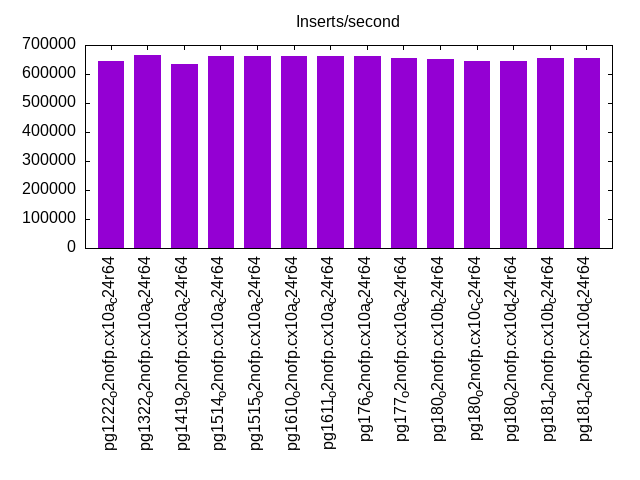
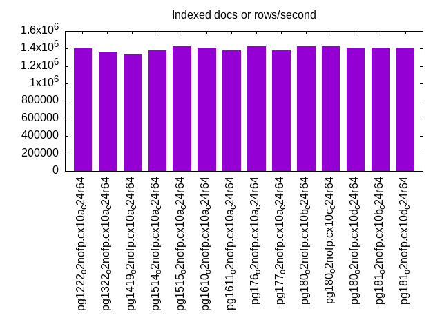
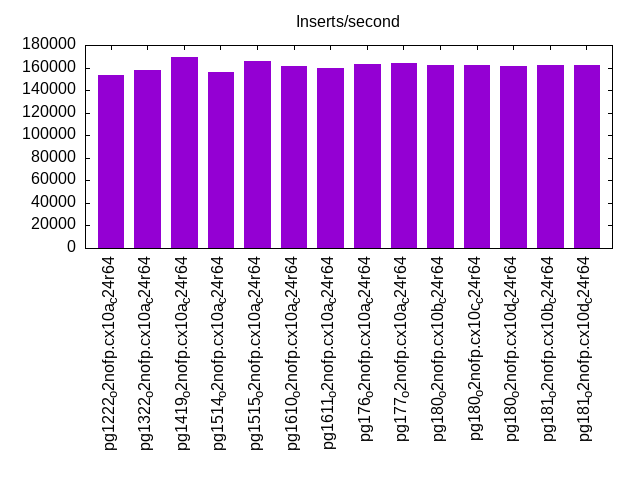
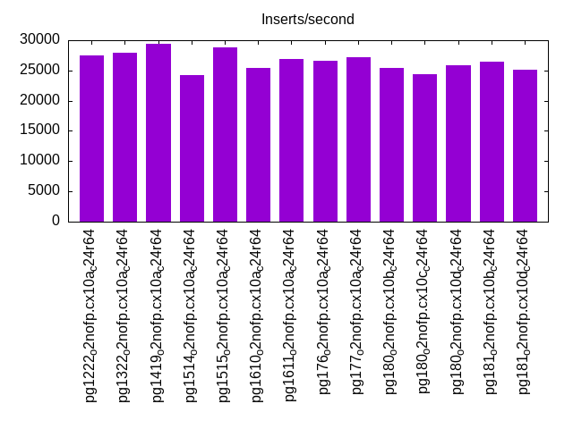
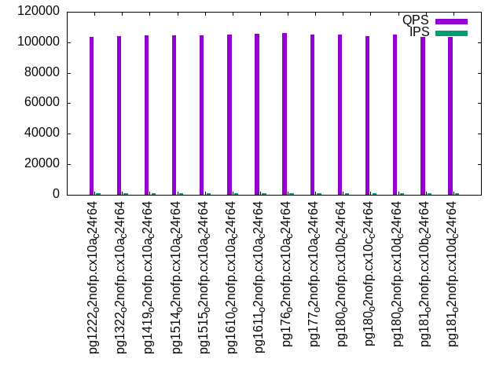
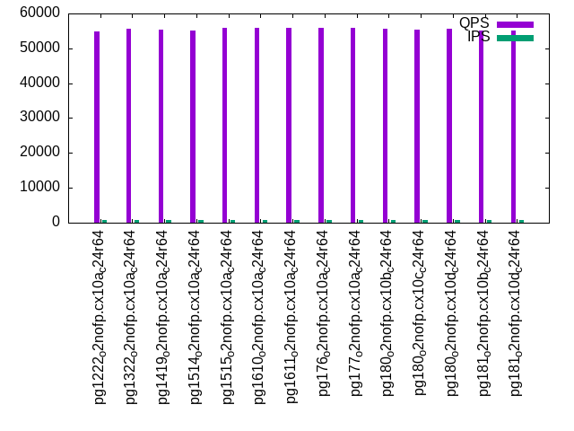
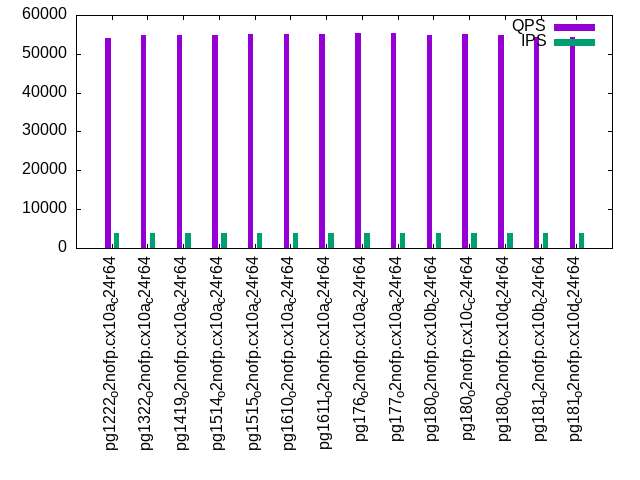
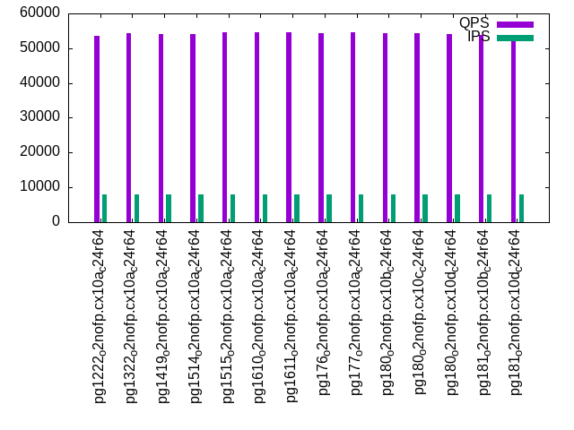

Introduction
This is a report for the insert benchmark with 80M docs and 8 client(s). It is generated by scripts (bash, awk, sed) and Tufte might not be impressed. An overview of the insert benchmark is here and a short update is here. Below, by DBMS, I mean DBMS+version.config. An example is my8020.c10b40 where my means MySQL, 8020 is version 8.0.20 and c10b40 is the name for the configuration file.
The test server has 24 cores, 2 sockets, 64G RAM and 1 NVMe devices. The benchmark was run with 8 clients and there were 1 or 3 connections per client (1 for queries or inserts without rate limits, 1+1 for rate limited inserts+deletes). It uses 8 tables with a table per client. It loads 10M rows per table without secondary indexes, creates 3 secondary indexes per table, then inserts 16m+4m rows per table with a delete per insert to avoid growing the table. It then does 6 read+write tests for 1800s each that do queries as fast as possible with 100,100,500,500,1000,1000 inserts/s and the same for deletes/s per client concurrent with the queries. The database is cached by InnoDB. Clients and the DBMS share one server.
The tested DBMS are:
- pg1222_o2nofp.cx10a_c24r64 - Postgres 12.22 with the cx10a_c24r64 config
- pg1322_o2nofp.cx10a_c24r64 - Postgres 13.22 with the cx10a_c24r64 config
- pg1419_o2nofp.cx10a_c24r64 - Postgres 14.19 with the cx10a_c24r64 config
- pg1514_o2nofp.cx10a_c24r64 - Postgres 15.14 with the cx10a_c24r64 config
- pg1515_o2nofp.cx10a_c24r64 - Postgres 15.15 with the cx10a_c24r64 config
- pg1610_o2nofp.cx10a_c24r64 - Postgres 16.10 with the cx10a_c24r64 config
- pg1611_o2nofp.cx10a_c24r64 - Postgres 16.11 with the cx10a_c24r64 config
- pg176_o2nofp.cx10a_c24r64 - Postgres 17.6 with the cx10a_c24r64 config
- pg177_o2nofp.cx10a_c24r64 - Postgres 17.7 with the cx10a_c24r64 config
- pg180_o2nofp.cx10b_c24r64 - Postgres 18.0 with the cx10b_c24r64 config that uses io_method=sync
- pg180_o2nofp.cx10c_c24r64 - Postgres 18.0 with the cx10c_c24r64 config that uses io_method=worker
- pg180_o2nofp.cx10d_c24r64 - Postgres 18.0 with the cx10d_c24r64 config that uses io_method=io_uring
- pg181_o2nofp.cx10b_c24r64 - Postgres 18.1 with the cx10b_c24r64 config that uses io_method=sync
- pg181_o2nofp.cx10d_c24r64 - Postgres 18.1 with the cx10d_c24r64 config that uses io_method=io_uring
Contents
- Summary
- l.i0: load without secondary indexes
- l.x: create secondary indexes
- l.i1: continue load after secondary indexes created with 50 inserts per transaction
- l.i2: continue load after secondary indexes created with 5 inserts per transaction
- qr100.L1: range queries with 100 insert/s per client
- qp100.L2: point queries with 100 insert/s per client
- qr500.L3: range queries with 500 insert/s per client
- qp500.L4: point queries with 500 insert/s per client
- qr1000.L5: range queries with 1000 insert/s per client
- qp1000.L6: point queries with 1000 insert/s per client
Summary
The numbers are inserts/s for l.i0, l.i1 and l.i2, indexed docs (or rows) /s for l.x and queries/s for qr100, qp100 thru qr1000, qp1000" The values are the average rate over the entire test for inserts (IPS) and queries (QPS). The range of values for IPS and QPS is split into 3 parts: bottom 25%, middle 50%, top 25%. Values in the bottom 25% have a red background, values in the top 25% have a green background and values in the middle have no color. A gray background is used for values that can be ignored because the DBMS did not sustain the target insert rate. Red backgrounds are not used when the minimum value is within 80% of the max value.
| dbms | l.i0 | l.x | l.i1 | l.i2 | qr100 | qp100 | qr500 | qp500 | qr1000 | qp1000 |
|---|---|---|---|---|---|---|---|---|---|---|
| pg1222_o2nofp.cx10a_c24r64 | 645161 | 1403510 | 153661 | 27421 | 103300 | 54744 | 100334 | 54202 | 99558 | 53451 |
| pg1322_o2nofp.cx10a_c24r64 | 666667 | 1355934 | 157442 | 27972 | 104062 | 55587 | 100681 | 54962 | 99884 | 54423 |
| pg1419_o2nofp.cx10a_c24r64 | 634921 | 1333335 | 169088 | 29385 | 104719 | 55336 | 101382 | 54752 | 100732 | 54014 |
| pg1514_o2nofp.cx10a_c24r64 | 661157 | 1379312 | 156479 | 24169 | 104739 | 55221 | 101529 | 54802 | 100774 | 54168 |
| pg1515_o2nofp.cx10a_c24r64 | 661157 | 1428573 | 166018 | 28881 | 104744 | 55810 | 101573 | 55166 | 100635 | 54713 |
| pg1610_o2nofp.cx10a_c24r64 | 661157 | 1403510 | 161412 | 25397 | 105117 | 55913 | 101914 | 55109 | 100989 | 54568 |
| pg1611_o2nofp.cx10a_c24r64 | 661157 | 1379312 | 159800 | 26913 | 105607 | 55928 | 102482 | 55184 | 101642 | 54513 |
| pg176_o2nofp.cx10a_c24r64 | 661157 | 1428573 | 163474 | 26644 | 106219 | 55948 | 102982 | 55258 | 101551 | 54462 |
| pg177_o2nofp.cx10a_c24r64 | 655738 | 1379312 | 164313 | 27119 | 105289 | 55909 | 101930 | 55242 | 101118 | 54625 |
| pg180_o2nofp.cx10b_c24r64 | 650406 | 1428573 | 162025 | 25356 | 104985 | 55605 | 101610 | 54952 | 100914 | 54274 |
| pg180_o2nofp.cx10c_c24r64 | 645161 | 1428573 | 162231 | 24446 | 104288 | 55395 | 101446 | 54998 | 100470 | 54234 |
| pg180_o2nofp.cx10d_c24r64 | 645161 | 1403510 | 161412 | 25911 | 104920 | 55506 | 101503 | 54812 | 100316 | 54150 |
| pg181_o2nofp.cx10b_c24r64 | 655738 | 1403510 | 162643 | 26468 | 103714 | 55134 | 100668 | 54378 | 99674 | 53849 |
| pg181_o2nofp.cx10d_c24r64 | 655738 | 1403510 | 162436 | 25157 | 103387 | 55028 | 100452 | 54427 | 98992 | 53761 |
This table has relative throughput, throughput for the DBMS relative to the DBMS in the first line, using the absolute throughput from the previous table. Values less than 0.95 have a yellow background. Values greater than 1.05 have a blue background.
| dbms | l.i0 | l.x | l.i1 | l.i2 | qr100 | qp100 | qr500 | qp500 | qr1000 | qp1000 |
|---|---|---|---|---|---|---|---|---|---|---|
| pg1222_o2nofp.cx10a_c24r64 | 1.00 | 1.00 | 1.00 | 1.00 | 1.00 | 1.00 | 1.00 | 1.00 | 1.00 | 1.00 |
| pg1322_o2nofp.cx10a_c24r64 | 1.03 | 0.97 | 1.02 | 1.02 | 1.01 | 1.02 | 1.00 | 1.01 | 1.00 | 1.02 |
| pg1419_o2nofp.cx10a_c24r64 | 0.98 | 0.95 | 1.10 | 1.07 | 1.01 | 1.01 | 1.01 | 1.01 | 1.01 | 1.01 |
| pg1514_o2nofp.cx10a_c24r64 | 1.02 | 0.98 | 1.02 | 0.88 | 1.01 | 1.01 | 1.01 | 1.01 | 1.01 | 1.01 |
| pg1515_o2nofp.cx10a_c24r64 | 1.02 | 1.02 | 1.08 | 1.05 | 1.01 | 1.02 | 1.01 | 1.02 | 1.01 | 1.02 |
| pg1610_o2nofp.cx10a_c24r64 | 1.02 | 1.00 | 1.05 | 0.93 | 1.02 | 1.02 | 1.02 | 1.02 | 1.01 | 1.02 |
| pg1611_o2nofp.cx10a_c24r64 | 1.02 | 0.98 | 1.04 | 0.98 | 1.02 | 1.02 | 1.02 | 1.02 | 1.02 | 1.02 |
| pg176_o2nofp.cx10a_c24r64 | 1.02 | 1.02 | 1.06 | 0.97 | 1.03 | 1.02 | 1.03 | 1.02 | 1.02 | 1.02 |
| pg177_o2nofp.cx10a_c24r64 | 1.02 | 0.98 | 1.07 | 0.99 | 1.02 | 1.02 | 1.02 | 1.02 | 1.02 | 1.02 |
| pg180_o2nofp.cx10b_c24r64 | 1.01 | 1.02 | 1.05 | 0.92 | 1.02 | 1.02 | 1.01 | 1.01 | 1.01 | 1.02 |
| pg180_o2nofp.cx10c_c24r64 | 1.00 | 1.02 | 1.06 | 0.89 | 1.01 | 1.01 | 1.01 | 1.01 | 1.01 | 1.01 |
| pg180_o2nofp.cx10d_c24r64 | 1.00 | 1.00 | 1.05 | 0.94 | 1.02 | 1.01 | 1.01 | 1.01 | 1.01 | 1.01 |
| pg181_o2nofp.cx10b_c24r64 | 1.02 | 1.00 | 1.06 | 0.97 | 1.00 | 1.01 | 1.00 | 1.00 | 1.00 | 1.01 |
| pg181_o2nofp.cx10d_c24r64 | 1.02 | 1.00 | 1.06 | 0.92 | 1.00 | 1.01 | 1.00 | 1.00 | 0.99 | 1.01 |
This lists the average rate of inserts/s for the tests that do inserts concurrent with queries. For such tests the query rate is listed in the table above. The read+write tests are setup so that the insert rate should match the target rate every second. Cells that are not at least 95% of the target have a red background to indicate a failure to satisfy the target.
| dbms | qr100.L1 | qp100.L2 | qr500.L3 | qp500.L4 | qr1000.L5 | qp1000.L6 |
|---|---|---|---|---|---|---|
| pg1222_o2nofp.cx10a_c24r64 | 797 | 797 | 3982 | 3984 | 7969 | 7965 |
| pg1322_o2nofp.cx10a_c24r64 | 797 | 797 | 3982 | 3984 | 7969 | 7965 |
| pg1419_o2nofp.cx10a_c24r64 | 797 | 797 | 3982 | 3984 | 7969 | 7965 |
| pg1514_o2nofp.cx10a_c24r64 | 797 | 797 | 3982 | 3984 | 7965 | 7965 |
| pg1515_o2nofp.cx10a_c24r64 | 796 | 797 | 3982 | 3982 | 7969 | 7969 |
| pg1610_o2nofp.cx10a_c24r64 | 797 | 797 | 3982 | 3984 | 7969 | 7965 |
| pg1611_o2nofp.cx10a_c24r64 | 796 | 797 | 3982 | 3982 | 7969 | 7969 |
| pg176_o2nofp.cx10a_c24r64 | 797 | 796 | 3984 | 3984 | 7965 | 7969 |
| pg177_o2nofp.cx10a_c24r64 | 797 | 796 | 3984 | 3984 | 7965 | 7965 |
| pg180_o2nofp.cx10b_c24r64 | 797 | 797 | 3982 | 3982 | 7969 | 7965 |
| pg180_o2nofp.cx10c_c24r64 | 797 | 796 | 3982 | 3984 | 7969 | 7965 |
| pg180_o2nofp.cx10d_c24r64 | 797 | 796 | 3982 | 3984 | 7969 | 7965 |
| pg181_o2nofp.cx10b_c24r64 | 796 | 797 | 3984 | 3982 | 7965 | 7969 |
| pg181_o2nofp.cx10d_c24r64 | 797 | 797 | 3982 | 3982 | 7969 | 7969 |
| target | 800 | 800 | 4000 | 4000 | 8000 | 8000 |
l.i0
l.i0: load without secondary indexes. Graphs for performance per 1-second interval are here.
Average throughput:
Insert response time histogram: each cell has the percentage of responses that take <= the time in the header and max is the max response time in seconds. For the max column values in the top 25% of the range have a red background and in the bottom 25% of the range have a green background. The red background is not used when the min value is within 80% of the max value.
| dbms | 256us | 1ms | 4ms | 16ms | 64ms | 256ms | 1s | 4s | 16s | gt | max |
|---|---|---|---|---|---|---|---|---|---|---|---|
| pg1222_o2nofp.cx10a_c24r64 | 12.690 | 87.246 | 0.053 | 0.011 | 0.031 | ||||||
| pg1322_o2nofp.cx10a_c24r64 | 48.908 | 51.027 | 0.049 | 0.014 | 0.002 | 0.095 | |||||
| pg1419_o2nofp.cx10a_c24r64 | 2.764 | 97.171 | 0.045 | 0.020 | nonzero | 0.066 | |||||
| pg1514_o2nofp.cx10a_c24r64 | 46.127 | 53.794 | 0.060 | 0.018 | nonzero | 0.065 | |||||
| pg1515_o2nofp.cx10a_c24r64 | 49.605 | 50.330 | 0.051 | 0.015 | 0.033 | ||||||
| pg1610_o2nofp.cx10a_c24r64 | 39.168 | 60.763 | 0.058 | 0.011 | 0.031 | ||||||
| pg1611_o2nofp.cx10a_c24r64 | 37.939 | 61.995 | 0.040 | 0.025 | 0.001 | 0.075 | |||||
| pg176_o2nofp.cx10a_c24r64 | 28.985 | 70.950 | 0.050 | 0.015 | 0.030 | ||||||
| pg177_o2nofp.cx10a_c24r64 | 28.680 | 71.272 | 0.020 | 0.024 | 0.004 | 0.167 | |||||
| pg180_o2nofp.cx10b_c24r64 | 11.433 | 88.509 | 0.050 | 0.008 | 0.024 | ||||||
| pg180_o2nofp.cx10c_c24r64 | 14.051 | 85.884 | 0.052 | 0.012 | 0.001 | 0.129 | |||||
| pg180_o2nofp.cx10d_c24r64 | 16.785 | 83.150 | 0.056 | 0.008 | 0.030 | ||||||
| pg181_o2nofp.cx10b_c24r64 | 30.006 | 69.944 | 0.022 | 0.020 | 0.009 | 0.165 | |||||
| pg181_o2nofp.cx10d_c24r64 | 29.337 | 70.618 | 0.010 | 0.023 | 0.011 | 0.100 |
Performance metrics for the DBMS listed above. Some are normalized by throughput, others are not. Legend for results is here.
ips qps rps rmbps wps wmbps rpq rkbpq wpi wkbpi csps cpups cspq cpupq dbgb1 dbgb2 rss maxop p50 p99 tag 645161 0 1 0.0 2478.5 281.6 0.000 0.000 0.004 0.447 71849 46.4 0.111 17 7.7 20.7 4.9 0.031 94288 82590 pg1222_o2nofp.cx10a_c24r64 666667 0 1 0.0 2492.4 285.3 0.000 0.000 0.004 0.438 71964 46.1 0.108 17 7.7 20.7 1.0 0.095 96988 75391 pg1322_o2nofp.cx10a_c24r64 634921 0 1 0.0 2365.7 271.2 0.000 0.000 0.004 0.437 70115 45.7 0.110 17 7.7 20.7 0.5 0.066 92589 64391 pg1419_o2nofp.cx10a_c24r64 661157 0 1 0.0 2488.5 285.4 0.000 0.000 0.004 0.442 72102 46.2 0.109 17 7.7 20.7 4.4 0.065 96788 80389 pg1514_o2nofp.cx10a_c24r64 661157 0 1 0.0 2485.7 285.7 0.000 0.000 0.004 0.443 71408 46.0 0.108 17 7.7 20.7 3.2 0.033 97087 85489 pg1515_o2nofp.cx10a_c24r64 661157 0 1 0.0 2479.7 285.0 0.000 0.000 0.004 0.441 72063 46.1 0.109 17 7.7 20.7 5.0 0.031 96688 83289 pg1610_o2nofp.cx10a_c24r64 661157 0 1 0.0 2462.5 284.6 0.000 0.000 0.004 0.441 71330 46.1 0.108 17 7.7 20.7 5.1 0.075 96489 78589 pg1611_o2nofp.cx10a_c24r64 661157 0 1 0.0 2512.3 284.4 0.000 0.000 0.004 0.440 64247 46.0 0.097 17 7.7 20.7 0.2 0.030 95788 77991 pg176_o2nofp.cx10a_c24r64 655738 0 0 0.0 2441.3 282.8 0.000 0.000 0.004 0.442 63363 45.7 0.097 17 7.7 20.7 0.2 0.167 95587 78392 pg177_o2nofp.cx10a_c24r64 650406 0 1 0.0 2491.4 282.0 0.000 0.000 0.004 0.444 63881 46.2 0.098 17 7.7 20.7 0.2 0.024 93988 83490 pg180_o2nofp.cx10b_c24r64 645161 0 1 0.0 2389.0 272.4 0.000 0.000 0.004 0.432 61974 44.9 0.096 17 7.7 20.7 0.2 0.129 94388 82890 pg180_o2nofp.cx10c_c24r64 645161 0 1 0.0 2471.7 283.1 0.000 0.000 0.004 0.449 64078 46.2 0.099 17 7.7 20.7 0.2 0.030 94788 82552 pg180_o2nofp.cx10d_c24r64 655738 0 0 0.0 2436.5 283.3 0.000 0.000 0.004 0.442 63331 45.8 0.097 17 7.7 20.7 0.2 0.165 95588 64192 pg181_o2nofp.cx10b_c24r64 655738 0 0 0.0 2434.5 282.3 0.000 0.000 0.004 0.441 63234 45.7 0.096 17 7.7 20.7 0.2 0.100 95888 55493 pg181_o2nofp.cx10d_c24r64
Average values from iostat.
r/s rkB/s rrqm/s %rrqm r_await rareq-s w/s wkB/s wrqm/s %wrqm w_await wareq-s d/s dkB/s drqm/s %drqm d_await dareq-s f/s f_await aqu-sz %util 1.292 5.167 0.000 0.000 0.191 3.833 2478.5 288384 172.8 7.155 3.376 116.7 4.133 31.53 0.000 0.000 0.278 6.508 0.000 0.000 10.55 16.22 pg1222_o2nofp.cx10a_c24r64 0.783 3.133 0.000 0.000 0.410 3.167 2492.4 292178 176.8 7.167 3.628 117.7 4.275 56.10 0.000 0.000 0.267 9.745 0.000 0.000 11.19 16.50 pg1322_o2nofp.cx10a_c24r64 0.856 3.424 0.000 0.000 0.406 3.520 2365.7 277704 163.2 7.082 3.705 117.8 4.184 40.06 0.000 0.000 0.290 7.794 0.000 0.000 11.37 15.98 pg1419_o2nofp.cx10a_c24r64 0.908 3.633 0.000 0.000 0.469 3.500 2488.5 292264 169.0 7.052 3.240 117.8 0.350 6.133 0.000 0.000 0.139 12.97 0.000 0.000 11.18 16.32 pg1514_o2nofp.cx10a_c24r64 1.250 5.000 0.000 0.000 0.197 3.667 2485.7 292589 166.1 6.983 3.177 118.1 0.517 10.30 0.000 0.000 0.079 14.11 0.000 0.000 10.99 16.57 pg1515_o2nofp.cx10a_c24r64 0.958 3.833 0.000 0.000 0.397 3.500 2479.7 291871 165.2 6.915 3.094 118.1 0.483 10.97 0.000 0.000 0.071 16.80 0.000 0.000 10.42 16.92 pg1610_o2nofp.cx10a_c24r64 0.842 3.366 0.000 0.000 0.531 3.667 2462.5 291472 162.4 6.967 3.539 118.7 0.592 6.600 0.000 0.000 0.117 12.97 0.000 0.000 12.89 16.58 pg1611_o2nofp.cx10a_c24r64 1.175 4.700 0.000 0.000 0.208 3.333 2512.3 291218 169.0 7.038 3.121 116.3 0.583 8.100 0.000 0.000 0.094 10.44 0.000 0.000 10.90 16.25 pg176_o2nofp.cx10a_c24r64 0.050 0.200 0.000 0.000 0.833 0.667 2441.3 289630 153.0 6.291 3.992 118.9 0.492 7.633 0.000 0.000 0.185 10.92 0.000 0.000 14.09 16.59 pg177_o2nofp.cx10a_c24r64 1.392 5.567 0.000 0.000 0.182 3.667 2491.4 288734 167.4 7.004 3.096 116.0 0.417 6.700 0.000 0.000 0.077 4.776 0.000 0.000 10.25 16.48 pg180_o2nofp.cx10b_c24r64 1.008 4.032 0.000 0.000 0.243 3.200 2389.0 278889 158.9 6.882 3.001 117.2 0.528 16.96 0.000 0.000 0.124 13.99 0.000 0.000 10.03 15.82 pg180_o2nofp.cx10c_c24r64 1.217 4.867 0.000 0.000 0.246 3.833 2471.7 289885 164.2 6.903 3.044 117.7 0.567 8.000 0.000 0.000 0.107 10.53 0.000 0.000 9.997 16.40 pg180_o2nofp.cx10d_c24r64 0.025 0.100 0.000 0.000 0.750 0.500 2436.5 290141 158.7 6.821 4.156 119.2 0.425 9.233 0.000 0.000 0.145 10.37 0.000 0.000 15.49 16.51 pg181_o2nofp.cx10b_c24r64 0.025 0.100 0.000 0.000 0.000 0.500 2434.5 289089 159.3 6.832 4.436 119.0 0.375 8.200 0.000 0.000 0.195 8.197 0.000 0.000 16.61 16.64 pg181_o2nofp.cx10d_c24r64
l.x
l.x: create secondary indexes.
Average throughput:
Performance metrics for the DBMS listed above. Some are normalized by throughput, others are not. Legend for results is here.
ips qps rps rmbps wps wmbps rpq rkbpq wpi wkbpi csps cpups cspq cpupq dbgb1 dbgb2 rss maxop p50 p99 tag 1403510 0 2 0.0 3390.2 383.8 0.000 0.000 0.002 0.280 6724 24.3 0.005 4 15.4 35.4 6.7 0.003 NA NA pg1222_o2nofp.cx10a_c24r64 1355934 0 2 0.0 3332.2 377.7 0.000 0.000 0.002 0.285 5776 23.9 0.004 4 15.4 35.5 0.3 0.003 NA NA pg1322_o2nofp.cx10a_c24r64 1333335 0 1 0.0 3382.1 383.2 0.000 0.000 0.003 0.294 6216 23.7 0.005 4 15.4 35.5 6.7 0.003 NA NA pg1419_o2nofp.cx10a_c24r64 1379312 0 1 0.0 3274.7 370.6 0.000 0.000 0.002 0.275 5761 24.5 0.004 4 15.4 35.5 6.7 0.003 NA NA pg1514_o2nofp.cx10a_c24r64 1428573 0 2 0.0 3377.9 382.8 0.000 0.000 0.002 0.274 6060 24.8 0.004 4 15.4 35.5 6.6 0.003 NA NA pg1515_o2nofp.cx10a_c24r64 1403510 0 1 0.0 3338.0 378.0 0.000 0.000 0.002 0.276 6131 24.2 0.004 4 15.4 35.5 6.7 0.002 NA NA pg1610_o2nofp.cx10a_c24r64 1379312 0 1 0.0 3283.2 371.6 0.000 0.000 0.002 0.276 5722 25.0 0.004 4 15.4 35.5 6.7 0.003 NA NA pg1611_o2nofp.cx10a_c24r64 1428573 0 2 0.0 3705.0 420.5 0.000 0.000 0.003 0.301 3937 23.5 0.003 4 15.4 35.4 5.6 0.003 NA NA pg176_o2nofp.cx10a_c24r64 1379312 0 0 0.0 3862.3 438.7 0.000 0.000 0.003 0.326 3626 24.1 0.003 4 15.4 35.4 6.1 0.003 NA NA pg177_o2nofp.cx10a_c24r64 1428573 0 3 0.0 3998.5 454.3 0.000 0.000 0.003 0.326 3992 23.7 0.003 4 15.4 35.4 6.7 0.003 NA NA pg180_o2nofp.cx10b_c24r64 1428573 0 2 0.0 3913.4 444.4 0.000 0.000 0.003 0.319 4067 23.4 0.003 4 15.4 35.4 6.1 0.003 NA NA pg180_o2nofp.cx10c_c24r64 1403510 0 2 0.0 3850.7 437.0 0.000 0.000 0.003 0.319 3850 23.5 0.003 4 15.4 35.4 6.7 0.003 NA NA pg180_o2nofp.cx10d_c24r64 1403510 0 0 0.0 3758.5 426.6 0.000 0.000 0.003 0.311 3709 23.8 0.003 4 15.4 35.4 6.7 0.003 NA NA pg181_o2nofp.cx10b_c24r64 1403510 0 0 0.0 3884.0 440.8 0.000 0.000 0.003 0.322 3488 24.0 0.002 4 15.4 35.4 6.7 0.003 NA NA pg181_o2nofp.cx10d_c24r64
Average values from iostat.
r/s rkB/s rrqm/s %rrqm r_await rareq-s w/s wkB/s wrqm/s %wrqm w_await wareq-s d/s dkB/s drqm/s %drqm d_await dareq-s f/s f_await aqu-sz %util 2.073 8.291 0.000 0.000 5.193 3.273 3390.2 392994 129.1 7.673 9.000 105.9 2.927 19.64 0.000 0.000 0.307 6.347 0.000 0.000 36.86 26.59 pg1222_o2nofp.cx10a_c24r64 1.667 6.667 0.000 0.000 4.123 3.000 3332.2 386759 131.4 9.814 8.732 101.7 3.450 32.07 0.000 0.000 0.268 9.101 0.000 0.000 37.59 25.84 pg1322_o2nofp.cx10a_c24r64 0.817 3.267 0.000 0.000 2.723 3.000 3382.1 392411 125.5 7.696 11.20 107.0 2.533 19.27 0.000 0.000 0.276 7.031 0.000 0.000 44.54 25.86 pg1419_o2nofp.cx10a_c24r64 1.018 4.073 0.000 0.000 2.876 3.273 3274.7 379518 127.4 12.26 9.287 102.0 0.382 6.909 0.000 0.000 0.208 10.35 0.000 0.000 38.71 24.71 pg1514_o2nofp.cx10a_c24r64 1.745 6.981 0.000 0.000 4.605 3.273 3377.9 392014 126.8 12.18 7.456 101.8 0.782 12.22 0.000 0.000 0.145 7.125 0.000 0.000 31.96 26.45 pg1515_o2nofp.cx10a_c24r64 1.327 5.309 0.000 0.000 5.754 3.636 3338.0 387092 125.7 13.00 8.430 99.45 1.236 15.56 0.000 0.000 0.157 7.932 0.000 0.000 35.84 25.59 pg1610_o2nofp.cx10a_c24r64 0.855 3.418 0.000 0.000 2.720 3.273 3283.2 380512 123.1 12.65 10.64 102.8 0.273 1.745 0.000 0.000 0.136 3.909 0.000 0.000 44.39 24.90 pg1611_o2nofp.cx10a_c24r64 1.745 6.982 0.000 0.000 0.487 3.273 3705.0 430571 133.2 8.702 5.616 108.6 3.618 34981.7 0.000 0.000 0.274 5916.9 0.000 0.000 28.66 28.54 pg176_o2nofp.cx10a_c24r64 0.182 0.727 0.000 0.000 0.818 2.182 3862.3 449260 126.9 7.466 7.203 110.2 3.200 36051.2 0.000 0.000 0.303 6418.1 0.000 0.000 43.15 30.42 pg177_o2nofp.cx10a_c24r64 2.673 10.69 0.000 0.000 0.206 3.273 3998.5 465199 137.4 7.349 5.237 109.7 4.236 41875.1 0.000 0.000 0.201 7795.3 0.000 0.000 31.12 31.13 pg180_o2nofp.cx10b_c24r64 1.836 7.345 0.000 0.000 0.386 3.636 3913.4 455064 135.9 7.674 5.730 109.8 3.782 42079.9 0.000 0.000 0.229 7995.6 0.000 0.000 29.84 30.61 pg180_o2nofp.cx10c_c24r64 2.000 8.000 0.000 0.000 0.650 3.273 3850.7 447509 139.7 7.230 5.344 109.1 3.236 36182.8 0.000 0.000 0.186 8789.6 0.000 0.000 30.02 30.74 pg180_o2nofp.cx10d_c24r64 0.036 0.145 0.000 0.000 0.500 0.364 3758.5 436871 131.9 13.85 6.635 99.84 3.327 33289.5 0.000 0.000 0.300 7377.9 0.000 0.000 40.33 28.73 pg181_o2nofp.cx10b_c24r64 0.109 0.436 0.000 0.000 0.182 1.091 3884.0 451390 129.5 7.541 7.305 110.3 2.655 36208.8 0.000 0.000 0.423 7741.3 0.000 0.000 47.48 30.37 pg181_o2nofp.cx10d_c24r64
l.i1
l.i1: continue load after secondary indexes created with 50 inserts per transaction. Graphs for performance per 1-second interval are here.
Average throughput:
Insert response time histogram: each cell has the percentage of responses that take <= the time in the header and max is the max response time in seconds. For the max column values in the top 25% of the range have a red background and in the bottom 25% of the range have a green background. The red background is not used when the min value is within 80% of the max value.
| dbms | 256us | 1ms | 4ms | 16ms | 64ms | 256ms | 1s | 4s | 16s | gt | max |
|---|---|---|---|---|---|---|---|---|---|---|---|
| pg1222_o2nofp.cx10a_c24r64 | 99.744 | 0.144 | 0.112 | 0.001 | 0.148 | ||||||
| pg1322_o2nofp.cx10a_c24r64 | 99.753 | 0.144 | 0.102 | 0.001 | 0.097 | ||||||
| pg1419_o2nofp.cx10a_c24r64 | 99.683 | 0.178 | 0.139 | nonzero | 0.079 | ||||||
| pg1514_o2nofp.cx10a_c24r64 | 99.712 | 0.178 | 0.110 | nonzero | 0.098 | ||||||
| pg1515_o2nofp.cx10a_c24r64 | 99.710 | 0.165 | 0.125 | nonzero | 0.065 | ||||||
| pg1610_o2nofp.cx10a_c24r64 | 99.696 | 0.181 | 0.123 | nonzero | 0.082 | ||||||
| pg1611_o2nofp.cx10a_c24r64 | 99.696 | 0.178 | 0.126 | nonzero | 0.074 | ||||||
| pg176_o2nofp.cx10a_c24r64 | 99.674 | 0.189 | 0.137 | nonzero | 0.102 | ||||||
| pg177_o2nofp.cx10a_c24r64 | 99.628 | 0.225 | 0.147 | nonzero | 0.095 | ||||||
| pg180_o2nofp.cx10b_c24r64 | 99.654 | 0.225 | 0.120 | nonzero | 0.078 | ||||||
| pg180_o2nofp.cx10c_c24r64 | 99.680 | 0.198 | 0.122 | nonzero | 0.089 | ||||||
| pg180_o2nofp.cx10d_c24r64 | 99.682 | 0.180 | 0.137 | 0.001 | 0.105 | ||||||
| pg181_o2nofp.cx10b_c24r64 | 99.704 | 0.185 | 0.110 | 0.001 | 0.089 | ||||||
| pg181_o2nofp.cx10d_c24r64 | 99.670 | 0.189 | 0.141 | 0.001 | 0.113 |
Delete response time histogram: each cell has the percentage of responses that take <= the time in the header and max is the max response time in seconds. For the max column values in the top 25% of the range have a red background and in the bottom 25% of the range have a green background. The red background is not used when the min value is within 80% of the max value.
| dbms | 256us | 1ms | 4ms | 16ms | 64ms | 256ms | 1s | 4s | 16s | gt | max |
|---|---|---|---|---|---|---|---|---|---|---|---|
| pg1222_o2nofp.cx10a_c24r64 | 20.547 | 71.727 | 7.607 | 0.118 | 0.001 | 0.147 | |||||
| pg1322_o2nofp.cx10a_c24r64 | 21.743 | 73.402 | 4.747 | 0.107 | 0.001 | 0.099 | |||||
| pg1419_o2nofp.cx10a_c24r64 | 18.625 | 79.130 | 2.123 | 0.122 | nonzero | 0.078 | |||||
| pg1514_o2nofp.cx10a_c24r64 | 17.005 | 77.507 | 5.367 | 0.120 | nonzero | 0.103 | |||||
| pg1515_o2nofp.cx10a_c24r64 | 18.568 | 78.915 | 2.396 | 0.121 | nonzero | 0.068 | |||||
| pg1610_o2nofp.cx10a_c24r64 | 16.907 | 78.454 | 4.502 | 0.137 | nonzero | 0.086 | |||||
| pg1611_o2nofp.cx10a_c24r64 | 16.831 | 78.282 | 4.757 | 0.130 | nonzero | 0.075 | |||||
| pg176_o2nofp.cx10a_c24r64 | 14.518 | 81.139 | 4.201 | 0.141 | nonzero | 0.103 | |||||
| pg177_o2nofp.cx10a_c24r64 | 15.785 | 79.922 | 4.148 | 0.145 | nonzero | 0.094 | |||||
| pg180_o2nofp.cx10b_c24r64 | 13.948 | 81.666 | 4.259 | 0.127 | nonzero | 0.077 | |||||
| pg180_o2nofp.cx10c_c24r64 | 13.751 | 81.891 | 4.232 | 0.125 | nonzero | 0.094 | |||||
| pg180_o2nofp.cx10d_c24r64 | 13.684 | 81.731 | 4.444 | 0.141 | 0.001 | 0.100 | |||||
| pg181_o2nofp.cx10b_c24r64 | 13.214 | 83.440 | 3.226 | 0.119 | 0.001 | 0.090 | |||||
| pg181_o2nofp.cx10d_c24r64 | 14.220 | 81.190 | 4.450 | 0.140 | 0.001 | 0.103 |
Performance metrics for the DBMS listed above. Some are normalized by throughput, others are not. Legend for results is here.
ips qps rps rmbps wps wmbps rpq rkbpq wpi wkbpi csps cpups cspq cpupq dbgb1 dbgb2 rss maxop p50 p99 tag 153661 0 0 0.0 1944.3 220.7 0.000 0.000 0.013 1.471 79775 63.5 0.519 99 22.6 86.7 15.9 0.148 22447 3199 pg1222_o2nofp.cx10a_c24r64 157442 0 0 0.0 1993.1 226.4 0.000 0.000 0.013 1.473 81388 63.1 0.517 96 22.5 86.5 19.2 0.097 20097 7099 pg1322_o2nofp.cx10a_c24r64 169088 0 0 0.0 2117.8 239.5 0.000 0.000 0.013 1.450 88402 62.2 0.523 88 21.8 85.9 14.6 0.079 21047 5399 pg1419_o2nofp.cx10a_c24r64 156479 0 0 0.0 1958.9 221.3 0.000 0.000 0.013 1.448 82661 61.3 0.528 94 21.7 85.7 18.9 0.098 17748 5149 pg1514_o2nofp.cx10a_c24r64 166018 0 0 0.0 2072.4 234.8 0.000 0.000 0.012 1.448 85540 62.1 0.515 90 21.8 85.8 16.9 0.065 19847 4149 pg1515_o2nofp.cx10a_c24r64 161412 0 0 0.0 1934.7 227.2 0.000 0.000 0.012 1.442 84221 62.0 0.522 92 21.6 85.7 17.0 0.082 18597 5749 pg1610_o2nofp.cx10a_c24r64 159800 0 0 0.0 1910.2 224.5 0.000 0.000 0.012 1.439 82404 61.0 0.516 92 21.6 85.7 14.0 0.074 19847 4149 pg1611_o2nofp.cx10a_c24r64 163474 0 0 0.0 1969.8 230.3 0.000 0.000 0.012 1.442 76349 60.8 0.467 89 21.6 85.6 9.6 0.102 18048 4249 pg176_o2nofp.cx10a_c24r64 164313 0 0 0.0 1968.9 231.0 0.000 0.000 0.012 1.440 75298 60.4 0.458 88 21.6 85.7 15.2 0.095 18148 4249 pg177_o2nofp.cx10a_c24r64 162025 0 0 0.0 1961.3 228.4 0.000 0.000 0.012 1.444 75709 61.1 0.467 91 21.5 85.6 16.0 0.078 17348 4099 pg180_o2nofp.cx10b_c24r64 162231 0 0 0.0 1967.4 230.5 0.000 0.000 0.012 1.455 75588 61.3 0.466 91 21.5 85.6 15.5 0.089 17747 5049 pg180_o2nofp.cx10c_c24r64 161412 0 0 0.0 1944.4 227.3 0.000 0.000 0.012 1.442 75822 61.0 0.470 91 21.5 85.6 18.8 0.105 17747 3699 pg180_o2nofp.cx10d_c24r64 162643 0 0 0.0 1974.2 230.1 0.000 0.000 0.012 1.449 74951 60.3 0.461 89 21.6 85.7 10.9 0.089 16898 4949 pg181_o2nofp.cx10b_c24r64 162436 0 0 0.0 1963.3 230.1 0.000 0.000 0.012 1.450 74899 60.8 0.461 90 21.7 85.7 15.3 0.113 17698 4499 pg181_o2nofp.cx10d_c24r64
Average values from iostat.
r/s rkB/s rrqm/s %rrqm r_await rareq-s w/s wkB/s wrqm/s %wrqm w_await wareq-s d/s dkB/s drqm/s %drqm d_await dareq-s f/s f_await aqu-sz %util 0.467 1.870 0.000 0.000 0.186 2.193 1944.3 226008 113.4 4.735 1.545 116.3 3.453 418.1 0.000 0.000 0.267 96.02 0.000 0.000 3.490 11.60 pg1222_o2nofp.cx10a_c24r64 0.325 1.299 0.000 0.000 0.144 1.975 1993.1 231868 125.8 5.107 1.438 116.4 3.372 115.9 0.000 0.000 0.265 29.76 0.000 0.000 3.434 11.89 pg1322_o2nofp.cx10a_c24r64 0.342 1.367 0.000 0.000 0.114 2.384 2117.8 245211 123.3 4.784 1.537 116.0 3.221 104.6 0.000 0.000 0.262 19.96 0.000 0.000 3.771 12.63 pg1419_o2nofp.cx10a_c24r64 0.363 1.453 0.000 0.000 0.093 2.307 1958.9 226634 104.3 4.317 1.443 116.0 0.121 31.97 0.000 0.000 0.023 23.81 0.000 0.000 3.358 11.64 pg1514_o2nofp.cx10a_c24r64 0.397 1.590 0.000 0.000 0.131 2.208 2072.4 240462 115.0 4.386 1.481 116.2 0.123 48.08 0.000 0.000 0.015 9.293 0.000 0.000 3.551 12.11 pg1515_o2nofp.cx10a_c24r64 0.367 1.468 0.000 0.000 0.224 2.177 1934.7 232680 117.6 4.869 1.447 119.9 0.114 27.68 0.000 0.000 0.022 10.20 0.000 0.000 3.217 11.73 pg1610_o2nofp.cx10a_c24r64 0.310 1.240 0.000 0.000 0.082 1.600 1910.2 229917 105.3 4.328 1.458 120.0 0.116 45.33 0.000 0.000 0.024 6.012 0.000 0.000 3.249 11.70 pg1611_o2nofp.cx10a_c24r64 0.437 1.749 0.000 0.000 0.154 2.462 1969.8 235799 105.2 4.451 1.463 119.4 0.067 102.3 0.000 0.000 0.015 197.7 0.000 0.000 3.343 12.02 pg176_o2nofp.cx10a_c24r64 0.023 0.092 0.000 0.000 0.093 0.359 1968.9 236529 101.8 4.197 1.623 119.6 0.083 164.8 0.000 0.000 0.026 185.2 0.000 0.000 3.679 12.14 pg177_o2nofp.cx10a_c24r64 0.546 2.182 0.000 0.000 0.175 2.608 1961.3 233890 106.4 4.380 1.558 118.9 0.070 108.3 0.000 0.000 0.025 136.2 0.000 0.000 3.548 12.03 pg180_o2nofp.cx10b_c24r64 0.507 2.028 0.000 0.000 0.222 2.318 1967.4 236048 101.0 4.066 1.513 119.6 0.083 53.59 0.000 0.000 0.031 115.1 0.000 0.000 3.458 12.08 pg180_o2nofp.cx10c_c24r64 0.457 1.828 0.000 0.000 0.194 2.430 1944.4 232748 106.8 4.555 1.496 119.4 0.063 74.07 0.000 0.000 0.011 139.1 0.000 0.000 3.419 12.00 pg180_o2nofp.cx10d_c24r64 0.009 0.036 0.000 0.000 0.038 0.178 1974.2 235658 101.8 4.157 1.768 119.0 0.079 103.3 0.000 0.000 0.030 146.6 0.000 0.000 3.961 12.07 pg181_o2nofp.cx10b_c24r64 0.010 0.041 0.000 0.000 0.013 0.204 1963.3 235584 101.9 4.129 1.635 119.6 0.074 60.91 0.000 0.000 0.023 121.8 0.000 0.000 3.777 12.09 pg181_o2nofp.cx10d_c24r64
l.i2
l.i2: continue load after secondary indexes created with 5 inserts per transaction. Graphs for performance per 1-second interval are here.
Average throughput:
Insert response time histogram: each cell has the percentage of responses that take <= the time in the header and max is the max response time in seconds. For the max column values in the top 25% of the range have a red background and in the bottom 25% of the range have a green background. The red background is not used when the min value is within 80% of the max value.
| dbms | 256us | 1ms | 4ms | 16ms | 64ms | 256ms | 1s | 4s | 16s | gt | max |
|---|---|---|---|---|---|---|---|---|---|---|---|
| pg1222_o2nofp.cx10a_c24r64 | 12.625 | 87.373 | 0.003 | 0.004 | |||||||
| pg1322_o2nofp.cx10a_c24r64 | 15.077 | 84.922 | 0.002 | nonzero | nonzero | 0.074 | |||||
| pg1419_o2nofp.cx10a_c24r64 | 13.570 | 86.428 | 0.001 | nonzero | 0.084 | ||||||
| pg1514_o2nofp.cx10a_c24r64 | 13.477 | 86.523 | 0.001 | nonzero | nonzero | 0.071 | |||||
| pg1515_o2nofp.cx10a_c24r64 | 10.179 | 89.820 | 0.001 | nonzero | 0.073 | ||||||
| pg1610_o2nofp.cx10a_c24r64 | 17.563 | 82.437 | 0.001 | nonzero | 0.070 | ||||||
| pg1611_o2nofp.cx10a_c24r64 | 15.511 | 84.488 | 0.001 | 0.002 | |||||||
| pg176_o2nofp.cx10a_c24r64 | 20.290 | 79.709 | 0.001 | 0.002 | |||||||
| pg177_o2nofp.cx10a_c24r64 | 24.554 | 75.446 | 0.001 | nonzero | 0.080 | ||||||
| pg180_o2nofp.cx10b_c24r64 | 21.071 | 78.928 | 0.001 | nonzero | 0.076 | ||||||
| pg180_o2nofp.cx10c_c24r64 | 21.895 | 78.104 | 0.001 | nonzero | 0.072 | ||||||
| pg180_o2nofp.cx10d_c24r64 | 21.931 | 78.067 | 0.002 | nonzero | nonzero | 0.073 | |||||
| pg181_o2nofp.cx10b_c24r64 | 26.150 | 73.850 | nonzero | 0.002 | |||||||
| pg181_o2nofp.cx10d_c24r64 | 19.297 | 80.700 | 0.003 | nonzero | 0.074 |
Delete response time histogram: each cell has the percentage of responses that take <= the time in the header and max is the max response time in seconds. For the max column values in the top 25% of the range have a red background and in the bottom 25% of the range have a green background. The red background is not used when the min value is within 80% of the max value.
| dbms | 256us | 1ms | 4ms | 16ms | 64ms | 256ms | 1s | 4s | 16s | gt | max |
|---|---|---|---|---|---|---|---|---|---|---|---|
| pg1222_o2nofp.cx10a_c24r64 | 0.076 | 47.666 | 51.535 | 0.722 | 0.001 | 0.037 | |||||
| pg1322_o2nofp.cx10a_c24r64 | 0.059 | 48.398 | 49.855 | 1.688 | nonzero | nonzero | 0.075 | ||||
| pg1419_o2nofp.cx10a_c24r64 | 0.044 | 40.188 | 59.766 | 0.002 | nonzero | nonzero | 0.084 | ||||
| pg1514_o2nofp.cx10a_c24r64 | 0.022 | 38.953 | 59.022 | 2.003 | nonzero | nonzero | 0.071 | ||||
| pg1515_o2nofp.cx10a_c24r64 | 0.035 | 37.998 | 61.962 | 0.004 | nonzero | nonzero | 0.073 | ||||
| pg1610_o2nofp.cx10a_c24r64 | 0.015 | 37.870 | 61.668 | 0.446 | nonzero | nonzero | 0.071 | ||||
| pg1611_o2nofp.cx10a_c24r64 | 0.022 | 29.932 | 70.045 | 0.002 | nonzero | 0.023 | |||||
| pg176_o2nofp.cx10a_c24r64 | 0.049 | 34.412 | 65.482 | 0.056 | 0.011 | ||||||
| pg177_o2nofp.cx10a_c24r64 | 0.062 | 33.861 | 65.753 | 0.324 | nonzero | 0.080 | |||||
| pg180_o2nofp.cx10b_c24r64 | 0.006 | 34.530 | 65.444 | 0.020 | nonzero | 0.076 | |||||
| pg180_o2nofp.cx10c_c24r64 | 0.006 | 37.409 | 61.858 | 0.726 | nonzero | 0.073 | |||||
| pg180_o2nofp.cx10d_c24r64 | 0.006 | 35.161 | 64.360 | 0.473 | nonzero | nonzero | 0.073 | ||||
| pg181_o2nofp.cx10b_c24r64 | 0.005 | 34.018 | 65.558 | 0.420 | 0.012 | ||||||
| pg181_o2nofp.cx10d_c24r64 | 0.005 | 33.306 | 66.651 | 0.039 | nonzero | 0.074 |
Performance metrics for the DBMS listed above. Some are normalized by throughput, others are not. Legend for results is here.
ips qps rps rmbps wps wmbps rpq rkbpq wpi wkbpi csps cpups cspq cpupq dbgb1 dbgb2 rss maxop p50 p99 tag 27421 0 0 0.0 238.2 28.1 0.000 0.000 0.009 1.051 133691 43.4 4.876 380 22.8 86.8 6.2 0.004 2315 1220 pg1222_o2nofp.cx10a_c24r64 27972 0 0 0.0 237.1 28.0 0.000 0.000 0.008 1.024 137149 44.8 4.903 384 22.6 86.7 14.4 0.074 2640 1070 pg1322_o2nofp.cx10a_c24r64 29385 0 0 0.0 244.0 29.0 0.000 0.000 0.008 1.010 144019 43.0 4.901 351 22.0 86.0 12.9 0.084 2680 1785 pg1419_o2nofp.cx10a_c24r64 24169 0 0 0.0 198.6 23.8 0.000 0.000 0.008 1.010 119266 41.1 4.935 408 21.8 85.9 7.9 0.071 1915 965 pg1514_o2nofp.cx10a_c24r64 28881 0 0 0.0 238.2 28.6 0.000 0.000 0.008 1.012 141427 43.0 4.897 357 21.9 86.0 11.3 0.073 2285 1520 pg1515_o2nofp.cx10a_c24r64 25397 0 0 0.0 207.8 25.0 0.000 0.000 0.008 1.006 124710 41.7 4.910 394 21.8 85.9 2.9 0.070 2380 1685 pg1610_o2nofp.cx10a_c24r64 26913 0 0 0.0 221.0 26.5 0.000 0.000 0.008 1.009 132588 42.6 4.926 380 21.8 85.9 7.2 0.002 3060 1715 pg1611_o2nofp.cx10a_c24r64 26644 0 0 0.0 219.0 26.2 0.000 0.000 0.008 1.007 113728 42.2 4.268 380 21.8 85.8 9.1 0.002 2890 1665 pg176_o2nofp.cx10a_c24r64 27119 0 0 0.0 222.7 26.7 0.000 0.000 0.008 1.007 115426 42.0 4.256 372 21.8 85.9 10.3 0.080 2460 995 pg177_o2nofp.cx10a_c24r64 25356 0 0 0.0 208.6 25.0 0.000 0.000 0.008 1.009 108173 41.6 4.266 394 21.7 85.8 12.3 0.076 2115 1310 pg180_o2nofp.cx10b_c24r64 24446 0 0 0.0 201.0 24.0 0.000 0.000 0.008 1.007 104457 40.9 4.273 402 21.7 85.8 11.2 0.072 1960 1210 pg180_o2nofp.cx10c_c24r64 25911 0 0 0.0 213.4 25.6 0.000 0.000 0.008 1.011 111252 42.7 4.294 396 21.7 85.8 8.7 0.073 2185 1255 pg180_o2nofp.cx10d_c24r64 26468 0 0 0.0 218.0 26.1 0.000 0.000 0.008 1.011 113515 42.2 4.289 383 21.8 85.9 15.3 0.002 2360 1200 pg181_o2nofp.cx10b_c24r64 25157 0 0 0.0 208.9 25.0 0.000 0.000 0.008 1.018 107240 41.4 4.263 395 21.8 85.9 17.2 0.074 2080 1275 pg181_o2nofp.cx10d_c24r64
Average values from iostat.
r/s rkB/s rrqm/s %rrqm r_await rareq-s w/s wkB/s wrqm/s %wrqm w_await wareq-s d/s dkB/s drqm/s %drqm d_await dareq-s f/s f_await aqu-sz %util 0.003 0.010 0.000 0.000 0.004 0.052 238.2 28821.8 9.042 4.234 0.133 119.9 2.348 14.38 0.000 0.000 0.251 5.826 0.000 0.000 0.033 1.251 pg1222_o2nofp.cx10a_c24r64 0.000 0.000 0.000 0.000 0.000 0.000 237.1 28653.6 9.052 3.968 0.136 121.1 2.362 51.50 0.000 0.000 0.256 16.49 0.000 0.000 0.033 1.238 pg1322_o2nofp.cx10a_c24r64 0.002 0.007 0.000 0.000 0.000 0.037 244.0 29682.5 7.221 3.366 0.136 121.1 2.328 26.18 0.000 0.000 0.256 9.913 0.000 0.000 0.034 1.279 pg1419_o2nofp.cx10a_c24r64 0.002 0.006 0.000 0.000 0.000 0.030 198.6 24410.7 4.587 2.552 0.138 122.8 0.005 6.306 0.000 0.000 0.004 15.91 0.000 0.000 0.028 1.033 pg1514_o2nofp.cx10a_c24r64 0.000 0.000 0.000 0.000 0.000 0.000 238.2 29241.6 5.636 2.659 0.138 122.7 0.007 6.878 0.000 0.000 0.006 11.70 0.000 0.000 0.033 1.216 pg1515_o2nofp.cx10a_c24r64 0.002 0.006 0.000 0.000 0.000 0.032 207.8 25550.9 5.556 2.864 0.138 123.1 0.006 2.127 0.000 0.000 0.008 10.63 0.000 0.000 0.029 1.070 pg1610_o2nofp.cx10a_c24r64 0.000 0.000 0.000 0.000 0.000 0.000 221.0 27142.7 4.965 2.396 0.138 123.1 0.005 0.300 0.000 0.000 0.006 0.534 0.000 0.000 0.030 1.143 pg1611_o2nofp.cx10a_c24r64 0.002 0.007 0.000 0.000 0.000 0.033 219.0 26840.3 4.517 2.324 0.141 122.6 0.000 0.000 0.000 0.000 0.000 0.000 0.000 0.000 0.032 1.128 pg176_o2nofp.cx10a_c24r64 0.000 0.000 0.000 0.000 0.000 0.000 222.7 27315.4 4.575 2.257 0.139 122.6 0.005 7.027 0.000 0.000 0.006 34.16 0.000 0.000 0.031 1.140 pg177_o2nofp.cx10a_c24r64 0.002 0.006 0.000 0.000 0.000 0.032 208.6 25587.8 4.334 2.336 0.139 122.5 0.001 2.013 0.000 0.000 0.000 10.06 0.000 0.000 0.030 1.078 pg180_o2nofp.cx10b_c24r64 0.001 0.003 0.000 0.000 0.000 0.015 201.0 24609.4 4.381 2.446 0.138 122.2 0.005 7.374 0.000 0.000 0.006 29.47 0.000 0.000 0.028 1.021 pg180_o2nofp.cx10c_c24r64 0.002 0.006 0.000 0.000 0.000 0.032 213.4 26187.2 4.475 2.223 0.141 122.9 0.002 10.06 0.000 0.000 0.002 29.94 0.000 0.000 0.031 1.100 pg180_o2nofp.cx10d_c24r64 0.000 0.000 0.000 0.000 0.000 0.000 218.0 26764.0 4.547 2.223 0.139 122.8 0.002 0.010 0.000 0.000 0.004 0.050 0.000 0.000 0.031 1.118 pg181_o2nofp.cx10b_c24r64 0.000 0.000 0.000 0.000 0.000 0.000 208.9 25598.3 4.346 2.387 0.138 122.7 0.003 22.28 0.000 0.000 0.001 42.38 0.000 0.000 0.029 1.084 pg181_o2nofp.cx10d_c24r64
qr100.L1
qr100.L1: range queries with 100 insert/s per client. Graphs for performance per 1-second interval are here.
Average throughput:
Query response time histogram: each cell has the percentage of responses that take <= the time in the header and max is the max response time in seconds. For max values in the top 25% of the range have a red background and in the bottom 25% of the range have a green background. The red background is not used when the min value is within 80% of the max value.
| dbms | 256us | 1ms | 4ms | 16ms | 64ms | 256ms | 1s | 4s | 16s | gt | max |
|---|---|---|---|---|---|---|---|---|---|---|---|
| pg1222_o2nofp.cx10a_c24r64 | 99.998 | 0.002 | nonzero | 0.002 | |||||||
| pg1322_o2nofp.cx10a_c24r64 | 99.999 | 0.001 | nonzero | 0.002 | |||||||
| pg1419_o2nofp.cx10a_c24r64 | 99.999 | 0.001 | nonzero | 0.002 | |||||||
| pg1514_o2nofp.cx10a_c24r64 | 99.998 | 0.002 | nonzero | 0.002 | |||||||
| pg1515_o2nofp.cx10a_c24r64 | 99.998 | 0.002 | nonzero | 0.001 | |||||||
| pg1610_o2nofp.cx10a_c24r64 | 99.998 | 0.002 | nonzero | 0.002 | |||||||
| pg1611_o2nofp.cx10a_c24r64 | 99.998 | 0.002 | nonzero | 0.002 | |||||||
| pg176_o2nofp.cx10a_c24r64 | 99.999 | 0.001 | nonzero | 0.002 | |||||||
| pg177_o2nofp.cx10a_c24r64 | 99.998 | 0.002 | nonzero | 0.003 | |||||||
| pg180_o2nofp.cx10b_c24r64 | 99.999 | 0.001 | nonzero | 0.002 | |||||||
| pg180_o2nofp.cx10c_c24r64 | 99.999 | 0.001 | nonzero | 0.002 | |||||||
| pg180_o2nofp.cx10d_c24r64 | 99.998 | 0.001 | nonzero | 0.002 | |||||||
| pg181_o2nofp.cx10b_c24r64 | 99.998 | 0.002 | nonzero | 0.002 | |||||||
| pg181_o2nofp.cx10d_c24r64 | 99.998 | 0.002 | nonzero | 0.002 |
Insert response time histogram: each cell has the percentage of responses that take <= the time in the header and max is the max response time in seconds. For max values in the top 25% of the range have a red background and in the bottom 25% of the range have a green background. The red background is not used when the min value is within 80% of the max value.
| dbms | 256us | 1ms | 4ms | 16ms | 64ms | 256ms | 1s | 4s | 16s | gt | max |
|---|---|---|---|---|---|---|---|---|---|---|---|
| pg1222_o2nofp.cx10a_c24r64 | 99.774 | 0.226 | 0.009 | ||||||||
| pg1322_o2nofp.cx10a_c24r64 | 99.785 | 0.215 | 0.010 | ||||||||
| pg1419_o2nofp.cx10a_c24r64 | 99.778 | 0.222 | 0.009 | ||||||||
| pg1514_o2nofp.cx10a_c24r64 | 99.788 | 0.212 | 0.009 | ||||||||
| pg1515_o2nofp.cx10a_c24r64 | 99.792 | 0.208 | 0.009 | ||||||||
| pg1610_o2nofp.cx10a_c24r64 | 99.753 | 0.247 | 0.009 | ||||||||
| pg1611_o2nofp.cx10a_c24r64 | 99.726 | 0.274 | 0.009 | ||||||||
| pg176_o2nofp.cx10a_c24r64 | 99.809 | 0.191 | 0.009 | ||||||||
| pg177_o2nofp.cx10a_c24r64 | 99.802 | 0.198 | 0.009 | ||||||||
| pg180_o2nofp.cx10b_c24r64 | 99.809 | 0.191 | 0.009 | ||||||||
| pg180_o2nofp.cx10c_c24r64 | 99.823 | 0.177 | 0.009 | ||||||||
| pg180_o2nofp.cx10d_c24r64 | 99.812 | 0.188 | 0.009 | ||||||||
| pg181_o2nofp.cx10b_c24r64 | 99.795 | 0.205 | 0.009 | ||||||||
| pg181_o2nofp.cx10d_c24r64 | 99.795 | 0.205 | 0.009 |
Delete response time histogram: each cell has the percentage of responses that take <= the time in the header and max is the max response time in seconds. For max values in the top 25% of the range have a red background and in the bottom 25% of the range have a green background. The red background is not used when the min value is within 80% of the max value.
| dbms | 256us | 1ms | 4ms | 16ms | 64ms | 256ms | 1s | 4s | 16s | gt | max |
|---|---|---|---|---|---|---|---|---|---|---|---|
| pg1222_o2nofp.cx10a_c24r64 | 40.344 | 59.656 | 0.003 | ||||||||
| pg1322_o2nofp.cx10a_c24r64 | 41.469 | 58.531 | 0.003 | ||||||||
| pg1419_o2nofp.cx10a_c24r64 | 40.778 | 59.222 | 0.004 | ||||||||
| pg1514_o2nofp.cx10a_c24r64 | 29.528 | 70.472 | 0.003 | ||||||||
| pg1515_o2nofp.cx10a_c24r64 | 37.750 | 62.250 | 0.003 | ||||||||
| pg1610_o2nofp.cx10a_c24r64 | 31.240 | 68.760 | 0.004 | ||||||||
| pg1611_o2nofp.cx10a_c24r64 | 29.927 | 70.069 | 0.003 | 0.004 | |||||||
| pg176_o2nofp.cx10a_c24r64 | 34.538 | 65.462 | 0.004 | ||||||||
| pg177_o2nofp.cx10a_c24r64 | 34.497 | 65.503 | 0.004 | ||||||||
| pg180_o2nofp.cx10b_c24r64 | 25.812 | 74.188 | 0.003 | ||||||||
| pg180_o2nofp.cx10c_c24r64 | 29.115 | 70.885 | 0.003 | ||||||||
| pg180_o2nofp.cx10d_c24r64 | 27.052 | 72.948 | 0.004 | ||||||||
| pg181_o2nofp.cx10b_c24r64 | 25.583 | 74.417 | 0.003 | ||||||||
| pg181_o2nofp.cx10d_c24r64 | 27.326 | 72.674 | 0.004 |
Performance metrics for the DBMS listed above. Some are normalized by throughput, others are not. Legend for results is here.
ips qps rps rmbps wps wmbps rpq rkbpq wpi wkbpi csps cpups cspq cpupq dbgb1 dbgb2 rss maxop p50 p99 tag 797 103300 0 0.0 37.6 3.6 0.000 0.000 0.047 4.665 394831 33.3 3.822 77 22.8 86.8 0.4 0.002 13006 12414 pg1222_o2nofp.cx10a_c24r64 797 104062 0 0.0 37.6 3.6 0.000 0.000 0.047 4.669 397755 33.3 3.822 77 22.6 86.6 0.4 0.002 13087 12558 pg1322_o2nofp.cx10a_c24r64 797 104719 0 0.0 38.4 3.7 0.000 0.000 0.048 4.738 400153 33.3 3.821 76 22.0 86.0 0.4 0.002 13181 12574 pg1419_o2nofp.cx10a_c24r64 797 104739 0 0.0 35.8 3.7 0.000 0.000 0.045 4.705 400139 33.3 3.820 76 21.8 85.9 0.4 0.002 13182 12654 pg1514_o2nofp.cx10a_c24r64 796 104744 0 0.0 36.0 3.7 0.000 0.000 0.045 4.703 400387 33.3 3.823 76 21.9 86.0 0.4 0.001 13182 12686 pg1515_o2nofp.cx10a_c24r64 797 105117 0 0.0 35.9 3.7 0.000 0.000 0.045 4.703 401554 33.3 3.820 76 21.8 85.8 0.4 0.002 13230 12686 pg1610_o2nofp.cx10a_c24r64 796 105607 0 0.0 35.9 3.7 0.000 0.000 0.045 4.707 403556 33.3 3.821 76 21.8 85.8 1.2 0.002 13326 12765 pg1611_o2nofp.cx10a_c24r64 797 106219 0 0.0 36.1 3.7 0.000 0.000 0.045 4.702 405781 33.3 3.820 75 21.8 85.8 0.4 0.002 13374 12798 pg176_o2nofp.cx10a_c24r64 797 105289 0 0.0 36.0 3.7 0.000 0.000 0.045 4.711 402179 33.3 3.820 76 21.8 85.8 0.4 0.003 13246 12654 pg177_o2nofp.cx10a_c24r64 797 104985 0 0.0 36.1 3.7 0.000 0.000 0.045 4.709 401047 33.3 3.820 76 21.7 85.8 0.4 0.002 13198 12526 pg180_o2nofp.cx10b_c24r64 797 104288 0 0.0 36.2 3.7 0.000 0.000 0.045 4.707 398437 33.3 3.821 77 21.7 85.7 0.4 0.002 13166 12526 pg180_o2nofp.cx10c_c24r64 797 104920 0 0.0 36.1 3.7 0.000 0.000 0.045 4.716 400830 33.3 3.820 76 21.7 85.7 0.4 0.002 13214 12798 pg180_o2nofp.cx10d_c24r64 796 103714 0 0.0 36.3 3.7 0.000 0.000 0.046 4.718 396398 33.3 3.822 77 21.8 85.8 0.4 0.002 13038 12413 pg181_o2nofp.cx10b_c24r64 797 103387 0 0.0 36.2 3.7 0.000 0.000 0.045 4.712 395008 33.3 3.821 77 21.8 85.9 0.4 0.002 12990 12398 pg181_o2nofp.cx10d_c24r64
Average values from iostat.
r/s rkB/s rrqm/s %rrqm r_await rareq-s w/s wkB/s wrqm/s %wrqm w_await wareq-s d/s dkB/s drqm/s %drqm d_await dareq-s f/s f_await aqu-sz %util 0.001 0.002 0.000 0.000 0.000 0.011 37.59 3717.4 4.453 14.28 0.153 95.39 2.000 10.41 0.000 0.000 0.250 5.203 0.000 0.000 0.006 0.221 pg1222_o2nofp.cx10a_c24r64 0.000 0.000 0.000 0.000 0.000 0.000 37.62 3720.7 3.165 10.48 0.153 95.60 2.000 10.79 0.000 0.000 0.248 5.396 0.000 0.000 0.006 0.220 pg1322_o2nofp.cx10a_c24r64 0.001 0.004 0.000 0.000 0.000 0.022 38.37 3775.5 3.868 12.57 0.156 95.11 2.001 10.80 0.000 0.000 0.248 5.397 0.000 0.000 0.007 0.207 pg1419_o2nofp.cx10a_c24r64 0.000 0.000 0.000 0.000 0.000 0.000 35.82 3749.2 0.666 2.393 0.171 103.1 0.001 0.002 0.000 0.000 0.000 0.011 0.000 0.000 0.007 0.168 pg1514_o2nofp.cx10a_c24r64 0.000 0.000 0.000 0.000 0.000 0.000 36.02 3745.2 0.736 2.616 0.163 103.0 0.001 0.002 0.000 0.000 0.000 0.011 0.000 0.000 0.006 0.196 pg1515_o2nofp.cx10a_c24r64 0.000 0.000 0.000 0.000 0.000 0.000 35.87 3748.2 0.652 2.427 0.167 103.1 0.001 0.002 0.000 0.000 0.003 0.011 0.000 0.000 0.007 0.197 pg1610_o2nofp.cx10a_c24r64 0.000 0.000 0.000 0.000 0.000 0.000 35.93 3748.9 0.793 2.755 0.169 103.2 0.001 0.002 0.000 0.000 0.000 0.011 0.000 0.000 0.007 0.182 pg1611_o2nofp.cx10a_c24r64 0.001 0.002 0.000 0.000 0.000 0.011 36.10 3747.4 0.620 2.267 0.170 102.5 0.001 0.002 0.000 0.000 0.000 0.011 0.000 0.000 0.006 0.219 pg176_o2nofp.cx10a_c24r64 0.000 0.000 0.000 0.000 0.000 0.000 36.02 3754.5 0.648 2.299 0.173 102.6 0.001 0.002 0.000 0.000 0.003 0.011 0.000 0.000 0.006 0.210 pg177_o2nofp.cx10a_c24r64 0.000 0.000 0.000 0.000 0.000 0.000 36.13 3752.5 0.746 2.661 0.168 102.0 0.001 0.002 0.000 0.000 0.000 0.011 0.000 0.000 0.006 0.234 pg180_o2nofp.cx10b_c24r64 0.000 0.000 0.000 0.000 0.000 0.000 36.19 3750.7 0.659 2.270 0.170 102.0 0.001 0.002 0.000 0.000 0.000 0.011 0.000 0.000 0.007 0.258 pg180_o2nofp.cx10c_c24r64 0.000 0.000 0.000 0.000 0.000 0.000 36.14 3758.3 0.681 2.397 0.174 102.4 0.001 0.002 0.000 0.000 0.000 0.011 0.000 0.000 0.007 0.308 pg180_o2nofp.cx10d_c24r64 0.000 0.000 0.000 0.000 0.000 0.000 36.32 3757.7 0.800 2.851 0.172 102.0 0.001 0.002 0.000 0.000 0.000 0.011 0.000 0.000 0.006 0.235 pg181_o2nofp.cx10b_c24r64 0.000 0.000 0.000 0.000 0.000 0.000 36.16 3755.1 0.656 2.301 0.176 102.2 0.001 0.002 0.000 0.000 0.000 0.011 0.000 0.000 0.007 0.215 pg181_o2nofp.cx10d_c24r64
qp100.L2
qp100.L2: point queries with 100 insert/s per client. Graphs for performance per 1-second interval are here.
Average throughput:
Query response time histogram: each cell has the percentage of responses that take <= the time in the header and max is the max response time in seconds. For max values in the top 25% of the range have a red background and in the bottom 25% of the range have a green background. The red background is not used when the min value is within 80% of the max value.
| dbms | 256us | 1ms | 4ms | 16ms | 64ms | 256ms | 1s | 4s | 16s | gt | max |
|---|---|---|---|---|---|---|---|---|---|---|---|
| pg1222_o2nofp.cx10a_c24r64 | 99.978 | 0.022 | nonzero | 0.003 | |||||||
| pg1322_o2nofp.cx10a_c24r64 | 99.981 | 0.019 | nonzero | 0.002 | |||||||
| pg1419_o2nofp.cx10a_c24r64 | 99.980 | 0.020 | nonzero | 0.002 | |||||||
| pg1514_o2nofp.cx10a_c24r64 | 99.979 | 0.021 | nonzero | 0.002 | |||||||
| pg1515_o2nofp.cx10a_c24r64 | 99.983 | 0.017 | nonzero | 0.002 | |||||||
| pg1610_o2nofp.cx10a_c24r64 | 99.983 | 0.017 | nonzero | nonzero | 0.006 | ||||||
| pg1611_o2nofp.cx10a_c24r64 | 99.981 | 0.019 | nonzero | 0.004 | |||||||
| pg176_o2nofp.cx10a_c24r64 | 99.983 | 0.017 | nonzero | 0.002 | |||||||
| pg177_o2nofp.cx10a_c24r64 | 99.985 | 0.015 | nonzero | 0.003 | |||||||
| pg180_o2nofp.cx10b_c24r64 | 99.983 | 0.017 | nonzero | 0.004 | |||||||
| pg180_o2nofp.cx10c_c24r64 | 99.981 | 0.019 | nonzero | 0.003 | |||||||
| pg180_o2nofp.cx10d_c24r64 | 99.982 | 0.018 | nonzero | 0.001 | |||||||
| pg181_o2nofp.cx10b_c24r64 | 99.981 | 0.019 | nonzero | 0.001 | |||||||
| pg181_o2nofp.cx10d_c24r64 | 99.981 | 0.019 | nonzero | 0.002 |
Insert response time histogram: each cell has the percentage of responses that take <= the time in the header and max is the max response time in seconds. For max values in the top 25% of the range have a red background and in the bottom 25% of the range have a green background. The red background is not used when the min value is within 80% of the max value.
| dbms | 256us | 1ms | 4ms | 16ms | 64ms | 256ms | 1s | 4s | 16s | gt | max |
|---|---|---|---|---|---|---|---|---|---|---|---|
| pg1222_o2nofp.cx10a_c24r64 | 99.646 | 0.354 | 0.008 | ||||||||
| pg1322_o2nofp.cx10a_c24r64 | 99.823 | 0.177 | 0.009 | ||||||||
| pg1419_o2nofp.cx10a_c24r64 | 99.812 | 0.188 | 0.008 | ||||||||
| pg1514_o2nofp.cx10a_c24r64 | 99.753 | 0.247 | 0.009 | ||||||||
| pg1515_o2nofp.cx10a_c24r64 | 99.816 | 0.184 | 0.009 | ||||||||
| pg1610_o2nofp.cx10a_c24r64 | 99.844 | 0.156 | 0.009 | ||||||||
| pg1611_o2nofp.cx10a_c24r64 | 99.833 | 0.167 | 0.009 | ||||||||
| pg176_o2nofp.cx10a_c24r64 | 99.858 | 0.142 | 0.008 | ||||||||
| pg177_o2nofp.cx10a_c24r64 | 99.858 | 0.142 | 0.008 | ||||||||
| pg180_o2nofp.cx10b_c24r64 | 99.632 | 0.368 | 0.008 | ||||||||
| pg180_o2nofp.cx10c_c24r64 | 99.840 | 0.160 | 0.008 | ||||||||
| pg180_o2nofp.cx10d_c24r64 | 99.854 | 0.146 | 0.008 | ||||||||
| pg181_o2nofp.cx10b_c24r64 | 99.840 | 0.160 | 0.009 | ||||||||
| pg181_o2nofp.cx10d_c24r64 | 99.840 | 0.160 | 0.009 |
Delete response time histogram: each cell has the percentage of responses that take <= the time in the header and max is the max response time in seconds. For max values in the top 25% of the range have a red background and in the bottom 25% of the range have a green background. The red background is not used when the min value is within 80% of the max value.
| dbms | 256us | 1ms | 4ms | 16ms | 64ms | 256ms | 1s | 4s | 16s | gt | max |
|---|---|---|---|---|---|---|---|---|---|---|---|
| pg1222_o2nofp.cx10a_c24r64 | 99.688 | 0.312 | 0.008 | ||||||||
| pg1322_o2nofp.cx10a_c24r64 | 99.819 | 0.181 | 0.008 | ||||||||
| pg1419_o2nofp.cx10a_c24r64 | 99.972 | 0.028 | 0.008 | ||||||||
| pg1514_o2nofp.cx10a_c24r64 | 98.823 | 1.177 | 0.008 | ||||||||
| pg1515_o2nofp.cx10a_c24r64 | 99.969 | 0.031 | 0.008 | ||||||||
| pg1610_o2nofp.cx10a_c24r64 | 99.951 | 0.049 | 0.008 | ||||||||
| pg1611_o2nofp.cx10a_c24r64 | 99.965 | 0.035 | 0.008 | ||||||||
| pg176_o2nofp.cx10a_c24r64 | 99.642 | 0.358 | 0.007 | ||||||||
| pg177_o2nofp.cx10a_c24r64 | 99.972 | 0.028 | 0.008 | ||||||||
| pg180_o2nofp.cx10b_c24r64 | 98.451 | 1.549 | 0.008 | ||||||||
| pg180_o2nofp.cx10c_c24r64 | 99.792 | 0.208 | 0.008 | ||||||||
| pg180_o2nofp.cx10d_c24r64 | 99.972 | 0.028 | 0.008 | ||||||||
| pg181_o2nofp.cx10b_c24r64 | 99.924 | 0.076 | 0.008 | ||||||||
| pg181_o2nofp.cx10d_c24r64 | 99.944 | 0.056 | 0.008 |
Performance metrics for the DBMS listed above. Some are normalized by throughput, others are not. Legend for results is here.
ips qps rps rmbps wps wmbps rpq rkbpq wpi wkbpi csps cpups cspq cpupq dbgb1 dbgb2 rss maxop p50 p99 tag 797 54744 0 0.0 108.9 7.3 0.000 0.000 0.137 9.331 212248 32.8 3.877 144 22.8 86.3 0.6 0.003 6895 6623 pg1222_o2nofp.cx10a_c24r64 797 55587 0 0.0 107.8 7.2 0.000 0.000 0.135 9.284 215269 32.7 3.873 141 22.6 86.1 0.4 0.002 6959 6767 pg1322_o2nofp.cx10a_c24r64 797 55336 0 0.0 106.0 7.2 0.000 0.000 0.133 9.212 214200 32.7 3.871 142 22.0 85.4 0.4 0.002 6927 6719 pg1419_o2nofp.cx10a_c24r64 797 55221 0 0.0 102.5 7.1 0.000 0.000 0.129 9.139 213626 32.9 3.869 143 21.9 85.3 0.4 0.002 6895 6687 pg1514_o2nofp.cx10a_c24r64 797 55810 0 0.0 103.6 7.1 0.000 0.000 0.130 9.167 215861 32.9 3.868 141 21.9 85.4 0.4 0.002 6991 6767 pg1515_o2nofp.cx10a_c24r64 797 55913 0 0.0 102.8 7.1 0.000 0.000 0.129 9.155 216419 32.6 3.871 140 21.8 85.3 0.4 0.006 6959 6767 pg1610_o2nofp.cx10a_c24r64 797 55928 0 0.0 102.8 7.1 0.000 0.000 0.129 9.148 216314 32.9 3.868 141 21.8 85.3 0.4 0.004 7007 6767 pg1611_o2nofp.cx10a_c24r64 796 55948 0 0.0 102.6 7.1 0.000 0.000 0.129 9.161 216596 32.4 3.871 139 21.8 85.2 4.1 0.002 7039 6687 pg176_o2nofp.cx10a_c24r64 796 55909 0 0.0 102.3 7.1 0.000 0.000 0.128 9.152 216335 32.9 3.869 141 21.8 85.2 3.7 0.003 7055 6735 pg177_o2nofp.cx10a_c24r64 797 55605 0 0.0 102.2 7.1 0.000 0.000 0.128 9.144 214985 32.8 3.866 142 21.7 85.2 0.4 0.004 7023 6751 pg180_o2nofp.cx10b_c24r64 796 55395 0 0.0 102.5 7.1 0.000 0.000 0.129 9.157 214439 32.9 3.871 143 21.7 85.2 0.4 0.003 7007 6719 pg180_o2nofp.cx10c_c24r64 796 55506 0 0.0 102.1 7.1 0.000 0.000 0.128 9.136 214915 32.9 3.872 142 21.7 85.2 0.4 0.001 7007 6799 pg180_o2nofp.cx10d_c24r64 797 55134 0 0.0 102.3 7.1 0.000 0.000 0.128 9.146 213220 33.0 3.867 144 21.8 85.3 0.4 0.001 6895 6607 pg181_o2nofp.cx10b_c24r64 797 55028 0 0.0 102.8 7.1 0.000 0.000 0.129 9.139 212854 33.1 3.868 144 21.9 85.3 0.4 0.002 6943 6703 pg181_o2nofp.cx10d_c24r64
Average values from iostat.
r/s rkB/s rrqm/s %rrqm r_await rareq-s w/s wkB/s wrqm/s %wrqm w_await wareq-s d/s dkB/s drqm/s %drqm d_await dareq-s f/s f_await aqu-sz %util 0.001 0.002 0.000 0.000 0.003 0.011 108.9 7436.0 6.043 6.747 0.097 70.13 2.020 292.0 0.000 0.000 0.251 33.93 0.000 0.000 0.012 0.391 pg1222_o2nofp.cx10a_c24r64 0.001 0.004 0.000 0.000 0.001 0.011 107.8 7398.7 4.771 5.319 0.096 70.36 2.022 301.5 0.000 0.000 0.248 35.05 0.000 0.000 0.011 0.382 pg1322_o2nofp.cx10a_c24r64 0.009 0.038 0.000 0.000 0.000 0.033 106.0 7340.8 6.333 7.165 0.100 70.82 2.026 346.9 0.000 0.000 0.250 35.39 0.000 0.000 0.012 0.376 pg1419_o2nofp.cx10a_c24r64 0.007 0.029 0.000 0.000 0.000 0.011 102.5 7282.5 2.604 3.239 0.096 73.46 0.024 327.0 0.000 0.000 0.001 38.94 0.000 0.000 0.011 0.350 pg1514_o2nofp.cx10a_c24r64 0.001 0.004 0.000 0.000 0.000 0.011 103.6 7304.9 2.651 2.960 0.102 73.35 0.024 336.1 0.000 0.000 0.003 40.02 0.000 0.000 0.012 0.364 pg1515_o2nofp.cx10a_c24r64 0.001 0.002 0.000 0.000 0.000 0.011 102.8 7295.2 3.074 3.798 0.087 73.49 0.023 327.0 0.000 0.000 0.001 82.99 0.000 0.000 0.010 0.331 pg1610_o2nofp.cx10a_c24r64 0.000 0.000 0.000 0.000 0.000 0.000 102.8 7290.4 3.029 3.712 0.093 73.49 0.024 336.1 0.000 0.000 0.001 40.02 0.000 0.000 0.011 0.332 pg1611_o2nofp.cx10a_c24r64 0.015 0.060 0.000 0.000 0.000 0.022 102.6 7296.2 2.763 3.577 0.096 73.75 0.024 345.1 0.000 0.000 0.001 41.10 0.000 0.000 0.011 0.347 pg176_o2nofp.cx10a_c24r64 0.000 0.000 0.000 0.000 0.000 0.000 102.3 7288.9 2.565 3.049 0.087 73.84 0.025 363.3 0.000 0.000 0.001 40.38 0.000 0.000 0.010 0.355 pg177_o2nofp.cx10a_c24r64 0.012 0.049 0.000 0.000 0.001 0.022 102.2 7286.8 2.531 3.227 0.105 73.71 0.023 336.1 0.000 0.000 0.001 84.17 0.000 0.000 0.012 0.375 pg180_o2nofp.cx10b_c24r64 0.000 0.000 0.000 0.000 0.000 0.000 102.5 7292.4 3.249 4.135 0.100 73.84 0.025 345.1 0.000 0.000 0.001 39.23 0.000 0.000 0.011 0.359 pg180_o2nofp.cx10c_c24r64 0.012 0.047 0.000 0.000 0.000 0.011 102.1 7276.0 2.573 2.976 0.090 73.82 0.022 327.0 0.000 0.000 0.003 41.93 0.000 0.000 0.010 0.357 pg180_o2nofp.cx10d_c24r64 0.000 0.000 0.000 0.000 0.000 0.000 102.3 7288.2 2.704 3.273 0.090 73.98 0.024 327.0 0.000 0.000 0.001 38.03 0.000 0.000 0.010 0.346 pg181_o2nofp.cx10b_c24r64 0.000 0.000 0.000 0.000 0.000 0.000 102.8 7282.7 2.457 2.680 0.094 73.65 0.025 345.1 0.000 0.000 0.003 38.36 0.000 0.000 0.010 0.357 pg181_o2nofp.cx10d_c24r64
qr500.L3
qr500.L3: range queries with 500 insert/s per client. Graphs for performance per 1-second interval are here.
Average throughput:

Query response time histogram: each cell has the percentage of responses that take <= the time in the header and max is the max response time in seconds. For max values in the top 25% of the range have a red background and in the bottom 25% of the range have a green background. The red background is not used when the min value is within 80% of the max value.
| dbms | 256us | 1ms | 4ms | 16ms | 64ms | 256ms | 1s | 4s | 16s | gt | max |
|---|---|---|---|---|---|---|---|---|---|---|---|
| pg1222_o2nofp.cx10a_c24r64 | 99.994 | 0.006 | nonzero | nonzero | nonzero | 0.028 | |||||
| pg1322_o2nofp.cx10a_c24r64 | 99.995 | 0.005 | nonzero | nonzero | nonzero | 0.028 | |||||
| pg1419_o2nofp.cx10a_c24r64 | 99.994 | 0.006 | nonzero | nonzero | nonzero | nonzero | 0.069 | ||||
| pg1514_o2nofp.cx10a_c24r64 | 99.994 | 0.006 | nonzero | nonzero | nonzero | 0.025 | |||||
| pg1515_o2nofp.cx10a_c24r64 | 99.994 | 0.005 | nonzero | nonzero | nonzero | 0.025 | |||||
| pg1610_o2nofp.cx10a_c24r64 | 99.994 | 0.006 | nonzero | nonzero | nonzero | nonzero | 0.070 | ||||
| pg1611_o2nofp.cx10a_c24r64 | 99.994 | 0.006 | nonzero | nonzero | nonzero | nonzero | 0.067 | ||||
| pg176_o2nofp.cx10a_c24r64 | 99.994 | 0.005 | nonzero | nonzero | nonzero | 0.025 | |||||
| pg177_o2nofp.cx10a_c24r64 | 99.994 | 0.005 | nonzero | nonzero | nonzero | 0.024 | |||||
| pg180_o2nofp.cx10b_c24r64 | 99.994 | 0.006 | nonzero | nonzero | nonzero | 0.028 | |||||
| pg180_o2nofp.cx10c_c24r64 | 99.994 | 0.006 | nonzero | nonzero | nonzero | 0.025 | |||||
| pg180_o2nofp.cx10d_c24r64 | 99.994 | 0.005 | nonzero | nonzero | nonzero | 0.025 | |||||
| pg181_o2nofp.cx10b_c24r64 | 99.994 | 0.006 | nonzero | nonzero | nonzero | 0.022 | |||||
| pg181_o2nofp.cx10d_c24r64 | 99.994 | 0.005 | nonzero | nonzero | nonzero | 0.027 |
Insert response time histogram: each cell has the percentage of responses that take <= the time in the header and max is the max response time in seconds. For max values in the top 25% of the range have a red background and in the bottom 25% of the range have a green background. The red background is not used when the min value is within 80% of the max value.
| dbms | 256us | 1ms | 4ms | 16ms | 64ms | 256ms | 1s | 4s | 16s | gt | max |
|---|---|---|---|---|---|---|---|---|---|---|---|
| pg1222_o2nofp.cx10a_c24r64 | 99.647 | 0.284 | 0.069 | 0.031 | |||||||
| pg1322_o2nofp.cx10a_c24r64 | 99.597 | 0.276 | 0.127 | 0.033 | |||||||
| pg1419_o2nofp.cx10a_c24r64 | 99.528 | 0.356 | 0.116 | 0.034 | |||||||
| pg1514_o2nofp.cx10a_c24r64 | 99.530 | 0.335 | 0.135 | 0.028 | |||||||
| pg1515_o2nofp.cx10a_c24r64 | 99.503 | 0.328 | 0.169 | 0.030 | |||||||
| pg1610_o2nofp.cx10a_c24r64 | 99.487 | 0.337 | 0.176 | 0.034 | |||||||
| pg1611_o2nofp.cx10a_c24r64 | 99.511 | 0.325 | 0.164 | 0.031 | |||||||
| pg176_o2nofp.cx10a_c24r64 | 99.542 | 0.332 | 0.126 | 0.027 | |||||||
| pg177_o2nofp.cx10a_c24r64 | 99.551 | 0.340 | 0.110 | 0.030 | |||||||
| pg180_o2nofp.cx10b_c24r64 | 99.565 | 0.300 | 0.135 | 0.033 | |||||||
| pg180_o2nofp.cx10c_c24r64 | 99.538 | 0.334 | 0.128 | 0.030 | |||||||
| pg180_o2nofp.cx10d_c24r64 | 99.498 | 0.338 | 0.164 | 0.030 | |||||||
| pg181_o2nofp.cx10b_c24r64 | 99.592 | 0.305 | 0.103 | 0.032 | |||||||
| pg181_o2nofp.cx10d_c24r64 | 99.439 | 0.403 | 0.158 | 0.032 |
Delete response time histogram: each cell has the percentage of responses that take <= the time in the header and max is the max response time in seconds. For max values in the top 25% of the range have a red background and in the bottom 25% of the range have a green background. The red background is not used when the min value is within 80% of the max value.
| dbms | 256us | 1ms | 4ms | 16ms | 64ms | 256ms | 1s | 4s | 16s | gt | max |
|---|---|---|---|---|---|---|---|---|---|---|---|
| pg1222_o2nofp.cx10a_c24r64 | 29.035 | 70.844 | 0.101 | 0.020 | 0.030 | ||||||
| pg1322_o2nofp.cx10a_c24r64 | 31.033 | 68.851 | 0.089 | 0.027 | 0.029 | ||||||
| pg1419_o2nofp.cx10a_c24r64 | 28.698 | 71.079 | 0.199 | 0.024 | 0.030 | ||||||
| pg1514_o2nofp.cx10a_c24r64 | 20.267 | 79.024 | 0.669 | 0.040 | 0.027 | ||||||
| pg1515_o2nofp.cx10a_c24r64 | 30.274 | 69.640 | 0.053 | 0.032 | 0.028 | ||||||
| pg1610_o2nofp.cx10a_c24r64 | 21.514 | 77.281 | 1.164 | 0.042 | 0.032 | ||||||
| pg1611_o2nofp.cx10a_c24r64 | 21.471 | 77.376 | 1.123 | 0.031 | 0.030 | ||||||
| pg176_o2nofp.cx10a_c24r64 | 24.246 | 75.247 | 0.472 | 0.036 | 0.027 | ||||||
| pg177_o2nofp.cx10a_c24r64 | 23.113 | 76.420 | 0.440 | 0.027 | 0.027 | ||||||
| pg180_o2nofp.cx10b_c24r64 | 15.777 | 83.785 | 0.341 | 0.097 | 0.031 | ||||||
| pg180_o2nofp.cx10c_c24r64 | 15.752 | 83.754 | 0.404 | 0.090 | 0.029 | ||||||
| pg180_o2nofp.cx10d_c24r64 | 16.408 | 83.166 | 0.301 | 0.124 | 0.029 | ||||||
| pg181_o2nofp.cx10b_c24r64 | 15.689 | 83.783 | 0.460 | 0.069 | 0.028 | ||||||
| pg181_o2nofp.cx10d_c24r64 | 15.821 | 83.722 | 0.351 | 0.106 | 0.029 |
Performance metrics for the DBMS listed above. Some are normalized by throughput, others are not. Legend for results is here.
ips qps rps rmbps wps wmbps rpq rkbpq wpi wkbpi csps cpups cspq cpupq dbgb1 dbgb2 rss maxop p50 p99 tag 3982 100334 0 0.0 178.6 10.4 0.000 0.000 0.045 2.687 383932 34.7 3.827 83 22.8 81.4 16.7 0.028 12590 11870 pg1222_o2nofp.cx10a_c24r64 3982 100681 0 0.0 177.3 10.4 0.000 0.000 0.045 2.680 385765 34.6 3.832 82 22.6 81.2 17.4 0.028 12670 11982 pg1322_o2nofp.cx10a_c24r64 3982 101382 0 0.0 173.7 10.4 0.000 0.000 0.044 2.677 387856 34.5 3.826 82 22.0 80.5 15.6 0.069 12717 11950 pg1419_o2nofp.cx10a_c24r64 3982 101529 0 0.0 170.1 10.4 0.000 0.000 0.043 2.672 388392 34.6 3.825 82 22.0 80.5 6.5 0.025 12829 12046 pg1514_o2nofp.cx10a_c24r64 3982 101573 0 0.0 171.2 10.4 0.000 0.000 0.043 2.669 388716 34.5 3.827 82 22.0 80.5 14.6 0.025 12782 12014 pg1515_o2nofp.cx10a_c24r64 3982 101914 0 0.0 170.6 10.4 0.000 0.000 0.043 2.677 389700 34.6 3.824 81 22.0 80.5 9.8 0.070 12773 12045 pg1610_o2nofp.cx10a_c24r64 3982 102482 0 0.0 170.4 10.4 0.000 0.000 0.043 2.672 391917 34.5 3.824 81 21.9 80.4 16.2 0.067 12894 12157 pg1611_o2nofp.cx10a_c24r64 3984 102982 0 0.0 171.4 10.4 0.000 0.000 0.043 2.680 393282 34.5 3.819 80 22.0 80.4 11.1 0.025 12958 12045 pg176_o2nofp.cx10a_c24r64 3984 101930 0 0.0 171.2 10.4 0.000 0.000 0.043 2.680 389362 34.5 3.820 81 22.0 80.4 21.0 0.024 12862 12045 pg177_o2nofp.cx10a_c24r64 3982 101610 0 0.0 170.6 10.4 0.000 0.000 0.043 2.671 388131 34.5 3.820 81 21.9 80.3 2.4 0.028 12798 11902 pg180_o2nofp.cx10b_c24r64 3982 101446 0 0.0 170.7 10.4 0.000 0.000 0.043 2.673 387783 34.5 3.823 82 21.8 80.3 0.3 0.025 12701 11966 pg180_o2nofp.cx10c_c24r64 3982 101503 0 0.0 169.8 10.4 0.000 0.000 0.043 2.663 388082 34.5 3.823 82 21.8 80.3 7.0 0.025 12766 12158 pg180_o2nofp.cx10d_c24r64 3984 100668 0 0.0 170.4 10.4 0.000 0.000 0.043 2.670 384638 34.4 3.821 82 21.9 80.4 13.1 0.022 12654 11854 pg181_o2nofp.cx10b_c24r64 3982 100452 0 0.0 170.6 10.4 0.000 0.000 0.043 2.666 383973 34.3 3.822 82 21.9 80.4 3.6 0.027 12638 11870 pg181_o2nofp.cx10d_c24r64
Average values from iostat.
r/s rkB/s rrqm/s %rrqm r_await rareq-s w/s wkB/s wrqm/s %wrqm w_await wareq-s d/s dkB/s drqm/s %drqm d_await dareq-s f/s f_await aqu-sz %util 0.002 0.009 0.000 0.000 0.000 0.011 178.6 10699.0 7.542 4.741 0.135 61.84 2.234 2906.8 0.000 0.000 0.252 43.67 0.000 0.000 0.032 0.570 pg1222_o2nofp.cx10a_c24r64 0.001 0.004 0.000 0.000 0.000 0.011 177.3 10672.4 6.784 4.012 0.140 62.13 2.242 2912.0 0.000 0.000 0.248 45.58 0.000 0.000 0.035 0.565 pg1322_o2nofp.cx10a_c24r64 0.036 0.144 0.000 0.000 0.000 0.022 173.7 10661.0 7.688 4.876 0.147 62.88 2.228 2912.3 0.000 0.000 0.254 81.84 0.000 0.000 0.037 0.583 pg1419_o2nofp.cx10a_c24r64 0.039 0.157 0.000 0.000 0.000 0.022 170.1 10642.7 4.518 2.173 0.148 64.48 0.201 2905.3 0.000 0.000 0.006 41.22 0.000 0.000 0.037 0.541 pg1514_o2nofp.cx10a_c24r64 0.003 0.013 0.000 0.000 0.000 0.011 171.2 10628.8 4.411 2.145 0.155 64.18 0.207 2896.0 0.000 0.000 0.002 39.21 0.000 0.000 0.039 0.531 pg1515_o2nofp.cx10a_c24r64 0.002 0.009 0.000 0.000 0.000 0.022 170.6 10659.7 4.963 2.464 0.152 64.45 0.204 2900.1 0.000 0.000 0.004 60.50 0.000 0.000 0.039 0.541 pg1610_o2nofp.cx10a_c24r64 0.001 0.002 0.000 0.000 0.000 0.011 170.4 10640.4 4.594 2.180 0.152 64.39 0.203 2907.2 0.000 0.000 0.006 50.82 0.000 0.000 0.038 0.528 pg1611_o2nofp.cx10a_c24r64 0.078 0.312 0.000 0.000 0.003 0.022 171.4 10678.9 4.560 2.109 0.138 64.22 0.192 2904.7 0.000 0.000 0.003 41.99 0.000 0.000 0.034 0.526 pg176_o2nofp.cx10a_c24r64 0.000 0.000 0.000 0.000 0.000 0.000 171.2 10677.8 4.633 2.336 0.143 64.17 0.193 2895.6 0.000 0.000 0.001 83.14 0.000 0.000 0.035 0.536 pg177_o2nofp.cx10a_c24r64 0.064 0.257 0.000 0.000 0.000 0.011 170.6 10638.3 4.368 2.327 0.145 63.65 0.193 2904.7 0.000 0.000 0.001 41.87 0.000 0.000 0.036 0.553 pg180_o2nofp.cx10b_c24r64 0.001 0.002 0.000 0.000 0.000 0.011 170.7 10643.6 4.572 2.443 0.153 63.69 0.195 2895.6 0.000 0.000 0.006 42.31 0.000 0.000 0.037 0.540 pg180_o2nofp.cx10c_c24r64 0.063 0.250 0.000 0.000 0.000 0.022 169.8 10602.9 4.197 2.448 0.169 63.78 0.193 2904.7 0.000 0.000 0.001 83.82 0.000 0.000 0.043 0.562 pg180_o2nofp.cx10d_c24r64 0.000 0.000 0.000 0.000 0.000 0.000 170.4 10639.1 4.290 2.173 0.149 64.06 0.188 2895.6 0.000 0.000 0.003 42.87 0.000 0.000 0.036 0.543 pg181_o2nofp.cx10b_c24r64 0.000 0.000 0.000 0.000 0.000 0.000 170.6 10617.4 4.274 2.444 0.163 63.49 0.197 2904.7 0.000 0.000 0.007 83.92 0.000 0.000 0.042 0.554 pg181_o2nofp.cx10d_c24r64
qp500.L4
qp500.L4: point queries with 500 insert/s per client. Graphs for performance per 1-second interval are here.
Average throughput:
Query response time histogram: each cell has the percentage of responses that take <= the time in the header and max is the max response time in seconds. For max values in the top 25% of the range have a red background and in the bottom 25% of the range have a green background. The red background is not used when the min value is within 80% of the max value.
| dbms | 256us | 1ms | 4ms | 16ms | 64ms | 256ms | 1s | 4s | 16s | gt | max |
|---|---|---|---|---|---|---|---|---|---|---|---|
| pg1222_o2nofp.cx10a_c24r64 | 99.961 | 0.039 | nonzero | nonzero | nonzero | nonzero | 0.130 | ||||
| pg1322_o2nofp.cx10a_c24r64 | 99.962 | 0.038 | nonzero | nonzero | 0.013 | ||||||
| pg1419_o2nofp.cx10a_c24r64 | 99.961 | 0.038 | nonzero | nonzero | nonzero | nonzero | 0.093 | ||||
| pg1514_o2nofp.cx10a_c24r64 | 99.963 | 0.037 | nonzero | nonzero | nonzero | nonzero | 0.085 | ||||
| pg1515_o2nofp.cx10a_c24r64 | 99.965 | 0.035 | nonzero | nonzero | nonzero | nonzero | 0.082 | ||||
| pg1610_o2nofp.cx10a_c24r64 | 99.964 | 0.036 | nonzero | nonzero | nonzero | nonzero | 0.089 | ||||
| pg1611_o2nofp.cx10a_c24r64 | 99.964 | 0.036 | nonzero | nonzero | nonzero | nonzero | 0.079 | ||||
| pg176_o2nofp.cx10a_c24r64 | 99.969 | 0.031 | nonzero | nonzero | nonzero | 0.018 | |||||
| pg177_o2nofp.cx10a_c24r64 | 99.969 | 0.030 | nonzero | nonzero | nonzero | 0.017 | |||||
| pg180_o2nofp.cx10b_c24r64 | 99.966 | 0.034 | nonzero | nonzero | nonzero | 0.017 | |||||
| pg180_o2nofp.cx10c_c24r64 | 99.967 | 0.032 | nonzero | nonzero | nonzero | 0.020 | |||||
| pg180_o2nofp.cx10d_c24r64 | 99.969 | 0.031 | nonzero | nonzero | nonzero | nonzero | 0.091 | ||||
| pg181_o2nofp.cx10b_c24r64 | 99.967 | 0.033 | nonzero | nonzero | nonzero | 0.020 | |||||
| pg181_o2nofp.cx10d_c24r64 | 99.963 | 0.036 | nonzero | nonzero | nonzero | 0.021 |
Insert response time histogram: each cell has the percentage of responses that take <= the time in the header and max is the max response time in seconds. For max values in the top 25% of the range have a red background and in the bottom 25% of the range have a green background. The red background is not used when the min value is within 80% of the max value.
| dbms | 256us | 1ms | 4ms | 16ms | 64ms | 256ms | 1s | 4s | 16s | gt | max |
|---|---|---|---|---|---|---|---|---|---|---|---|
| pg1222_o2nofp.cx10a_c24r64 | 99.705 | 0.224 | 0.072 | 0.027 | |||||||
| pg1322_o2nofp.cx10a_c24r64 | 99.683 | 0.275 | 0.042 | 0.024 | |||||||
| pg1419_o2nofp.cx10a_c24r64 | 99.692 | 0.237 | 0.069 | 0.001 | 0.075 | ||||||
| pg1514_o2nofp.cx10a_c24r64 | 99.661 | 0.214 | 0.125 | 0.030 | |||||||
| pg1515_o2nofp.cx10a_c24r64 | 99.671 | 0.211 | 0.117 | 0.001 | 0.072 | ||||||
| pg1610_o2nofp.cx10a_c24r64 | 99.649 | 0.219 | 0.133 | 0.030 | |||||||
| pg1611_o2nofp.cx10a_c24r64 | 99.617 | 0.287 | 0.097 | 0.031 | |||||||
| pg176_o2nofp.cx10a_c24r64 | 99.606 | 0.287 | 0.108 | 0.029 | |||||||
| pg177_o2nofp.cx10a_c24r64 | 99.612 | 0.292 | 0.097 | 0.023 | |||||||
| pg180_o2nofp.cx10b_c24r64 | 99.593 | 0.287 | 0.120 | 0.032 | |||||||
| pg180_o2nofp.cx10c_c24r64 | 99.595 | 0.283 | 0.122 | 0.027 | |||||||
| pg180_o2nofp.cx10d_c24r64 | 99.604 | 0.275 | 0.121 | 0.031 | |||||||
| pg181_o2nofp.cx10b_c24r64 | 99.617 | 0.299 | 0.085 | 0.037 | |||||||
| pg181_o2nofp.cx10d_c24r64 | 99.552 | 0.350 | 0.098 | 0.027 |
Delete response time histogram: each cell has the percentage of responses that take <= the time in the header and max is the max response time in seconds. For max values in the top 25% of the range have a red background and in the bottom 25% of the range have a green background. The red background is not used when the min value is within 80% of the max value.
| dbms | 256us | 1ms | 4ms | 16ms | 64ms | 256ms | 1s | 4s | 16s | gt | max |
|---|---|---|---|---|---|---|---|---|---|---|---|
| pg1222_o2nofp.cx10a_c24r64 | 25.816 | 74.096 | 0.081 | 0.007 | 0.025 | ||||||
| pg1322_o2nofp.cx10a_c24r64 | 25.890 | 73.585 | 0.521 | 0.004 | 0.022 | ||||||
| pg1419_o2nofp.cx10a_c24r64 | 26.647 | 73.228 | 0.116 | 0.008 | 0.001 | 0.074 | |||||
| pg1514_o2nofp.cx10a_c24r64 | 19.320 | 80.078 | 0.586 | 0.016 | 0.027 | ||||||
| pg1515_o2nofp.cx10a_c24r64 | 27.551 | 72.383 | 0.052 | 0.014 | 0.001 | 0.071 | |||||
| pg1610_o2nofp.cx10a_c24r64 | 19.283 | 80.117 | 0.586 | 0.013 | 0.026 | ||||||
| pg1611_o2nofp.cx10a_c24r64 | 19.472 | 79.778 | 0.737 | 0.013 | 0.030 | ||||||
| pg176_o2nofp.cx10a_c24r64 | 22.683 | 76.908 | 0.391 | 0.018 | 0.029 | ||||||
| pg177_o2nofp.cx10a_c24r64 | 22.343 | 77.137 | 0.512 | 0.008 | 0.021 | ||||||
| pg180_o2nofp.cx10b_c24r64 | 18.617 | 81.128 | 0.188 | 0.067 | 0.028 | ||||||
| pg180_o2nofp.cx10c_c24r64 | 17.880 | 81.871 | 0.187 | 0.062 | 0.024 | ||||||
| pg180_o2nofp.cx10d_c24r64 | 18.113 | 81.635 | 0.176 | 0.076 | 0.030 | ||||||
| pg181_o2nofp.cx10b_c24r64 | 17.674 | 82.092 | 0.185 | 0.049 | 0.027 | ||||||
| pg181_o2nofp.cx10d_c24r64 | 14.502 | 85.099 | 0.372 | 0.027 | 0.027 |
Performance metrics for the DBMS listed above. Some are normalized by throughput, others are not. Legend for results is here.
ips qps rps rmbps wps wmbps rpq rkbpq wpi wkbpi csps cpups cspq cpupq dbgb1 dbgb2 rss maxop p50 p99 tag 3984 54202 0 0.0 108.5 11.2 0.000 0.000 0.027 2.882 210432 34.1 3.882 151 22.8 77.1 6.5 0.130 6799 6559 pg1222_o2nofp.cx10a_c24r64 3984 54962 0 0.0 108.0 11.1 0.000 0.000 0.027 2.863 213395 33.8 3.883 148 22.6 77.0 16.9 0.013 6895 6687 pg1322_o2nofp.cx10a_c24r64 3984 54752 0 0.0 106.8 11.0 0.000 0.000 0.027 2.817 212321 33.8 3.878 148 22.1 76.3 14.4 0.093 6879 6639 pg1419_o2nofp.cx10a_c24r64 3984 54802 0 0.0 103.9 10.9 0.000 0.000 0.026 2.797 212685 33.9 3.881 148 22.0 76.2 17.0 0.085 6863 6655 pg1514_o2nofp.cx10a_c24r64 3982 55166 0 0.0 104.6 10.9 0.000 0.000 0.026 2.811 213994 34.0 3.879 148 22.0 76.3 13.2 0.082 6959 6751 pg1515_o2nofp.cx10a_c24r64 3984 55109 0 0.0 104.2 10.9 0.000 0.000 0.026 2.799 213761 34.0 3.879 148 22.0 76.2 7.6 0.089 6927 6687 pg1610_o2nofp.cx10a_c24r64 3982 55184 0 0.0 104.3 10.9 0.000 0.000 0.026 2.800 214106 34.0 3.880 148 22.0 76.2 8.3 0.079 6927 6687 pg1611_o2nofp.cx10a_c24r64 3984 55258 0 0.0 104.3 10.9 0.000 0.000 0.026 2.804 214199 33.9 3.876 147 22.0 76.2 10.5 0.018 7007 6687 pg176_o2nofp.cx10a_c24r64 3984 55242 0 0.0 104.4 10.9 0.000 0.000 0.026 2.801 213946 34.0 3.873 148 22.0 76.2 3.5 0.017 6943 6687 pg177_o2nofp.cx10a_c24r64 3982 54952 0 0.0 106.4 10.9 0.000 0.000 0.027 2.809 213300 34.0 3.882 148 21.9 76.1 0.3 0.017 6927 6655 pg180_o2nofp.cx10b_c24r64 3984 54998 0 0.0 106.3 10.9 0.000 0.000 0.027 2.806 213241 34.0 3.877 148 21.9 76.1 2.9 0.020 6911 6655 pg180_o2nofp.cx10c_c24r64 3984 54812 0 0.0 106.7 10.9 0.000 0.000 0.027 2.803 212601 33.8 3.879 148 21.8 76.1 3.3 0.091 6847 6639 pg180_o2nofp.cx10d_c24r64 3982 54378 0 0.0 106.7 10.9 0.000 0.000 0.027 2.813 210871 33.9 3.878 150 22.0 76.2 0.3 0.020 6847 6575 pg181_o2nofp.cx10b_c24r64 3982 54427 0 0.0 105.8 10.9 0.000 0.000 0.027 2.811 210726 34.0 3.872 150 22.0 76.2 12.2 0.021 6879 6639 pg181_o2nofp.cx10d_c24r64
Average values from iostat.
r/s rkB/s rrqm/s %rrqm r_await rareq-s w/s wkB/s wrqm/s %wrqm w_await wareq-s d/s dkB/s drqm/s %drqm d_await dareq-s f/s f_await aqu-sz %util 0.002 0.007 0.000 0.000 0.000 0.011 108.5 11483.7 7.922 6.482 0.164 106.6 2.211 2523.5 0.000 0.000 0.250 85.60 0.000 0.000 0.027 0.590 pg1222_o2nofp.cx10a_c24r64 0.002 0.007 0.000 0.000 0.000 0.011 108.0 11408.5 7.549 6.002 0.169 106.4 2.214 2484.2 0.000 0.000 0.246 44.41 0.000 0.000 0.028 0.573 pg1322_o2nofp.cx10a_c24r64 0.015 0.060 0.000 0.000 0.000 0.022 106.8 11223.8 7.902 6.734 0.154 106.1 2.216 2517.3 0.000 0.000 0.250 90.53 0.000 0.000 0.025 0.569 pg1419_o2nofp.cx10a_c24r64 0.028 0.111 0.000 0.000 0.000 0.011 103.9 11143.1 4.324 2.824 0.167 109.1 0.177 2496.9 0.000 0.000 0.006 99.51 0.000 0.000 0.029 0.523 pg1514_o2nofp.cx10a_c24r64 0.002 0.009 0.000 0.000 0.000 0.011 104.6 11192.9 4.734 3.122 0.166 109.0 0.185 2486.4 0.000 0.000 0.004 74.20 0.000 0.000 0.029 0.534 pg1515_o2nofp.cx10a_c24r64 0.002 0.011 0.000 0.000 0.000 0.055 104.2 11151.7 4.741 3.273 0.170 108.6 0.186 2499.2 0.000 0.000 0.009 73.50 0.000 0.000 0.030 0.532 pg1610_o2nofp.cx10a_c24r64 0.001 0.007 0.000 0.000 0.000 0.033 104.3 11149.8 4.529 3.031 0.168 108.6 0.181 2484.9 0.000 0.000 0.008 99.46 0.000 0.000 0.030 0.520 pg1611_o2nofp.cx10a_c24r64 0.021 0.084 0.000 0.000 0.000 0.022 104.3 11174.2 4.396 2.757 0.180 108.8 0.173 2460.1 0.000 0.000 0.001 39.44 0.000 0.000 0.031 0.576 pg176_o2nofp.cx10a_c24r64 0.000 0.000 0.000 0.000 0.000 0.000 104.4 11160.6 4.368 2.959 0.165 108.1 0.165 2460.1 0.000 0.000 0.001 83.43 0.000 0.000 0.027 0.540 pg177_o2nofp.cx10a_c24r64 0.023 0.091 0.000 0.000 0.000 0.033 106.4 11186.7 4.104 2.510 0.175 106.1 0.168 2469.2 0.000 0.000 0.003 40.76 0.000 0.000 0.031 0.554 pg180_o2nofp.cx10b_c24r64 0.000 0.000 0.000 0.000 0.000 0.000 106.3 11180.6 4.112 2.604 0.169 106.0 0.171 2469.3 0.000 0.000 0.002 40.94 0.000 0.000 0.030 0.553 pg180_o2nofp.cx10c_c24r64 0.027 0.106 0.000 0.000 0.000 0.022 106.7 11169.0 4.534 3.225 0.176 105.6 0.166 2498.2 0.000 0.000 0.002 135.2 0.000 0.000 0.032 0.531 pg180_o2nofp.cx10d_c24r64 0.000 0.000 0.000 0.000 0.000 0.000 106.7 11204.1 4.302 2.852 0.163 105.9 0.166 2478.2 0.000 0.000 0.004 76.12 0.000 0.000 0.028 0.530 pg181_o2nofp.cx10b_c24r64 0.000 0.000 0.000 0.000 0.000 0.000 105.8 11195.7 4.107 2.666 0.171 107.2 0.167 2469.2 0.000 0.000 0.001 82.31 0.000 0.000 0.030 0.556 pg181_o2nofp.cx10d_c24r64
qr1000.L5
qr1000.L5: range queries with 1000 insert/s per client. Graphs for performance per 1-second interval are here.
Average throughput:
Query response time histogram: each cell has the percentage of responses that take <= the time in the header and max is the max response time in seconds. For max values in the top 25% of the range have a red background and in the bottom 25% of the range have a green background. The red background is not used when the min value is within 80% of the max value.
| dbms | 256us | 1ms | 4ms | 16ms | 64ms | 256ms | 1s | 4s | 16s | gt | max |
|---|---|---|---|---|---|---|---|---|---|---|---|
| pg1222_o2nofp.cx10a_c24r64 | 99.992 | 0.007 | nonzero | nonzero | nonzero | nonzero | 0.137 | ||||
| pg1322_o2nofp.cx10a_c24r64 | 99.992 | 0.007 | nonzero | nonzero | nonzero | nonzero | 0.087 | ||||
| pg1419_o2nofp.cx10a_c24r64 | 99.992 | 0.007 | nonzero | nonzero | nonzero | nonzero | 0.071 | ||||
| pg1514_o2nofp.cx10a_c24r64 | 99.992 | 0.007 | nonzero | nonzero | nonzero | nonzero | 0.091 | ||||
| pg1515_o2nofp.cx10a_c24r64 | 99.992 | 0.007 | nonzero | nonzero | nonzero | nonzero | 0.098 | ||||
| pg1610_o2nofp.cx10a_c24r64 | 99.992 | 0.007 | nonzero | nonzero | nonzero | nonzero | 0.091 | ||||
| pg1611_o2nofp.cx10a_c24r64 | 99.991 | 0.008 | nonzero | nonzero | nonzero | nonzero | 0.076 | ||||
| pg176_o2nofp.cx10a_c24r64 | 99.993 | 0.006 | nonzero | nonzero | nonzero | nonzero | 0.080 | ||||
| pg177_o2nofp.cx10a_c24r64 | 99.993 | 0.007 | nonzero | nonzero | nonzero | nonzero | 0.093 | ||||
| pg180_o2nofp.cx10b_c24r64 | 99.992 | 0.007 | nonzero | nonzero | nonzero | nonzero | 0.078 | ||||
| pg180_o2nofp.cx10c_c24r64 | 99.992 | 0.007 | nonzero | nonzero | nonzero | nonzero | 0.083 | ||||
| pg180_o2nofp.cx10d_c24r64 | 99.992 | 0.007 | nonzero | nonzero | nonzero | nonzero | 0.085 | ||||
| pg181_o2nofp.cx10b_c24r64 | 99.992 | 0.007 | nonzero | nonzero | nonzero | nonzero | 0.098 | ||||
| pg181_o2nofp.cx10d_c24r64 | 99.992 | 0.007 | nonzero | nonzero | nonzero | nonzero | 0.103 |
Insert response time histogram: each cell has the percentage of responses that take <= the time in the header and max is the max response time in seconds. For max values in the top 25% of the range have a red background and in the bottom 25% of the range have a green background. The red background is not used when the min value is within 80% of the max value.
| dbms | 256us | 1ms | 4ms | 16ms | 64ms | 256ms | 1s | 4s | 16s | gt | max |
|---|---|---|---|---|---|---|---|---|---|---|---|
| pg1222_o2nofp.cx10a_c24r64 | 99.681 | 0.242 | 0.076 | 0.029 | |||||||
| pg1322_o2nofp.cx10a_c24r64 | 99.652 | 0.284 | 0.065 | 0.028 | |||||||
| pg1419_o2nofp.cx10a_c24r64 | 99.656 | 0.253 | 0.091 | 0.041 | |||||||
| pg1514_o2nofp.cx10a_c24r64 | 99.599 | 0.311 | 0.090 | 0.030 | |||||||
| pg1515_o2nofp.cx10a_c24r64 | 99.672 | 0.225 | 0.103 | 0.027 | |||||||
| pg1610_o2nofp.cx10a_c24r64 | 99.591 | 0.309 | 0.100 | 0.028 | |||||||
| pg1611_o2nofp.cx10a_c24r64 | 99.581 | 0.326 | 0.093 | 0.025 | |||||||
| pg176_o2nofp.cx10a_c24r64 | 99.609 | 0.267 | 0.124 | 0.027 | |||||||
| pg177_o2nofp.cx10a_c24r64 | 99.611 | 0.302 | 0.087 | 0.029 | |||||||
| pg180_o2nofp.cx10b_c24r64 | 99.609 | 0.297 | 0.094 | 0.046 | |||||||
| pg180_o2nofp.cx10c_c24r64 | 99.565 | 0.379 | 0.056 | 0.043 | |||||||
| pg180_o2nofp.cx10d_c24r64 | 99.623 | 0.269 | 0.108 | 0.041 | |||||||
| pg181_o2nofp.cx10b_c24r64 | 99.653 | 0.257 | 0.090 | 0.033 | |||||||
| pg181_o2nofp.cx10d_c24r64 | 99.589 | 0.281 | 0.130 | 0.048 |
Delete response time histogram: each cell has the percentage of responses that take <= the time in the header and max is the max response time in seconds. For max values in the top 25% of the range have a red background and in the bottom 25% of the range have a green background. The red background is not used when the min value is within 80% of the max value.
| dbms | 256us | 1ms | 4ms | 16ms | 64ms | 256ms | 1s | 4s | 16s | gt | max |
|---|---|---|---|---|---|---|---|---|---|---|---|
| pg1222_o2nofp.cx10a_c24r64 | 25.356 | 74.474 | 0.141 | 0.028 | 0.024 | ||||||
| pg1322_o2nofp.cx10a_c24r64 | 24.006 | 75.776 | 0.191 | 0.027 | 0.028 | ||||||
| pg1419_o2nofp.cx10a_c24r64 | 25.149 | 74.616 | 0.177 | 0.057 | 0.028 | ||||||
| pg1514_o2nofp.cx10a_c24r64 | 15.665 | 83.849 | 0.433 | 0.053 | 0.030 | ||||||
| pg1515_o2nofp.cx10a_c24r64 | 25.438 | 74.360 | 0.156 | 0.047 | 0.026 | ||||||
| pg1610_o2nofp.cx10a_c24r64 | 16.107 | 83.548 | 0.286 | 0.059 | 0.026 | ||||||
| pg1611_o2nofp.cx10a_c24r64 | 15.901 | 83.640 | 0.410 | 0.049 | 0.025 | ||||||
| pg176_o2nofp.cx10a_c24r64 | 19.356 | 80.259 | 0.309 | 0.076 | 0.026 | ||||||
| pg177_o2nofp.cx10a_c24r64 | 19.389 | 80.202 | 0.353 | 0.056 | 0.028 | ||||||
| pg180_o2nofp.cx10b_c24r64 | 21.313 | 78.364 | 0.259 | 0.063 | 0.033 | ||||||
| pg180_o2nofp.cx10c_c24r64 | 21.811 | 77.900 | 0.268 | 0.020 | 0.027 | ||||||
| pg180_o2nofp.cx10d_c24r64 | 20.505 | 79.244 | 0.200 | 0.051 | 0.027 | ||||||
| pg181_o2nofp.cx10b_c24r64 | 20.899 | 78.822 | 0.236 | 0.044 | 0.030 | ||||||
| pg181_o2nofp.cx10d_c24r64 | 18.216 | 81.339 | 0.355 | 0.090 | 0.047 |
Performance metrics for the DBMS listed above. Some are normalized by throughput, others are not. Legend for results is here.
ips qps rps rmbps wps wmbps rpq rkbpq wpi wkbpi csps cpups cspq cpupq dbgb1 dbgb2 rss maxop p50 p99 tag 7969 99558 0 0.0 132.3 14.3 0.000 0.000 0.017 1.833 381412 36.0 3.831 87 22.7 73.5 13.8 0.137 12510 11694 pg1222_o2nofp.cx10a_c24r64 7969 99884 0 0.0 131.2 14.2 0.000 0.000 0.016 1.827 382608 36.0 3.831 87 22.7 73.4 16.3 0.087 12590 11934 pg1322_o2nofp.cx10a_c24r64 7969 100732 0 0.0 129.6 14.0 0.000 0.000 0.016 1.793 384853 35.8 3.821 85 22.1 72.8 11.2 0.071 12654 11806 pg1419_o2nofp.cx10a_c24r64 7965 100774 0 0.0 126.5 13.9 0.000 0.000 0.016 1.782 385375 36.0 3.824 86 22.0 72.7 14.0 0.091 12638 11918 pg1514_o2nofp.cx10a_c24r64 7969 100635 0 0.0 126.9 13.9 0.000 0.000 0.016 1.790 385347 35.8 3.829 85 22.0 72.7 0.7 0.098 12670 11902 pg1515_o2nofp.cx10a_c24r64 7969 100989 0 0.0 126.8 13.9 0.000 0.000 0.016 1.785 385780 35.8 3.820 85 22.0 72.7 10.3 0.091 12702 11870 pg1610_o2nofp.cx10a_c24r64 7969 101642 0 0.0 126.4 13.9 0.000 0.000 0.016 1.783 388068 35.9 3.818 85 22.0 72.7 6.2 0.076 12766 11982 pg1611_o2nofp.cx10a_c24r64 7965 101551 0 0.0 127.4 13.9 0.000 0.000 0.016 1.786 387708 35.7 3.818 84 22.1 72.7 11.3 0.080 12730 11838 pg176_o2nofp.cx10a_c24r64 7965 101118 0 0.0 127.5 13.9 0.000 0.000 0.016 1.789 386416 35.8 3.821 85 22.0 72.7 4.4 0.093 12670 11838 pg177_o2nofp.cx10a_c24r64 7969 100914 0 0.0 129.8 14.2 0.000 0.000 0.016 1.823 385562 35.9 3.821 85 21.9 72.6 12.7 0.078 12686 11838 pg180_o2nofp.cx10b_c24r64 7969 100470 0 0.0 128.5 14.0 0.000 0.000 0.016 1.805 383731 35.9 3.819 86 22.0 72.6 0.8 0.083 12638 11854 pg180_o2nofp.cx10c_c24r64 7969 100316 0 0.0 130.5 14.1 0.000 0.000 0.016 1.817 383155 35.9 3.819 86 21.9 72.6 0.5 0.085 12654 11918 pg180_o2nofp.cx10d_c24r64 7965 99674 0 0.0 129.8 14.1 0.000 0.000 0.016 1.812 381247 35.8 3.825 86 21.9 72.6 0.5 0.098 12526 11742 pg181_o2nofp.cx10b_c24r64 7969 98992 0 0.0 132.5 14.3 0.000 0.000 0.017 1.836 377696 35.8 3.815 87 21.9 72.6 12.9 0.103 12494 11582 pg181_o2nofp.cx10d_c24r64
Average values from iostat.
r/s rkB/s rrqm/s %rrqm r_await rareq-s w/s wkB/s wrqm/s %wrqm w_await wareq-s d/s dkB/s drqm/s %drqm d_await dareq-s f/s f_await aqu-sz %util 0.001 0.002 0.000 0.000 0.000 0.011 132.3 14604.8 8.011 5.572 0.151 111.7 2.206 2167.4 0.000 0.000 0.250 98.37 0.000 0.000 0.032 0.712 pg1222_o2nofp.cx10a_c24r64 0.001 0.002 0.000 0.000 0.000 0.011 131.2 14557.1 7.704 5.162 0.152 112.1 2.209 2096.4 0.000 0.000 0.249 51.00 0.000 0.000 0.034 0.712 pg1322_o2nofp.cx10a_c24r64 0.006 0.022 0.000 0.000 0.000 0.011 129.6 14285.1 7.988 5.527 0.155 111.5 2.205 2100.8 0.000 0.000 0.249 50.20 0.000 0.000 0.037 0.710 pg1419_o2nofp.cx10a_c24r64 0.011 0.044 0.000 0.000 0.000 0.011 126.5 14193.2 4.837 2.749 0.160 114.3 0.160 2114.7 0.000 0.000 0.005 135.8 0.000 0.000 0.036 0.652 pg1514_o2nofp.cx10a_c24r64 0.001 0.002 0.000 0.000 0.000 0.011 126.9 14266.5 5.245 3.082 0.159 114.2 0.166 2118.6 0.000 0.000 0.007 152.3 0.000 0.000 0.035 0.660 pg1515_o2nofp.cx10a_c24r64 0.000 0.000 0.000 0.000 0.000 0.000 126.8 14222.0 5.276 3.094 0.159 114.0 0.155 2075.5 0.000 0.000 0.006 104.8 0.000 0.000 0.036 0.664 pg1610_o2nofp.cx10a_c24r64 0.001 0.004 0.000 0.000 0.000 0.022 126.4 14207.2 4.794 2.740 0.160 114.3 0.156 2085.7 0.000 0.000 0.002 107.8 0.000 0.000 0.035 0.666 pg1611_o2nofp.cx10a_c24r64 0.012 0.049 0.000 0.000 0.000 0.011 127.4 14228.7 4.544 2.401 0.165 113.5 0.137 2076.4 0.000 0.000 0.005 131.4 0.000 0.000 0.038 0.683 pg176_o2nofp.cx10a_c24r64 0.000 0.000 0.000 0.000 0.000 0.000 127.5 14246.0 4.683 2.496 0.160 113.3 0.143 2128.6 0.000 0.000 0.006 177.9 0.000 0.000 0.035 0.659 pg177_o2nofp.cx10a_c24r64 0.010 0.040 0.000 0.000 0.003 0.022 129.8 14530.3 4.542 2.586 0.165 113.2 0.141 2080.1 0.000 0.000 0.004 151.5 0.000 0.000 0.052 0.692 pg180_o2nofp.cx10b_c24r64 0.001 0.002 0.000 0.000 0.000 0.011 128.5 14386.0 4.525 2.593 0.160 113.5 0.140 2061.9 0.000 0.000 0.002 68.20 0.000 0.000 0.040 0.666 pg180_o2nofp.cx10c_c24r64 0.013 0.053 0.000 0.000 0.000 0.022 130.5 14478.8 4.684 2.902 0.166 112.4 0.146 2098.5 0.000 0.000 0.007 235.0 0.000 0.000 0.051 0.684 pg180_o2nofp.cx10d_c24r64 0.000 0.000 0.000 0.000 0.000 0.000 129.8 14435.2 4.668 2.712 0.161 112.9 0.141 2127.1 0.000 0.000 0.005 248.8 0.000 0.000 0.044 0.667 pg181_o2nofp.cx10b_c24r64 0.000 0.000 0.000 0.000 0.000 0.000 132.5 14634.8 4.720 2.915 0.165 111.7 0.145 2142.5 0.000 0.000 0.006 226.6 0.000 0.000 0.055 0.721 pg181_o2nofp.cx10d_c24r64
qp1000.L6
qp1000.L6: point queries with 1000 insert/s per client. Graphs for performance per 1-second interval are here.
Average throughput:
Query response time histogram: each cell has the percentage of responses that take <= the time in the header and max is the max response time in seconds. For max values in the top 25% of the range have a red background and in the bottom 25% of the range have a green background. The red background is not used when the min value is within 80% of the max value.
| dbms | 256us | 1ms | 4ms | 16ms | 64ms | 256ms | 1s | 4s | 16s | gt | max |
|---|---|---|---|---|---|---|---|---|---|---|---|
| pg1222_o2nofp.cx10a_c24r64 | 99.935 | 0.064 | nonzero | nonzero | nonzero | 0.018 | |||||
| pg1322_o2nofp.cx10a_c24r64 | 99.941 | 0.058 | nonzero | nonzero | nonzero | nonzero | 0.087 | ||||
| pg1419_o2nofp.cx10a_c24r64 | 99.940 | 0.060 | nonzero | nonzero | nonzero | nonzero | 0.084 | ||||
| pg1514_o2nofp.cx10a_c24r64 | 99.932 | 0.068 | nonzero | nonzero | nonzero | nonzero | 0.074 | ||||
| pg1515_o2nofp.cx10a_c24r64 | 99.944 | 0.056 | nonzero | nonzero | nonzero | nonzero | 0.085 | ||||
| pg1610_o2nofp.cx10a_c24r64 | 99.941 | 0.059 | nonzero | nonzero | nonzero | nonzero | 0.077 | ||||
| pg1611_o2nofp.cx10a_c24r64 | 99.944 | 0.056 | nonzero | nonzero | nonzero | nonzero | 0.090 | ||||
| pg176_o2nofp.cx10a_c24r64 | 99.946 | 0.053 | nonzero | nonzero | nonzero | nonzero | 0.072 | ||||
| pg177_o2nofp.cx10a_c24r64 | 99.950 | 0.050 | nonzero | nonzero | nonzero | nonzero | 0.086 | ||||
| pg180_o2nofp.cx10b_c24r64 | 99.945 | 0.054 | nonzero | nonzero | nonzero | nonzero | 0.074 | ||||
| pg180_o2nofp.cx10c_c24r64 | 99.942 | 0.057 | nonzero | nonzero | nonzero | nonzero | 0.087 | ||||
| pg180_o2nofp.cx10d_c24r64 | 99.940 | 0.060 | nonzero | nonzero | nonzero | 0.023 | |||||
| pg181_o2nofp.cx10b_c24r64 | 99.944 | 0.056 | nonzero | nonzero | nonzero | nonzero | 0.074 | ||||
| pg181_o2nofp.cx10d_c24r64 | 99.938 | 0.061 | nonzero | nonzero | nonzero | nonzero | 0.081 |
Insert response time histogram: each cell has the percentage of responses that take <= the time in the header and max is the max response time in seconds. For max values in the top 25% of the range have a red background and in the bottom 25% of the range have a green background. The red background is not used when the min value is within 80% of the max value.
| dbms | 256us | 1ms | 4ms | 16ms | 64ms | 256ms | 1s | 4s | 16s | gt | max |
|---|---|---|---|---|---|---|---|---|---|---|---|
| pg1222_o2nofp.cx10a_c24r64 | 99.682 | 0.241 | 0.077 | 0.038 | |||||||
| pg1322_o2nofp.cx10a_c24r64 | 99.653 | 0.260 | 0.086 | 0.037 | |||||||
| pg1419_o2nofp.cx10a_c24r64 | 99.770 | 0.153 | 0.077 | 0.044 | |||||||
| pg1514_o2nofp.cx10a_c24r64 | 99.698 | 0.202 | 0.100 | 0.033 | |||||||
| pg1515_o2nofp.cx10a_c24r64 | 99.698 | 0.201 | 0.101 | 0.058 | |||||||
| pg1610_o2nofp.cx10a_c24r64 | 99.731 | 0.206 | 0.064 | 0.028 | |||||||
| pg1611_o2nofp.cx10a_c24r64 | 99.733 | 0.199 | 0.068 | 0.038 | |||||||
| pg176_o2nofp.cx10a_c24r64 | 99.683 | 0.195 | 0.122 | 0.048 | |||||||
| pg177_o2nofp.cx10a_c24r64 | 99.680 | 0.211 | 0.108 | 0.047 | |||||||
| pg180_o2nofp.cx10b_c24r64 | 99.659 | 0.230 | 0.110 | 0.029 | |||||||
| pg180_o2nofp.cx10c_c24r64 | 99.702 | 0.220 | 0.078 | 0.026 | |||||||
| pg180_o2nofp.cx10d_c24r64 | 99.768 | 0.169 | 0.062 | 0.028 | |||||||
| pg181_o2nofp.cx10b_c24r64 | 99.729 | 0.211 | 0.060 | 0.030 | |||||||
| pg181_o2nofp.cx10d_c24r64 | 99.628 | 0.284 | 0.088 | 0.030 |
Delete response time histogram: each cell has the percentage of responses that take <= the time in the header and max is the max response time in seconds. For max values in the top 25% of the range have a red background and in the bottom 25% of the range have a green background. The red background is not used when the min value is within 80% of the max value.
| dbms | 256us | 1ms | 4ms | 16ms | 64ms | 256ms | 1s | 4s | 16s | gt | max |
|---|---|---|---|---|---|---|---|---|---|---|---|
| pg1222_o2nofp.cx10a_c24r64 | 30.678 | 69.030 | 0.228 | 0.064 | 0.035 | ||||||
| pg1322_o2nofp.cx10a_c24r64 | 30.780 | 68.756 | 0.400 | 0.064 | 0.033 | ||||||
| pg1419_o2nofp.cx10a_c24r64 | 31.176 | 68.551 | 0.212 | 0.062 | 0.041 | ||||||
| pg1514_o2nofp.cx10a_c24r64 | 20.639 | 78.078 | 1.195 | 0.089 | 0.031 | ||||||
| pg1515_o2nofp.cx10a_c24r64 | 31.490 | 68.057 | 0.373 | 0.081 | 0.057 | ||||||
| pg1610_o2nofp.cx10a_c24r64 | 21.055 | 78.556 | 0.340 | 0.050 | 0.028 | ||||||
| pg1611_o2nofp.cx10a_c24r64 | 21.678 | 77.763 | 0.494 | 0.066 | 0.037 | ||||||
| pg176_o2nofp.cx10a_c24r64 | 25.426 | 73.845 | 0.621 | 0.107 | 0.033 | ||||||
| pg177_o2nofp.cx10a_c24r64 | 24.240 | 75.022 | 0.660 | 0.077 | 0.031 | ||||||
| pg180_o2nofp.cx10b_c24r64 | 20.924 | 78.162 | 0.831 | 0.083 | 0.029 | ||||||
| pg180_o2nofp.cx10c_c24r64 | 23.892 | 74.244 | 1.816 | 0.048 | 0.027 | ||||||
| pg180_o2nofp.cx10d_c24r64 | 20.484 | 78.587 | 0.877 | 0.052 | 0.027 | ||||||
| pg181_o2nofp.cx10b_c24r64 | 21.577 | 77.675 | 0.706 | 0.042 | 0.025 | ||||||
| pg181_o2nofp.cx10d_c24r64 | 18.825 | 80.609 | 0.483 | 0.083 | 0.028 |
Performance metrics for the DBMS listed above. Some are normalized by throughput, others are not. Legend for results is here.
ips qps rps rmbps wps wmbps rpq rkbpq wpi wkbpi csps cpups cspq cpupq dbgb1 dbgb2 rss maxop p50 p99 tag 7965 53451 0 0.0 132.6 14.4 0.000 0.000 0.017 1.853 208353 35.4 3.898 159 22.8 71.1 2.7 0.018 6719 6447 pg1222_o2nofp.cx10a_c24r64 7965 54423 0 0.0 132.5 14.4 0.000 0.000 0.017 1.849 212306 35.6 3.901 157 22.6 71.0 14.0 0.087 6847 6559 pg1322_o2nofp.cx10a_c24r64 7965 54014 0 0.0 132.1 14.3 0.000 0.000 0.017 1.842 210374 35.2 3.895 156 22.1 70.4 8.4 0.084 6799 6542 pg1419_o2nofp.cx10a_c24r64 7965 54168 0 0.0 129.0 14.3 0.000 0.000 0.016 1.834 210729 35.5 3.890 157 22.0 70.3 16.2 0.074 6815 6511 pg1514_o2nofp.cx10a_c24r64 7969 54713 0 0.0 128.8 14.2 0.000 0.000 0.016 1.828 213029 35.2 3.894 154 22.1 70.4 0.3 0.085 6831 6575 pg1515_o2nofp.cx10a_c24r64 7965 54568 0 0.0 128.8 14.2 0.000 0.000 0.016 1.824 212394 35.4 3.892 156 22.0 70.3 5.7 0.077 6879 6590 pg1610_o2nofp.cx10a_c24r64 7969 54513 0 0.0 128.9 14.2 0.000 0.000 0.016 1.829 212137 35.3 3.892 155 22.0 70.3 7.3 0.090 6799 6527 pg1611_o2nofp.cx10a_c24r64 7969 54462 0 0.0 129.3 14.3 0.000 0.000 0.016 1.832 211641 35.3 3.886 156 22.1 70.4 7.2 0.072 6863 6543 pg176_o2nofp.cx10a_c24r64 7965 54625 0 0.0 128.8 14.2 0.000 0.000 0.016 1.820 211959 35.2 3.880 155 22.1 70.3 2.0 0.086 6847 6591 pg177_o2nofp.cx10a_c24r64 7965 54274 0 0.0 127.4 13.9 0.000 0.000 0.016 1.792 211203 35.2 3.891 156 22.0 70.3 11.5 0.074 6847 6607 pg180_o2nofp.cx10b_c24r64 7965 54234 0 0.0 128.0 14.0 0.000 0.000 0.016 1.805 211035 35.3 3.891 156 22.0 70.3 11.3 0.087 6831 6575 pg180_o2nofp.cx10c_c24r64 7965 54150 0 0.0 127.7 14.0 0.000 0.000 0.016 1.798 210423 35.1 3.886 156 21.9 70.3 0.6 0.023 6815 6511 pg180_o2nofp.cx10d_c24r64 7969 53849 0 0.0 128.0 14.0 0.000 0.000 0.016 1.803 209127 35.3 3.884 157 22.0 70.3 4.9 0.074 6783 6495 pg181_o2nofp.cx10b_c24r64 7969 53761 0 0.0 126.7 14.0 0.000 0.000 0.016 1.794 209063 35.3 3.889 158 22.0 70.3 0.6 0.081 6799 6511 pg181_o2nofp.cx10d_c24r64
Average values from iostat.
r/s rkB/s rrqm/s %rrqm r_await rareq-s w/s wkB/s wrqm/s %wrqm w_await wareq-s d/s dkB/s drqm/s %drqm d_await dareq-s f/s f_await aqu-sz %util 0.002 0.009 0.000 0.000 0.000 0.011 132.6 14760.8 7.900 5.523 0.162 111.4 2.186 1401.3 0.000 0.000 0.249 40.45 0.000 0.000 0.047 0.740 pg1222_o2nofp.cx10a_c24r64 0.000 0.000 0.000 0.000 0.000 0.000 132.5 14726.0 8.140 5.577 0.165 111.4 2.199 1472.5 0.000 0.000 0.249 59.74 0.000 0.000 0.056 0.763 pg1322_o2nofp.cx10a_c24r64 0.009 0.038 0.000 0.000 0.000 0.011 132.1 14669.1 8.105 5.633 0.153 110.7 2.177 1443.3 0.000 0.000 0.251 52.40 0.000 0.000 0.048 0.735 pg1419_o2nofp.cx10a_c24r64 0.019 0.078 0.000 0.000 0.000 0.011 129.0 14605.9 5.073 2.937 0.160 113.2 0.114 1407.2 0.000 0.000 0.008 56.37 0.000 0.000 0.047 0.693 pg1514_o2nofp.cx10a_c24r64 0.001 0.002 0.000 0.000 0.000 0.011 128.8 14568.3 5.408 3.126 0.168 113.3 0.119 1408.6 0.000 0.000 0.006 105.7 0.000 0.000 0.059 0.687 pg1515_o2nofp.cx10a_c24r64 0.002 0.011 0.000 0.000 0.003 0.044 128.8 14526.9 5.440 3.105 0.159 113.4 0.113 1438.0 0.000 0.000 0.005 172.4 0.000 0.000 0.046 0.706 pg1610_o2nofp.cx10a_c24r64 0.000 0.000 0.000 0.000 0.000 0.000 128.9 14571.5 5.070 2.899 0.159 113.1 0.115 1417.6 0.000 0.000 0.007 112.6 0.000 0.000 0.046 0.680 pg1611_o2nofp.cx10a_c24r64 0.019 0.078 0.000 0.000 0.000 0.011 129.3 14602.5 4.823 2.720 0.168 112.8 0.098 1427.1 0.000 0.000 0.003 136.8 0.000 0.000 0.060 0.700 pg176_o2nofp.cx10a_c24r64 0.000 0.000 0.000 0.000 0.000 0.000 128.8 14495.7 4.812 2.668 0.166 112.9 0.095 1398.9 0.000 0.000 0.002 66.12 0.000 0.000 0.062 0.702 pg177_o2nofp.cx10a_c24r64 0.018 0.073 0.000 0.000 0.000 0.011 127.4 14270.2 4.888 2.590 0.179 112.6 0.100 1402.7 0.000 0.000 0.006 143.4 0.000 0.000 0.044 0.679 pg180_o2nofp.cx10b_c24r64 0.000 0.000 0.000 0.000 0.000 0.000 128.0 14372.2 4.899 2.647 0.172 113.0 0.101 1412.5 0.000 0.000 0.004 157.6 0.000 0.000 0.038 0.671 pg180_o2nofp.cx10c_c24r64 0.020 0.080 0.000 0.000 0.000 0.011 127.7 14322.7 5.050 2.801 0.162 112.5 0.091 1352.6 0.000 0.000 0.001 41.50 0.000 0.000 0.035 0.658 pg180_o2nofp.cx10d_c24r64 0.000 0.000 0.000 0.000 0.000 0.000 128.0 14367.8 5.008 2.708 0.163 112.6 0.090 1372.5 0.000 0.000 0.002 69.76 0.000 0.000 0.033 0.665 pg181_o2nofp.cx10b_c24r64 0.000 0.000 0.000 0.000 0.000 0.000 126.7 14293.0 4.921 2.670 0.172 113.2 0.094 1383.0 0.000 0.000 0.003 95.57 0.000 0.000 0.037 0.672 pg181_o2nofp.cx10d_c24r64
l.i0
l.i0: load without secondary indexes
Performance metrics for all DBMS, not just the ones listed above. Some are normalized by throughput, others are not. Legend for results is here.
ips qps rps rmbps wps wmbps rpq rkbpq wpi wkbpi csps cpups cspq cpupq dbgb1 dbgb2 rss maxop p50 p99 tag 645161 0 1 0.0 2478.5 281.6 0.000 0.000 0.004 0.447 71849 46.4 0.111 17 7.7 20.7 4.9 0.031 94288 82590 pg1222_o2nofp.cx10a_c24r64 666667 0 1 0.0 2492.4 285.3 0.000 0.000 0.004 0.438 71964 46.1 0.108 17 7.7 20.7 1.0 0.095 96988 75391 pg1322_o2nofp.cx10a_c24r64 634921 0 1 0.0 2365.7 271.2 0.000 0.000 0.004 0.437 70115 45.7 0.110 17 7.7 20.7 0.5 0.066 92589 64391 pg1419_o2nofp.cx10a_c24r64 661157 0 1 0.0 2488.5 285.4 0.000 0.000 0.004 0.442 72102 46.2 0.109 17 7.7 20.7 4.4 0.065 96788 80389 pg1514_o2nofp.cx10a_c24r64 661157 0 1 0.0 2485.7 285.7 0.000 0.000 0.004 0.443 71408 46.0 0.108 17 7.7 20.7 3.2 0.033 97087 85489 pg1515_o2nofp.cx10a_c24r64 661157 0 1 0.0 2479.7 285.0 0.000 0.000 0.004 0.441 72063 46.1 0.109 17 7.7 20.7 5.0 0.031 96688 83289 pg1610_o2nofp.cx10a_c24r64 661157 0 1 0.0 2462.5 284.6 0.000 0.000 0.004 0.441 71330 46.1 0.108 17 7.7 20.7 5.1 0.075 96489 78589 pg1611_o2nofp.cx10a_c24r64 661157 0 1 0.0 2512.3 284.4 0.000 0.000 0.004 0.440 64247 46.0 0.097 17 7.7 20.7 0.2 0.030 95788 77991 pg176_o2nofp.cx10a_c24r64 655738 0 0 0.0 2441.3 282.8 0.000 0.000 0.004 0.442 63363 45.7 0.097 17 7.7 20.7 0.2 0.167 95587 78392 pg177_o2nofp.cx10a_c24r64 650406 0 1 0.0 2491.4 282.0 0.000 0.000 0.004 0.444 63881 46.2 0.098 17 7.7 20.7 0.2 0.024 93988 83490 pg180_o2nofp.cx10b_c24r64 645161 0 1 0.0 2389.0 272.4 0.000 0.000 0.004 0.432 61974 44.9 0.096 17 7.7 20.7 0.2 0.129 94388 82890 pg180_o2nofp.cx10c_c24r64 645161 0 1 0.0 2471.7 283.1 0.000 0.000 0.004 0.449 64078 46.2 0.099 17 7.7 20.7 0.2 0.030 94788 82552 pg180_o2nofp.cx10d_c24r64 655738 0 0 0.0 2436.5 283.3 0.000 0.000 0.004 0.442 63331 45.8 0.097 17 7.7 20.7 0.2 0.165 95588 64192 pg181_o2nofp.cx10b_c24r64 655738 0 0 0.0 2434.5 282.3 0.000 0.000 0.004 0.441 63234 45.7 0.096 17 7.7 20.7 0.2 0.100 95888 55493 pg181_o2nofp.cx10d_c24r64
l.x
l.x: create secondary indexes
Performance metrics for all DBMS, not just the ones listed above. Some are normalized by throughput, others are not. Legend for results is here.
ips qps rps rmbps wps wmbps rpq rkbpq wpi wkbpi csps cpups cspq cpupq dbgb1 dbgb2 rss maxop p50 p99 tag 1403510 0 2 0.0 3390.2 383.8 0.000 0.000 0.002 0.280 6724 24.3 0.005 4 15.4 35.4 6.7 0.003 NA NA pg1222_o2nofp.cx10a_c24r64 1355934 0 2 0.0 3332.2 377.7 0.000 0.000 0.002 0.285 5776 23.9 0.004 4 15.4 35.5 0.3 0.003 NA NA pg1322_o2nofp.cx10a_c24r64 1333335 0 1 0.0 3382.1 383.2 0.000 0.000 0.003 0.294 6216 23.7 0.005 4 15.4 35.5 6.7 0.003 NA NA pg1419_o2nofp.cx10a_c24r64 1379312 0 1 0.0 3274.7 370.6 0.000 0.000 0.002 0.275 5761 24.5 0.004 4 15.4 35.5 6.7 0.003 NA NA pg1514_o2nofp.cx10a_c24r64 1428573 0 2 0.0 3377.9 382.8 0.000 0.000 0.002 0.274 6060 24.8 0.004 4 15.4 35.5 6.6 0.003 NA NA pg1515_o2nofp.cx10a_c24r64 1403510 0 1 0.0 3338.0 378.0 0.000 0.000 0.002 0.276 6131 24.2 0.004 4 15.4 35.5 6.7 0.002 NA NA pg1610_o2nofp.cx10a_c24r64 1379312 0 1 0.0 3283.2 371.6 0.000 0.000 0.002 0.276 5722 25.0 0.004 4 15.4 35.5 6.7 0.003 NA NA pg1611_o2nofp.cx10a_c24r64 1428573 0 2 0.0 3705.0 420.5 0.000 0.000 0.003 0.301 3937 23.5 0.003 4 15.4 35.4 5.6 0.003 NA NA pg176_o2nofp.cx10a_c24r64 1379312 0 0 0.0 3862.3 438.7 0.000 0.000 0.003 0.326 3626 24.1 0.003 4 15.4 35.4 6.1 0.003 NA NA pg177_o2nofp.cx10a_c24r64 1428573 0 3 0.0 3998.5 454.3 0.000 0.000 0.003 0.326 3992 23.7 0.003 4 15.4 35.4 6.7 0.003 NA NA pg180_o2nofp.cx10b_c24r64 1428573 0 2 0.0 3913.4 444.4 0.000 0.000 0.003 0.319 4067 23.4 0.003 4 15.4 35.4 6.1 0.003 NA NA pg180_o2nofp.cx10c_c24r64 1403510 0 2 0.0 3850.7 437.0 0.000 0.000 0.003 0.319 3850 23.5 0.003 4 15.4 35.4 6.7 0.003 NA NA pg180_o2nofp.cx10d_c24r64 1403510 0 0 0.0 3758.5 426.6 0.000 0.000 0.003 0.311 3709 23.8 0.003 4 15.4 35.4 6.7 0.003 NA NA pg181_o2nofp.cx10b_c24r64 1403510 0 0 0.0 3884.0 440.8 0.000 0.000 0.003 0.322 3488 24.0 0.002 4 15.4 35.4 6.7 0.003 NA NA pg181_o2nofp.cx10d_c24r64
l.i1
l.i1: continue load after secondary indexes created with 50 inserts per transaction
Performance metrics for all DBMS, not just the ones listed above. Some are normalized by throughput, others are not. Legend for results is here.
ips qps rps rmbps wps wmbps rpq rkbpq wpi wkbpi csps cpups cspq cpupq dbgb1 dbgb2 rss maxop p50 p99 tag 153661 0 0 0.0 1944.3 220.7 0.000 0.000 0.013 1.471 79775 63.5 0.519 99 22.6 86.7 15.9 0.148 22447 3199 pg1222_o2nofp.cx10a_c24r64 157442 0 0 0.0 1993.1 226.4 0.000 0.000 0.013 1.473 81388 63.1 0.517 96 22.5 86.5 19.2 0.097 20097 7099 pg1322_o2nofp.cx10a_c24r64 169088 0 0 0.0 2117.8 239.5 0.000 0.000 0.013 1.450 88402 62.2 0.523 88 21.8 85.9 14.6 0.079 21047 5399 pg1419_o2nofp.cx10a_c24r64 156479 0 0 0.0 1958.9 221.3 0.000 0.000 0.013 1.448 82661 61.3 0.528 94 21.7 85.7 18.9 0.098 17748 5149 pg1514_o2nofp.cx10a_c24r64 166018 0 0 0.0 2072.4 234.8 0.000 0.000 0.012 1.448 85540 62.1 0.515 90 21.8 85.8 16.9 0.065 19847 4149 pg1515_o2nofp.cx10a_c24r64 161412 0 0 0.0 1934.7 227.2 0.000 0.000 0.012 1.442 84221 62.0 0.522 92 21.6 85.7 17.0 0.082 18597 5749 pg1610_o2nofp.cx10a_c24r64 159800 0 0 0.0 1910.2 224.5 0.000 0.000 0.012 1.439 82404 61.0 0.516 92 21.6 85.7 14.0 0.074 19847 4149 pg1611_o2nofp.cx10a_c24r64 163474 0 0 0.0 1969.8 230.3 0.000 0.000 0.012 1.442 76349 60.8 0.467 89 21.6 85.6 9.6 0.102 18048 4249 pg176_o2nofp.cx10a_c24r64 164313 0 0 0.0 1968.9 231.0 0.000 0.000 0.012 1.440 75298 60.4 0.458 88 21.6 85.7 15.2 0.095 18148 4249 pg177_o2nofp.cx10a_c24r64 162025 0 0 0.0 1961.3 228.4 0.000 0.000 0.012 1.444 75709 61.1 0.467 91 21.5 85.6 16.0 0.078 17348 4099 pg180_o2nofp.cx10b_c24r64 162231 0 0 0.0 1967.4 230.5 0.000 0.000 0.012 1.455 75588 61.3 0.466 91 21.5 85.6 15.5 0.089 17747 5049 pg180_o2nofp.cx10c_c24r64 161412 0 0 0.0 1944.4 227.3 0.000 0.000 0.012 1.442 75822 61.0 0.470 91 21.5 85.6 18.8 0.105 17747 3699 pg180_o2nofp.cx10d_c24r64 162643 0 0 0.0 1974.2 230.1 0.000 0.000 0.012 1.449 74951 60.3 0.461 89 21.6 85.7 10.9 0.089 16898 4949 pg181_o2nofp.cx10b_c24r64 162436 0 0 0.0 1963.3 230.1 0.000 0.000 0.012 1.450 74899 60.8 0.461 90 21.7 85.7 15.3 0.113 17698 4499 pg181_o2nofp.cx10d_c24r64
l.i2
l.i2: continue load after secondary indexes created with 5 inserts per transaction
Performance metrics for all DBMS, not just the ones listed above. Some are normalized by throughput, others are not. Legend for results is here.
ips qps rps rmbps wps wmbps rpq rkbpq wpi wkbpi csps cpups cspq cpupq dbgb1 dbgb2 rss maxop p50 p99 tag 27421 0 0 0.0 238.2 28.1 0.000 0.000 0.009 1.051 133691 43.4 4.876 380 22.8 86.8 6.2 0.004 2315 1220 pg1222_o2nofp.cx10a_c24r64 27972 0 0 0.0 237.1 28.0 0.000 0.000 0.008 1.024 137149 44.8 4.903 384 22.6 86.7 14.4 0.074 2640 1070 pg1322_o2nofp.cx10a_c24r64 29385 0 0 0.0 244.0 29.0 0.000 0.000 0.008 1.010 144019 43.0 4.901 351 22.0 86.0 12.9 0.084 2680 1785 pg1419_o2nofp.cx10a_c24r64 24169 0 0 0.0 198.6 23.8 0.000 0.000 0.008 1.010 119266 41.1 4.935 408 21.8 85.9 7.9 0.071 1915 965 pg1514_o2nofp.cx10a_c24r64 28881 0 0 0.0 238.2 28.6 0.000 0.000 0.008 1.012 141427 43.0 4.897 357 21.9 86.0 11.3 0.073 2285 1520 pg1515_o2nofp.cx10a_c24r64 25397 0 0 0.0 207.8 25.0 0.000 0.000 0.008 1.006 124710 41.7 4.910 394 21.8 85.9 2.9 0.070 2380 1685 pg1610_o2nofp.cx10a_c24r64 26913 0 0 0.0 221.0 26.5 0.000 0.000 0.008 1.009 132588 42.6 4.926 380 21.8 85.9 7.2 0.002 3060 1715 pg1611_o2nofp.cx10a_c24r64 26644 0 0 0.0 219.0 26.2 0.000 0.000 0.008 1.007 113728 42.2 4.268 380 21.8 85.8 9.1 0.002 2890 1665 pg176_o2nofp.cx10a_c24r64 27119 0 0 0.0 222.7 26.7 0.000 0.000 0.008 1.007 115426 42.0 4.256 372 21.8 85.9 10.3 0.080 2460 995 pg177_o2nofp.cx10a_c24r64 25356 0 0 0.0 208.6 25.0 0.000 0.000 0.008 1.009 108173 41.6 4.266 394 21.7 85.8 12.3 0.076 2115 1310 pg180_o2nofp.cx10b_c24r64 24446 0 0 0.0 201.0 24.0 0.000 0.000 0.008 1.007 104457 40.9 4.273 402 21.7 85.8 11.2 0.072 1960 1210 pg180_o2nofp.cx10c_c24r64 25911 0 0 0.0 213.4 25.6 0.000 0.000 0.008 1.011 111252 42.7 4.294 396 21.7 85.8 8.7 0.073 2185 1255 pg180_o2nofp.cx10d_c24r64 26468 0 0 0.0 218.0 26.1 0.000 0.000 0.008 1.011 113515 42.2 4.289 383 21.8 85.9 15.3 0.002 2360 1200 pg181_o2nofp.cx10b_c24r64 25157 0 0 0.0 208.9 25.0 0.000 0.000 0.008 1.018 107240 41.4 4.263 395 21.8 85.9 17.2 0.074 2080 1275 pg181_o2nofp.cx10d_c24r64
qr100.L1
qr100.L1: range queries with 100 insert/s per client
Performance metrics for all DBMS, not just the ones listed above. Some are normalized by throughput, others are not. Legend for results is here.
ips qps rps rmbps wps wmbps rpq rkbpq wpi wkbpi csps cpups cspq cpupq dbgb1 dbgb2 rss maxop p50 p99 tag 797 103300 0 0.0 37.6 3.6 0.000 0.000 0.047 4.665 394831 33.3 3.822 77 22.8 86.8 0.4 0.002 13006 12414 pg1222_o2nofp.cx10a_c24r64 797 104062 0 0.0 37.6 3.6 0.000 0.000 0.047 4.669 397755 33.3 3.822 77 22.6 86.6 0.4 0.002 13087 12558 pg1322_o2nofp.cx10a_c24r64 797 104719 0 0.0 38.4 3.7 0.000 0.000 0.048 4.738 400153 33.3 3.821 76 22.0 86.0 0.4 0.002 13181 12574 pg1419_o2nofp.cx10a_c24r64 797 104739 0 0.0 35.8 3.7 0.000 0.000 0.045 4.705 400139 33.3 3.820 76 21.8 85.9 0.4 0.002 13182 12654 pg1514_o2nofp.cx10a_c24r64 796 104744 0 0.0 36.0 3.7 0.000 0.000 0.045 4.703 400387 33.3 3.823 76 21.9 86.0 0.4 0.001 13182 12686 pg1515_o2nofp.cx10a_c24r64 797 105117 0 0.0 35.9 3.7 0.000 0.000 0.045 4.703 401554 33.3 3.820 76 21.8 85.8 0.4 0.002 13230 12686 pg1610_o2nofp.cx10a_c24r64 796 105607 0 0.0 35.9 3.7 0.000 0.000 0.045 4.707 403556 33.3 3.821 76 21.8 85.8 1.2 0.002 13326 12765 pg1611_o2nofp.cx10a_c24r64 797 106219 0 0.0 36.1 3.7 0.000 0.000 0.045 4.702 405781 33.3 3.820 75 21.8 85.8 0.4 0.002 13374 12798 pg176_o2nofp.cx10a_c24r64 797 105289 0 0.0 36.0 3.7 0.000 0.000 0.045 4.711 402179 33.3 3.820 76 21.8 85.8 0.4 0.003 13246 12654 pg177_o2nofp.cx10a_c24r64 797 104985 0 0.0 36.1 3.7 0.000 0.000 0.045 4.709 401047 33.3 3.820 76 21.7 85.8 0.4 0.002 13198 12526 pg180_o2nofp.cx10b_c24r64 797 104288 0 0.0 36.2 3.7 0.000 0.000 0.045 4.707 398437 33.3 3.821 77 21.7 85.7 0.4 0.002 13166 12526 pg180_o2nofp.cx10c_c24r64 797 104920 0 0.0 36.1 3.7 0.000 0.000 0.045 4.716 400830 33.3 3.820 76 21.7 85.7 0.4 0.002 13214 12798 pg180_o2nofp.cx10d_c24r64 796 103714 0 0.0 36.3 3.7 0.000 0.000 0.046 4.718 396398 33.3 3.822 77 21.8 85.8 0.4 0.002 13038 12413 pg181_o2nofp.cx10b_c24r64 797 103387 0 0.0 36.2 3.7 0.000 0.000 0.045 4.712 395008 33.3 3.821 77 21.8 85.9 0.4 0.002 12990 12398 pg181_o2nofp.cx10d_c24r64
qp100.L2
qp100.L2: point queries with 100 insert/s per client
Performance metrics for all DBMS, not just the ones listed above. Some are normalized by throughput, others are not. Legend for results is here.
ips qps rps rmbps wps wmbps rpq rkbpq wpi wkbpi csps cpups cspq cpupq dbgb1 dbgb2 rss maxop p50 p99 tag 797 54744 0 0.0 108.9 7.3 0.000 0.000 0.137 9.331 212248 32.8 3.877 144 22.8 86.3 0.6 0.003 6895 6623 pg1222_o2nofp.cx10a_c24r64 797 55587 0 0.0 107.8 7.2 0.000 0.000 0.135 9.284 215269 32.7 3.873 141 22.6 86.1 0.4 0.002 6959 6767 pg1322_o2nofp.cx10a_c24r64 797 55336 0 0.0 106.0 7.2 0.000 0.000 0.133 9.212 214200 32.7 3.871 142 22.0 85.4 0.4 0.002 6927 6719 pg1419_o2nofp.cx10a_c24r64 797 55221 0 0.0 102.5 7.1 0.000 0.000 0.129 9.139 213626 32.9 3.869 143 21.9 85.3 0.4 0.002 6895 6687 pg1514_o2nofp.cx10a_c24r64 797 55810 0 0.0 103.6 7.1 0.000 0.000 0.130 9.167 215861 32.9 3.868 141 21.9 85.4 0.4 0.002 6991 6767 pg1515_o2nofp.cx10a_c24r64 797 55913 0 0.0 102.8 7.1 0.000 0.000 0.129 9.155 216419 32.6 3.871 140 21.8 85.3 0.4 0.006 6959 6767 pg1610_o2nofp.cx10a_c24r64 797 55928 0 0.0 102.8 7.1 0.000 0.000 0.129 9.148 216314 32.9 3.868 141 21.8 85.3 0.4 0.004 7007 6767 pg1611_o2nofp.cx10a_c24r64 796 55948 0 0.0 102.6 7.1 0.000 0.000 0.129 9.161 216596 32.4 3.871 139 21.8 85.2 4.1 0.002 7039 6687 pg176_o2nofp.cx10a_c24r64 796 55909 0 0.0 102.3 7.1 0.000 0.000 0.128 9.152 216335 32.9 3.869 141 21.8 85.2 3.7 0.003 7055 6735 pg177_o2nofp.cx10a_c24r64 797 55605 0 0.0 102.2 7.1 0.000 0.000 0.128 9.144 214985 32.8 3.866 142 21.7 85.2 0.4 0.004 7023 6751 pg180_o2nofp.cx10b_c24r64 796 55395 0 0.0 102.5 7.1 0.000 0.000 0.129 9.157 214439 32.9 3.871 143 21.7 85.2 0.4 0.003 7007 6719 pg180_o2nofp.cx10c_c24r64 796 55506 0 0.0 102.1 7.1 0.000 0.000 0.128 9.136 214915 32.9 3.872 142 21.7 85.2 0.4 0.001 7007 6799 pg180_o2nofp.cx10d_c24r64 797 55134 0 0.0 102.3 7.1 0.000 0.000 0.128 9.146 213220 33.0 3.867 144 21.8 85.3 0.4 0.001 6895 6607 pg181_o2nofp.cx10b_c24r64 797 55028 0 0.0 102.8 7.1 0.000 0.000 0.129 9.139 212854 33.1 3.868 144 21.9 85.3 0.4 0.002 6943 6703 pg181_o2nofp.cx10d_c24r64
qr500.L3
qr500.L3: range queries with 500 insert/s per client
Performance metrics for all DBMS, not just the ones listed above. Some are normalized by throughput, others are not. Legend for results is here.
ips qps rps rmbps wps wmbps rpq rkbpq wpi wkbpi csps cpups cspq cpupq dbgb1 dbgb2 rss maxop p50 p99 tag 3982 100334 0 0.0 178.6 10.4 0.000 0.000 0.045 2.687 383932 34.7 3.827 83 22.8 81.4 16.7 0.028 12590 11870 pg1222_o2nofp.cx10a_c24r64 3982 100681 0 0.0 177.3 10.4 0.000 0.000 0.045 2.680 385765 34.6 3.832 82 22.6 81.2 17.4 0.028 12670 11982 pg1322_o2nofp.cx10a_c24r64 3982 101382 0 0.0 173.7 10.4 0.000 0.000 0.044 2.677 387856 34.5 3.826 82 22.0 80.5 15.6 0.069 12717 11950 pg1419_o2nofp.cx10a_c24r64 3982 101529 0 0.0 170.1 10.4 0.000 0.000 0.043 2.672 388392 34.6 3.825 82 22.0 80.5 6.5 0.025 12829 12046 pg1514_o2nofp.cx10a_c24r64 3982 101573 0 0.0 171.2 10.4 0.000 0.000 0.043 2.669 388716 34.5 3.827 82 22.0 80.5 14.6 0.025 12782 12014 pg1515_o2nofp.cx10a_c24r64 3982 101914 0 0.0 170.6 10.4 0.000 0.000 0.043 2.677 389700 34.6 3.824 81 22.0 80.5 9.8 0.070 12773 12045 pg1610_o2nofp.cx10a_c24r64 3982 102482 0 0.0 170.4 10.4 0.000 0.000 0.043 2.672 391917 34.5 3.824 81 21.9 80.4 16.2 0.067 12894 12157 pg1611_o2nofp.cx10a_c24r64 3984 102982 0 0.0 171.4 10.4 0.000 0.000 0.043 2.680 393282 34.5 3.819 80 22.0 80.4 11.1 0.025 12958 12045 pg176_o2nofp.cx10a_c24r64 3984 101930 0 0.0 171.2 10.4 0.000 0.000 0.043 2.680 389362 34.5 3.820 81 22.0 80.4 21.0 0.024 12862 12045 pg177_o2nofp.cx10a_c24r64 3982 101610 0 0.0 170.6 10.4 0.000 0.000 0.043 2.671 388131 34.5 3.820 81 21.9 80.3 2.4 0.028 12798 11902 pg180_o2nofp.cx10b_c24r64 3982 101446 0 0.0 170.7 10.4 0.000 0.000 0.043 2.673 387783 34.5 3.823 82 21.8 80.3 0.3 0.025 12701 11966 pg180_o2nofp.cx10c_c24r64 3982 101503 0 0.0 169.8 10.4 0.000 0.000 0.043 2.663 388082 34.5 3.823 82 21.8 80.3 7.0 0.025 12766 12158 pg180_o2nofp.cx10d_c24r64 3984 100668 0 0.0 170.4 10.4 0.000 0.000 0.043 2.670 384638 34.4 3.821 82 21.9 80.4 13.1 0.022 12654 11854 pg181_o2nofp.cx10b_c24r64 3982 100452 0 0.0 170.6 10.4 0.000 0.000 0.043 2.666 383973 34.3 3.822 82 21.9 80.4 3.6 0.027 12638 11870 pg181_o2nofp.cx10d_c24r64
qp500.L4
qp500.L4: point queries with 500 insert/s per client
Performance metrics for all DBMS, not just the ones listed above. Some are normalized by throughput, others are not. Legend for results is here.
ips qps rps rmbps wps wmbps rpq rkbpq wpi wkbpi csps cpups cspq cpupq dbgb1 dbgb2 rss maxop p50 p99 tag 3984 54202 0 0.0 108.5 11.2 0.000 0.000 0.027 2.882 210432 34.1 3.882 151 22.8 77.1 6.5 0.130 6799 6559 pg1222_o2nofp.cx10a_c24r64 3984 54962 0 0.0 108.0 11.1 0.000 0.000 0.027 2.863 213395 33.8 3.883 148 22.6 77.0 16.9 0.013 6895 6687 pg1322_o2nofp.cx10a_c24r64 3984 54752 0 0.0 106.8 11.0 0.000 0.000 0.027 2.817 212321 33.8 3.878 148 22.1 76.3 14.4 0.093 6879 6639 pg1419_o2nofp.cx10a_c24r64 3984 54802 0 0.0 103.9 10.9 0.000 0.000 0.026 2.797 212685 33.9 3.881 148 22.0 76.2 17.0 0.085 6863 6655 pg1514_o2nofp.cx10a_c24r64 3982 55166 0 0.0 104.6 10.9 0.000 0.000 0.026 2.811 213994 34.0 3.879 148 22.0 76.3 13.2 0.082 6959 6751 pg1515_o2nofp.cx10a_c24r64 3984 55109 0 0.0 104.2 10.9 0.000 0.000 0.026 2.799 213761 34.0 3.879 148 22.0 76.2 7.6 0.089 6927 6687 pg1610_o2nofp.cx10a_c24r64 3982 55184 0 0.0 104.3 10.9 0.000 0.000 0.026 2.800 214106 34.0 3.880 148 22.0 76.2 8.3 0.079 6927 6687 pg1611_o2nofp.cx10a_c24r64 3984 55258 0 0.0 104.3 10.9 0.000 0.000 0.026 2.804 214199 33.9 3.876 147 22.0 76.2 10.5 0.018 7007 6687 pg176_o2nofp.cx10a_c24r64 3984 55242 0 0.0 104.4 10.9 0.000 0.000 0.026 2.801 213946 34.0 3.873 148 22.0 76.2 3.5 0.017 6943 6687 pg177_o2nofp.cx10a_c24r64 3982 54952 0 0.0 106.4 10.9 0.000 0.000 0.027 2.809 213300 34.0 3.882 148 21.9 76.1 0.3 0.017 6927 6655 pg180_o2nofp.cx10b_c24r64 3984 54998 0 0.0 106.3 10.9 0.000 0.000 0.027 2.806 213241 34.0 3.877 148 21.9 76.1 2.9 0.020 6911 6655 pg180_o2nofp.cx10c_c24r64 3984 54812 0 0.0 106.7 10.9 0.000 0.000 0.027 2.803 212601 33.8 3.879 148 21.8 76.1 3.3 0.091 6847 6639 pg180_o2nofp.cx10d_c24r64 3982 54378 0 0.0 106.7 10.9 0.000 0.000 0.027 2.813 210871 33.9 3.878 150 22.0 76.2 0.3 0.020 6847 6575 pg181_o2nofp.cx10b_c24r64 3982 54427 0 0.0 105.8 10.9 0.000 0.000 0.027 2.811 210726 34.0 3.872 150 22.0 76.2 12.2 0.021 6879 6639 pg181_o2nofp.cx10d_c24r64
qr1000.L5
qr1000.L5: range queries with 1000 insert/s per client
Performance metrics for all DBMS, not just the ones listed above. Some are normalized by throughput, others are not. Legend for results is here.
ips qps rps rmbps wps wmbps rpq rkbpq wpi wkbpi csps cpups cspq cpupq dbgb1 dbgb2 rss maxop p50 p99 tag 7969 99558 0 0.0 132.3 14.3 0.000 0.000 0.017 1.833 381412 36.0 3.831 87 22.7 73.5 13.8 0.137 12510 11694 pg1222_o2nofp.cx10a_c24r64 7969 99884 0 0.0 131.2 14.2 0.000 0.000 0.016 1.827 382608 36.0 3.831 87 22.7 73.4 16.3 0.087 12590 11934 pg1322_o2nofp.cx10a_c24r64 7969 100732 0 0.0 129.6 14.0 0.000 0.000 0.016 1.793 384853 35.8 3.821 85 22.1 72.8 11.2 0.071 12654 11806 pg1419_o2nofp.cx10a_c24r64 7965 100774 0 0.0 126.5 13.9 0.000 0.000 0.016 1.782 385375 36.0 3.824 86 22.0 72.7 14.0 0.091 12638 11918 pg1514_o2nofp.cx10a_c24r64 7969 100635 0 0.0 126.9 13.9 0.000 0.000 0.016 1.790 385347 35.8 3.829 85 22.0 72.7 0.7 0.098 12670 11902 pg1515_o2nofp.cx10a_c24r64 7969 100989 0 0.0 126.8 13.9 0.000 0.000 0.016 1.785 385780 35.8 3.820 85 22.0 72.7 10.3 0.091 12702 11870 pg1610_o2nofp.cx10a_c24r64 7969 101642 0 0.0 126.4 13.9 0.000 0.000 0.016 1.783 388068 35.9 3.818 85 22.0 72.7 6.2 0.076 12766 11982 pg1611_o2nofp.cx10a_c24r64 7965 101551 0 0.0 127.4 13.9 0.000 0.000 0.016 1.786 387708 35.7 3.818 84 22.1 72.7 11.3 0.080 12730 11838 pg176_o2nofp.cx10a_c24r64 7965 101118 0 0.0 127.5 13.9 0.000 0.000 0.016 1.789 386416 35.8 3.821 85 22.0 72.7 4.4 0.093 12670 11838 pg177_o2nofp.cx10a_c24r64 7969 100914 0 0.0 129.8 14.2 0.000 0.000 0.016 1.823 385562 35.9 3.821 85 21.9 72.6 12.7 0.078 12686 11838 pg180_o2nofp.cx10b_c24r64 7969 100470 0 0.0 128.5 14.0 0.000 0.000 0.016 1.805 383731 35.9 3.819 86 22.0 72.6 0.8 0.083 12638 11854 pg180_o2nofp.cx10c_c24r64 7969 100316 0 0.0 130.5 14.1 0.000 0.000 0.016 1.817 383155 35.9 3.819 86 21.9 72.6 0.5 0.085 12654 11918 pg180_o2nofp.cx10d_c24r64 7965 99674 0 0.0 129.8 14.1 0.000 0.000 0.016 1.812 381247 35.8 3.825 86 21.9 72.6 0.5 0.098 12526 11742 pg181_o2nofp.cx10b_c24r64 7969 98992 0 0.0 132.5 14.3 0.000 0.000 0.017 1.836 377696 35.8 3.815 87 21.9 72.6 12.9 0.103 12494 11582 pg181_o2nofp.cx10d_c24r64
qp1000.L6
qp1000.L6: point queries with 1000 insert/s per client
Performance metrics for all DBMS, not just the ones listed above. Some are normalized by throughput, others are not. Legend for results is here.
ips qps rps rmbps wps wmbps rpq rkbpq wpi wkbpi csps cpups cspq cpupq dbgb1 dbgb2 rss maxop p50 p99 tag 7965 53451 0 0.0 132.6 14.4 0.000 0.000 0.017 1.853 208353 35.4 3.898 159 22.8 71.1 2.7 0.018 6719 6447 pg1222_o2nofp.cx10a_c24r64 7965 54423 0 0.0 132.5 14.4 0.000 0.000 0.017 1.849 212306 35.6 3.901 157 22.6 71.0 14.0 0.087 6847 6559 pg1322_o2nofp.cx10a_c24r64 7965 54014 0 0.0 132.1 14.3 0.000 0.000 0.017 1.842 210374 35.2 3.895 156 22.1 70.4 8.4 0.084 6799 6542 pg1419_o2nofp.cx10a_c24r64 7965 54168 0 0.0 129.0 14.3 0.000 0.000 0.016 1.834 210729 35.5 3.890 157 22.0 70.3 16.2 0.074 6815 6511 pg1514_o2nofp.cx10a_c24r64 7969 54713 0 0.0 128.8 14.2 0.000 0.000 0.016 1.828 213029 35.2 3.894 154 22.1 70.4 0.3 0.085 6831 6575 pg1515_o2nofp.cx10a_c24r64 7965 54568 0 0.0 128.8 14.2 0.000 0.000 0.016 1.824 212394 35.4 3.892 156 22.0 70.3 5.7 0.077 6879 6590 pg1610_o2nofp.cx10a_c24r64 7969 54513 0 0.0 128.9 14.2 0.000 0.000 0.016 1.829 212137 35.3 3.892 155 22.0 70.3 7.3 0.090 6799 6527 pg1611_o2nofp.cx10a_c24r64 7969 54462 0 0.0 129.3 14.3 0.000 0.000 0.016 1.832 211641 35.3 3.886 156 22.1 70.4 7.2 0.072 6863 6543 pg176_o2nofp.cx10a_c24r64 7965 54625 0 0.0 128.8 14.2 0.000 0.000 0.016 1.820 211959 35.2 3.880 155 22.1 70.3 2.0 0.086 6847 6591 pg177_o2nofp.cx10a_c24r64 7965 54274 0 0.0 127.4 13.9 0.000 0.000 0.016 1.792 211203 35.2 3.891 156 22.0 70.3 11.5 0.074 6847 6607 pg180_o2nofp.cx10b_c24r64 7965 54234 0 0.0 128.0 14.0 0.000 0.000 0.016 1.805 211035 35.3 3.891 156 22.0 70.3 11.3 0.087 6831 6575 pg180_o2nofp.cx10c_c24r64 7965 54150 0 0.0 127.7 14.0 0.000 0.000 0.016 1.798 210423 35.1 3.886 156 21.9 70.3 0.6 0.023 6815 6511 pg180_o2nofp.cx10d_c24r64 7969 53849 0 0.0 128.0 14.0 0.000 0.000 0.016 1.803 209127 35.3 3.884 157 22.0 70.3 4.9 0.074 6783 6495 pg181_o2nofp.cx10b_c24r64 7969 53761 0 0.0 126.7 14.0 0.000 0.000 0.016 1.794 209063 35.3 3.889 158 22.0 70.3 0.6 0.081 6799 6511 pg181_o2nofp.cx10d_c24r64
l.i0
- l.i0: load without secondary indexes
- Legend for results is here.
- Each entry lists the percentage of responses that fit in that bucket (slower than max time for previous bucket, faster than min time for next bucket).
Insert response time histogram
256us 1ms 4ms 16ms 64ms 256ms 1s 4s 16s gt max tag 0.000 12.690 87.246 0.053 0.011 0.000 0.000 0.000 0.000 0.000 0.031 pg1222_o2nofp.cx10a_c24r64 0.000 48.908 51.027 0.049 0.014 0.002 0.000 0.000 0.000 0.000 0.095 pg1322_o2nofp.cx10a_c24r64 0.000 2.764 97.171 0.045 0.020 nonzero 0.000 0.000 0.000 0.000 0.066 pg1419_o2nofp.cx10a_c24r64 0.000 46.127 53.794 0.060 0.018 nonzero 0.000 0.000 0.000 0.000 0.065 pg1514_o2nofp.cx10a_c24r64 0.000 49.605 50.330 0.051 0.015 0.000 0.000 0.000 0.000 0.000 0.033 pg1515_o2nofp.cx10a_c24r64 0.000 39.168 60.763 0.058 0.011 0.000 0.000 0.000 0.000 0.000 0.031 pg1610_o2nofp.cx10a_c24r64 0.000 37.939 61.995 0.040 0.025 0.001 0.000 0.000 0.000 0.000 0.075 pg1611_o2nofp.cx10a_c24r64 0.000 28.985 70.950 0.050 0.015 0.000 0.000 0.000 0.000 0.000 0.030 pg176_o2nofp.cx10a_c24r64 0.000 28.680 71.272 0.020 0.024 0.004 0.000 0.000 0.000 0.000 0.167 pg177_o2nofp.cx10a_c24r64 0.000 11.433 88.509 0.050 0.008 0.000 0.000 0.000 0.000 0.000 0.024 pg180_o2nofp.cx10b_c24r64 0.000 14.051 85.884 0.052 0.012 0.001 0.000 0.000 0.000 0.000 0.129 pg180_o2nofp.cx10c_c24r64 0.000 16.785 83.150 0.056 0.008 0.000 0.000 0.000 0.000 0.000 0.030 pg180_o2nofp.cx10d_c24r64 0.000 30.006 69.944 0.022 0.020 0.009 0.000 0.000 0.000 0.000 0.165 pg181_o2nofp.cx10b_c24r64 0.000 29.337 70.618 0.010 0.023 0.011 0.000 0.000 0.000 0.000 0.100 pg181_o2nofp.cx10d_c24r64
l.x
- l.x: create secondary indexes
- Legend for results is here.
- Each entry lists the percentage of responses that fit in that bucket (slower than max time for previous bucket, faster than min time for next bucket).
TODO - determine whether there is data for create index response time
l.i1
- l.i1: continue load after secondary indexes created with 50 inserts per transaction
- Legend for results is here.
- Each entry lists the percentage of responses that fit in that bucket (slower than max time for previous bucket, faster than min time for next bucket).
Insert response time histogram
256us 1ms 4ms 16ms 64ms 256ms 1s 4s 16s gt max tag 0.000 0.000 99.744 0.144 0.112 0.001 0.000 0.000 0.000 0.000 0.148 pg1222_o2nofp.cx10a_c24r64 0.000 0.000 99.753 0.144 0.102 0.001 0.000 0.000 0.000 0.000 0.097 pg1322_o2nofp.cx10a_c24r64 0.000 0.000 99.683 0.178 0.139 nonzero 0.000 0.000 0.000 0.000 0.079 pg1419_o2nofp.cx10a_c24r64 0.000 0.000 99.712 0.178 0.110 nonzero 0.000 0.000 0.000 0.000 0.098 pg1514_o2nofp.cx10a_c24r64 0.000 0.000 99.710 0.165 0.125 nonzero 0.000 0.000 0.000 0.000 0.065 pg1515_o2nofp.cx10a_c24r64 0.000 0.000 99.696 0.181 0.123 nonzero 0.000 0.000 0.000 0.000 0.082 pg1610_o2nofp.cx10a_c24r64 0.000 0.000 99.696 0.178 0.126 nonzero 0.000 0.000 0.000 0.000 0.074 pg1611_o2nofp.cx10a_c24r64 0.000 0.000 99.674 0.189 0.137 nonzero 0.000 0.000 0.000 0.000 0.102 pg176_o2nofp.cx10a_c24r64 0.000 0.000 99.628 0.225 0.147 nonzero 0.000 0.000 0.000 0.000 0.095 pg177_o2nofp.cx10a_c24r64 0.000 0.000 99.654 0.225 0.120 nonzero 0.000 0.000 0.000 0.000 0.078 pg180_o2nofp.cx10b_c24r64 0.000 0.000 99.680 0.198 0.122 nonzero 0.000 0.000 0.000 0.000 0.089 pg180_o2nofp.cx10c_c24r64 0.000 0.000 99.682 0.180 0.137 0.001 0.000 0.000 0.000 0.000 0.105 pg180_o2nofp.cx10d_c24r64 0.000 0.000 99.704 0.185 0.110 0.001 0.000 0.000 0.000 0.000 0.089 pg181_o2nofp.cx10b_c24r64 0.000 0.000 99.670 0.189 0.141 0.001 0.000 0.000 0.000 0.000 0.113 pg181_o2nofp.cx10d_c24r64
Delete response time histogram
256us 1ms 4ms 16ms 64ms 256ms 1s 4s 16s gt max tag 0.000 20.547 71.727 7.607 0.118 0.001 0.000 0.000 0.000 0.000 0.147 pg1222_o2nofp.cx10a_c24r64 0.000 21.743 73.402 4.747 0.107 0.001 0.000 0.000 0.000 0.000 0.099 pg1322_o2nofp.cx10a_c24r64 0.000 18.625 79.130 2.123 0.122 nonzero 0.000 0.000 0.000 0.000 0.078 pg1419_o2nofp.cx10a_c24r64 0.000 17.005 77.507 5.367 0.120 nonzero 0.000 0.000 0.000 0.000 0.103 pg1514_o2nofp.cx10a_c24r64 0.000 18.568 78.915 2.396 0.121 nonzero 0.000 0.000 0.000 0.000 0.068 pg1515_o2nofp.cx10a_c24r64 0.000 16.907 78.454 4.502 0.137 nonzero 0.000 0.000 0.000 0.000 0.086 pg1610_o2nofp.cx10a_c24r64 0.000 16.831 78.282 4.757 0.130 nonzero 0.000 0.000 0.000 0.000 0.075 pg1611_o2nofp.cx10a_c24r64 0.000 14.518 81.139 4.201 0.141 nonzero 0.000 0.000 0.000 0.000 0.103 pg176_o2nofp.cx10a_c24r64 0.000 15.785 79.922 4.148 0.145 nonzero 0.000 0.000 0.000 0.000 0.094 pg177_o2nofp.cx10a_c24r64 0.000 13.948 81.666 4.259 0.127 nonzero 0.000 0.000 0.000 0.000 0.077 pg180_o2nofp.cx10b_c24r64 0.000 13.751 81.891 4.232 0.125 nonzero 0.000 0.000 0.000 0.000 0.094 pg180_o2nofp.cx10c_c24r64 0.000 13.684 81.731 4.444 0.141 0.001 0.000 0.000 0.000 0.000 0.100 pg180_o2nofp.cx10d_c24r64 0.000 13.214 83.440 3.226 0.119 0.001 0.000 0.000 0.000 0.000 0.090 pg181_o2nofp.cx10b_c24r64 0.000 14.220 81.190 4.450 0.140 0.001 0.000 0.000 0.000 0.000 0.103 pg181_o2nofp.cx10d_c24r64
l.i2
- l.i2: continue load after secondary indexes created with 5 inserts per transaction
- Legend for results is here.
- Each entry lists the percentage of responses that fit in that bucket (slower than max time for previous bucket, faster than min time for next bucket).
Insert response time histogram
256us 1ms 4ms 16ms 64ms 256ms 1s 4s 16s gt max tag 12.625 87.373 0.003 0.000 0.000 0.000 0.000 0.000 0.000 0.000 0.004 pg1222_o2nofp.cx10a_c24r64 15.077 84.922 0.002 nonzero 0.000 nonzero 0.000 0.000 0.000 0.000 0.074 pg1322_o2nofp.cx10a_c24r64 13.570 86.428 0.001 0.000 0.000 nonzero 0.000 0.000 0.000 0.000 0.084 pg1419_o2nofp.cx10a_c24r64 13.477 86.523 0.001 nonzero 0.000 nonzero 0.000 0.000 0.000 0.000 0.071 pg1514_o2nofp.cx10a_c24r64 10.179 89.820 0.001 0.000 0.000 nonzero 0.000 0.000 0.000 0.000 0.073 pg1515_o2nofp.cx10a_c24r64 17.563 82.437 0.001 0.000 0.000 nonzero 0.000 0.000 0.000 0.000 0.070 pg1610_o2nofp.cx10a_c24r64 15.511 84.488 0.001 0.000 0.000 0.000 0.000 0.000 0.000 0.000 0.002 pg1611_o2nofp.cx10a_c24r64 20.290 79.709 0.001 0.000 0.000 0.000 0.000 0.000 0.000 0.000 0.002 pg176_o2nofp.cx10a_c24r64 24.554 75.446 0.001 0.000 0.000 nonzero 0.000 0.000 0.000 0.000 0.080 pg177_o2nofp.cx10a_c24r64 21.071 78.928 0.001 0.000 0.000 nonzero 0.000 0.000 0.000 0.000 0.076 pg180_o2nofp.cx10b_c24r64 21.895 78.104 0.001 0.000 0.000 nonzero 0.000 0.000 0.000 0.000 0.072 pg180_o2nofp.cx10c_c24r64 21.931 78.067 0.002 0.000 nonzero nonzero 0.000 0.000 0.000 0.000 0.073 pg180_o2nofp.cx10d_c24r64 26.150 73.850 nonzero 0.000 0.000 0.000 0.000 0.000 0.000 0.000 0.002 pg181_o2nofp.cx10b_c24r64 19.297 80.700 0.003 0.000 0.000 nonzero 0.000 0.000 0.000 0.000 0.074 pg181_o2nofp.cx10d_c24r64
Delete response time histogram
256us 1ms 4ms 16ms 64ms 256ms 1s 4s 16s gt max tag 0.076 47.666 51.535 0.722 0.001 0.000 0.000 0.000 0.000 0.000 0.037 pg1222_o2nofp.cx10a_c24r64 0.059 48.398 49.855 1.688 nonzero nonzero 0.000 0.000 0.000 0.000 0.075 pg1322_o2nofp.cx10a_c24r64 0.044 40.188 59.766 0.002 nonzero nonzero 0.000 0.000 0.000 0.000 0.084 pg1419_o2nofp.cx10a_c24r64 0.022 38.953 59.022 2.003 nonzero nonzero 0.000 0.000 0.000 0.000 0.071 pg1514_o2nofp.cx10a_c24r64 0.035 37.998 61.962 0.004 nonzero nonzero 0.000 0.000 0.000 0.000 0.073 pg1515_o2nofp.cx10a_c24r64 0.015 37.870 61.668 0.446 nonzero nonzero 0.000 0.000 0.000 0.000 0.071 pg1610_o2nofp.cx10a_c24r64 0.022 29.932 70.045 0.002 nonzero 0.000 0.000 0.000 0.000 0.000 0.023 pg1611_o2nofp.cx10a_c24r64 0.049 34.412 65.482 0.056 0.000 0.000 0.000 0.000 0.000 0.000 0.011 pg176_o2nofp.cx10a_c24r64 0.062 33.861 65.753 0.324 0.000 nonzero 0.000 0.000 0.000 0.000 0.080 pg177_o2nofp.cx10a_c24r64 0.006 34.530 65.444 0.020 0.000 nonzero 0.000 0.000 0.000 0.000 0.076 pg180_o2nofp.cx10b_c24r64 0.006 37.409 61.858 0.726 0.000 nonzero 0.000 0.000 0.000 0.000 0.073 pg180_o2nofp.cx10c_c24r64 0.006 35.161 64.360 0.473 nonzero nonzero 0.000 0.000 0.000 0.000 0.073 pg180_o2nofp.cx10d_c24r64 0.005 34.018 65.558 0.420 0.000 0.000 0.000 0.000 0.000 0.000 0.012 pg181_o2nofp.cx10b_c24r64 0.005 33.306 66.651 0.039 0.000 nonzero 0.000 0.000 0.000 0.000 0.074 pg181_o2nofp.cx10d_c24r64
qr100.L1
- qr100.L1: range queries with 100 insert/s per client
- Legend for results is here.
- Each entry lists the percentage of responses that fit in that bucket (slower than max time for previous bucket, faster than min time for next bucket).
Query response time histogram
256us 1ms 4ms 16ms 64ms 256ms 1s 4s 16s gt max tag 99.998 0.002 nonzero 0.000 0.000 0.000 0.000 0.000 0.000 0.000 0.002 pg1222_o2nofp.cx10a_c24r64 99.999 0.001 nonzero 0.000 0.000 0.000 0.000 0.000 0.000 0.000 0.002 pg1322_o2nofp.cx10a_c24r64 99.999 0.001 nonzero 0.000 0.000 0.000 0.000 0.000 0.000 0.000 0.002 pg1419_o2nofp.cx10a_c24r64 99.998 0.002 nonzero 0.000 0.000 0.000 0.000 0.000 0.000 0.000 0.002 pg1514_o2nofp.cx10a_c24r64 99.998 0.002 nonzero 0.000 0.000 0.000 0.000 0.000 0.000 0.000 0.001 pg1515_o2nofp.cx10a_c24r64 99.998 0.002 nonzero 0.000 0.000 0.000 0.000 0.000 0.000 0.000 0.002 pg1610_o2nofp.cx10a_c24r64 99.998 0.002 nonzero 0.000 0.000 0.000 0.000 0.000 0.000 0.000 0.002 pg1611_o2nofp.cx10a_c24r64 99.999 0.001 nonzero 0.000 0.000 0.000 0.000 0.000 0.000 0.000 0.002 pg176_o2nofp.cx10a_c24r64 99.998 0.002 nonzero 0.000 0.000 0.000 0.000 0.000 0.000 0.000 0.003 pg177_o2nofp.cx10a_c24r64 99.999 0.001 nonzero 0.000 0.000 0.000 0.000 0.000 0.000 0.000 0.002 pg180_o2nofp.cx10b_c24r64 99.999 0.001 nonzero 0.000 0.000 0.000 0.000 0.000 0.000 0.000 0.002 pg180_o2nofp.cx10c_c24r64 99.998 0.001 nonzero 0.000 0.000 0.000 0.000 0.000 0.000 0.000 0.002 pg180_o2nofp.cx10d_c24r64 99.998 0.002 nonzero 0.000 0.000 0.000 0.000 0.000 0.000 0.000 0.002 pg181_o2nofp.cx10b_c24r64 99.998 0.002 nonzero 0.000 0.000 0.000 0.000 0.000 0.000 0.000 0.002 pg181_o2nofp.cx10d_c24r64
Insert response time histogram
256us 1ms 4ms 16ms 64ms 256ms 1s 4s 16s gt max tag 0.000 0.000 99.774 0.226 0.000 0.000 0.000 0.000 0.000 0.000 0.009 pg1222_o2nofp.cx10a_c24r64 0.000 0.000 99.785 0.215 0.000 0.000 0.000 0.000 0.000 0.000 0.010 pg1322_o2nofp.cx10a_c24r64 0.000 0.000 99.778 0.222 0.000 0.000 0.000 0.000 0.000 0.000 0.009 pg1419_o2nofp.cx10a_c24r64 0.000 0.000 99.788 0.212 0.000 0.000 0.000 0.000 0.000 0.000 0.009 pg1514_o2nofp.cx10a_c24r64 0.000 0.000 99.792 0.208 0.000 0.000 0.000 0.000 0.000 0.000 0.009 pg1515_o2nofp.cx10a_c24r64 0.000 0.000 99.753 0.247 0.000 0.000 0.000 0.000 0.000 0.000 0.009 pg1610_o2nofp.cx10a_c24r64 0.000 0.000 99.726 0.274 0.000 0.000 0.000 0.000 0.000 0.000 0.009 pg1611_o2nofp.cx10a_c24r64 0.000 0.000 99.809 0.191 0.000 0.000 0.000 0.000 0.000 0.000 0.009 pg176_o2nofp.cx10a_c24r64 0.000 0.000 99.802 0.198 0.000 0.000 0.000 0.000 0.000 0.000 0.009 pg177_o2nofp.cx10a_c24r64 0.000 0.000 99.809 0.191 0.000 0.000 0.000 0.000 0.000 0.000 0.009 pg180_o2nofp.cx10b_c24r64 0.000 0.000 99.823 0.177 0.000 0.000 0.000 0.000 0.000 0.000 0.009 pg180_o2nofp.cx10c_c24r64 0.000 0.000 99.812 0.188 0.000 0.000 0.000 0.000 0.000 0.000 0.009 pg180_o2nofp.cx10d_c24r64 0.000 0.000 99.795 0.205 0.000 0.000 0.000 0.000 0.000 0.000 0.009 pg181_o2nofp.cx10b_c24r64 0.000 0.000 99.795 0.205 0.000 0.000 0.000 0.000 0.000 0.000 0.009 pg181_o2nofp.cx10d_c24r64
Delete response time histogram
256us 1ms 4ms 16ms 64ms 256ms 1s 4s 16s gt max tag 0.000 40.344 59.656 0.000 0.000 0.000 0.000 0.000 0.000 0.000 0.003 pg1222_o2nofp.cx10a_c24r64 0.000 41.469 58.531 0.000 0.000 0.000 0.000 0.000 0.000 0.000 0.003 pg1322_o2nofp.cx10a_c24r64 0.000 40.778 59.222 0.000 0.000 0.000 0.000 0.000 0.000 0.000 0.004 pg1419_o2nofp.cx10a_c24r64 0.000 29.528 70.472 0.000 0.000 0.000 0.000 0.000 0.000 0.000 0.003 pg1514_o2nofp.cx10a_c24r64 0.000 37.750 62.250 0.000 0.000 0.000 0.000 0.000 0.000 0.000 0.003 pg1515_o2nofp.cx10a_c24r64 0.000 31.240 68.760 0.000 0.000 0.000 0.000 0.000 0.000 0.000 0.004 pg1610_o2nofp.cx10a_c24r64 0.000 29.927 70.069 0.003 0.000 0.000 0.000 0.000 0.000 0.000 0.004 pg1611_o2nofp.cx10a_c24r64 0.000 34.538 65.462 0.000 0.000 0.000 0.000 0.000 0.000 0.000 0.004 pg176_o2nofp.cx10a_c24r64 0.000 34.497 65.503 0.000 0.000 0.000 0.000 0.000 0.000 0.000 0.004 pg177_o2nofp.cx10a_c24r64 0.000 25.812 74.188 0.000 0.000 0.000 0.000 0.000 0.000 0.000 0.003 pg180_o2nofp.cx10b_c24r64 0.000 29.115 70.885 0.000 0.000 0.000 0.000 0.000 0.000 0.000 0.003 pg180_o2nofp.cx10c_c24r64 0.000 27.052 72.948 0.000 0.000 0.000 0.000 0.000 0.000 0.000 0.004 pg180_o2nofp.cx10d_c24r64 0.000 25.583 74.417 0.000 0.000 0.000 0.000 0.000 0.000 0.000 0.003 pg181_o2nofp.cx10b_c24r64 0.000 27.326 72.674 0.000 0.000 0.000 0.000 0.000 0.000 0.000 0.004 pg181_o2nofp.cx10d_c24r64
qp100.L2
- qp100.L2: point queries with 100 insert/s per client
- Legend for results is here.
- Each entry lists the percentage of responses that fit in that bucket (slower than max time for previous bucket, faster than min time for next bucket).
Query response time histogram
256us 1ms 4ms 16ms 64ms 256ms 1s 4s 16s gt max tag 99.978 0.022 nonzero 0.000 0.000 0.000 0.000 0.000 0.000 0.000 0.003 pg1222_o2nofp.cx10a_c24r64 99.981 0.019 nonzero 0.000 0.000 0.000 0.000 0.000 0.000 0.000 0.002 pg1322_o2nofp.cx10a_c24r64 99.980 0.020 nonzero 0.000 0.000 0.000 0.000 0.000 0.000 0.000 0.002 pg1419_o2nofp.cx10a_c24r64 99.979 0.021 nonzero 0.000 0.000 0.000 0.000 0.000 0.000 0.000 0.002 pg1514_o2nofp.cx10a_c24r64 99.983 0.017 nonzero 0.000 0.000 0.000 0.000 0.000 0.000 0.000 0.002 pg1515_o2nofp.cx10a_c24r64 99.983 0.017 nonzero nonzero 0.000 0.000 0.000 0.000 0.000 0.000 0.006 pg1610_o2nofp.cx10a_c24r64 99.981 0.019 nonzero 0.000 0.000 0.000 0.000 0.000 0.000 0.000 0.004 pg1611_o2nofp.cx10a_c24r64 99.983 0.017 nonzero 0.000 0.000 0.000 0.000 0.000 0.000 0.000 0.002 pg176_o2nofp.cx10a_c24r64 99.985 0.015 nonzero 0.000 0.000 0.000 0.000 0.000 0.000 0.000 0.003 pg177_o2nofp.cx10a_c24r64 99.983 0.017 nonzero 0.000 0.000 0.000 0.000 0.000 0.000 0.000 0.004 pg180_o2nofp.cx10b_c24r64 99.981 0.019 nonzero 0.000 0.000 0.000 0.000 0.000 0.000 0.000 0.003 pg180_o2nofp.cx10c_c24r64 99.982 0.018 nonzero 0.000 0.000 0.000 0.000 0.000 0.000 0.000 0.001 pg180_o2nofp.cx10d_c24r64 99.981 0.019 nonzero 0.000 0.000 0.000 0.000 0.000 0.000 0.000 0.001 pg181_o2nofp.cx10b_c24r64 99.981 0.019 nonzero 0.000 0.000 0.000 0.000 0.000 0.000 0.000 0.002 pg181_o2nofp.cx10d_c24r64
Insert response time histogram
256us 1ms 4ms 16ms 64ms 256ms 1s 4s 16s gt max tag 0.000 0.000 99.646 0.354 0.000 0.000 0.000 0.000 0.000 0.000 0.008 pg1222_o2nofp.cx10a_c24r64 0.000 0.000 99.823 0.177 0.000 0.000 0.000 0.000 0.000 0.000 0.009 pg1322_o2nofp.cx10a_c24r64 0.000 0.000 99.812 0.188 0.000 0.000 0.000 0.000 0.000 0.000 0.008 pg1419_o2nofp.cx10a_c24r64 0.000 0.000 99.753 0.247 0.000 0.000 0.000 0.000 0.000 0.000 0.009 pg1514_o2nofp.cx10a_c24r64 0.000 0.000 99.816 0.184 0.000 0.000 0.000 0.000 0.000 0.000 0.009 pg1515_o2nofp.cx10a_c24r64 0.000 0.000 99.844 0.156 0.000 0.000 0.000 0.000 0.000 0.000 0.009 pg1610_o2nofp.cx10a_c24r64 0.000 0.000 99.833 0.167 0.000 0.000 0.000 0.000 0.000 0.000 0.009 pg1611_o2nofp.cx10a_c24r64 0.000 0.000 99.858 0.142 0.000 0.000 0.000 0.000 0.000 0.000 0.008 pg176_o2nofp.cx10a_c24r64 0.000 0.000 99.858 0.142 0.000 0.000 0.000 0.000 0.000 0.000 0.008 pg177_o2nofp.cx10a_c24r64 0.000 0.000 99.632 0.368 0.000 0.000 0.000 0.000 0.000 0.000 0.008 pg180_o2nofp.cx10b_c24r64 0.000 0.000 99.840 0.160 0.000 0.000 0.000 0.000 0.000 0.000 0.008 pg180_o2nofp.cx10c_c24r64 0.000 0.000 99.854 0.146 0.000 0.000 0.000 0.000 0.000 0.000 0.008 pg180_o2nofp.cx10d_c24r64 0.000 0.000 99.840 0.160 0.000 0.000 0.000 0.000 0.000 0.000 0.009 pg181_o2nofp.cx10b_c24r64 0.000 0.000 99.840 0.160 0.000 0.000 0.000 0.000 0.000 0.000 0.009 pg181_o2nofp.cx10d_c24r64
Delete response time histogram
256us 1ms 4ms 16ms 64ms 256ms 1s 4s 16s gt max tag 0.000 0.000 99.688 0.312 0.000 0.000 0.000 0.000 0.000 0.000 0.008 pg1222_o2nofp.cx10a_c24r64 0.000 0.000 99.819 0.181 0.000 0.000 0.000 0.000 0.000 0.000 0.008 pg1322_o2nofp.cx10a_c24r64 0.000 0.000 99.972 0.028 0.000 0.000 0.000 0.000 0.000 0.000 0.008 pg1419_o2nofp.cx10a_c24r64 0.000 0.000 98.823 1.177 0.000 0.000 0.000 0.000 0.000 0.000 0.008 pg1514_o2nofp.cx10a_c24r64 0.000 0.000 99.969 0.031 0.000 0.000 0.000 0.000 0.000 0.000 0.008 pg1515_o2nofp.cx10a_c24r64 0.000 0.000 99.951 0.049 0.000 0.000 0.000 0.000 0.000 0.000 0.008 pg1610_o2nofp.cx10a_c24r64 0.000 0.000 99.965 0.035 0.000 0.000 0.000 0.000 0.000 0.000 0.008 pg1611_o2nofp.cx10a_c24r64 0.000 0.000 99.642 0.358 0.000 0.000 0.000 0.000 0.000 0.000 0.007 pg176_o2nofp.cx10a_c24r64 0.000 0.000 99.972 0.028 0.000 0.000 0.000 0.000 0.000 0.000 0.008 pg177_o2nofp.cx10a_c24r64 0.000 0.000 98.451 1.549 0.000 0.000 0.000 0.000 0.000 0.000 0.008 pg180_o2nofp.cx10b_c24r64 0.000 0.000 99.792 0.208 0.000 0.000 0.000 0.000 0.000 0.000 0.008 pg180_o2nofp.cx10c_c24r64 0.000 0.000 99.972 0.028 0.000 0.000 0.000 0.000 0.000 0.000 0.008 pg180_o2nofp.cx10d_c24r64 0.000 0.000 99.924 0.076 0.000 0.000 0.000 0.000 0.000 0.000 0.008 pg181_o2nofp.cx10b_c24r64 0.000 0.000 99.944 0.056 0.000 0.000 0.000 0.000 0.000 0.000 0.008 pg181_o2nofp.cx10d_c24r64
qr500.L3
- qr500.L3: range queries with 500 insert/s per client
- Legend for results is here.
- Each entry lists the percentage of responses that fit in that bucket (slower than max time for previous bucket, faster than min time for next bucket).
Query response time histogram
256us 1ms 4ms 16ms 64ms 256ms 1s 4s 16s gt max tag 99.994 0.006 nonzero nonzero nonzero 0.000 0.000 0.000 0.000 0.000 0.028 pg1222_o2nofp.cx10a_c24r64 99.995 0.005 nonzero nonzero nonzero 0.000 0.000 0.000 0.000 0.000 0.028 pg1322_o2nofp.cx10a_c24r64 99.994 0.006 nonzero nonzero nonzero nonzero 0.000 0.000 0.000 0.000 0.069 pg1419_o2nofp.cx10a_c24r64 99.994 0.006 nonzero nonzero nonzero 0.000 0.000 0.000 0.000 0.000 0.025 pg1514_o2nofp.cx10a_c24r64 99.994 0.005 nonzero nonzero nonzero 0.000 0.000 0.000 0.000 0.000 0.025 pg1515_o2nofp.cx10a_c24r64 99.994 0.006 nonzero nonzero nonzero nonzero 0.000 0.000 0.000 0.000 0.070 pg1610_o2nofp.cx10a_c24r64 99.994 0.006 nonzero nonzero nonzero nonzero 0.000 0.000 0.000 0.000 0.067 pg1611_o2nofp.cx10a_c24r64 99.994 0.005 nonzero nonzero nonzero 0.000 0.000 0.000 0.000 0.000 0.025 pg176_o2nofp.cx10a_c24r64 99.994 0.005 nonzero nonzero nonzero 0.000 0.000 0.000 0.000 0.000 0.024 pg177_o2nofp.cx10a_c24r64 99.994 0.006 nonzero nonzero nonzero 0.000 0.000 0.000 0.000 0.000 0.028 pg180_o2nofp.cx10b_c24r64 99.994 0.006 nonzero nonzero nonzero 0.000 0.000 0.000 0.000 0.000 0.025 pg180_o2nofp.cx10c_c24r64 99.994 0.005 nonzero nonzero nonzero 0.000 0.000 0.000 0.000 0.000 0.025 pg180_o2nofp.cx10d_c24r64 99.994 0.006 nonzero nonzero nonzero 0.000 0.000 0.000 0.000 0.000 0.022 pg181_o2nofp.cx10b_c24r64 99.994 0.005 nonzero nonzero nonzero 0.000 0.000 0.000 0.000 0.000 0.027 pg181_o2nofp.cx10d_c24r64
Insert response time histogram
256us 1ms 4ms 16ms 64ms 256ms 1s 4s 16s gt max tag 0.000 0.000 99.647 0.284 0.069 0.000 0.000 0.000 0.000 0.000 0.031 pg1222_o2nofp.cx10a_c24r64 0.000 0.000 99.597 0.276 0.127 0.000 0.000 0.000 0.000 0.000 0.033 pg1322_o2nofp.cx10a_c24r64 0.000 0.000 99.528 0.356 0.116 0.000 0.000 0.000 0.000 0.000 0.034 pg1419_o2nofp.cx10a_c24r64 0.000 0.000 99.530 0.335 0.135 0.000 0.000 0.000 0.000 0.000 0.028 pg1514_o2nofp.cx10a_c24r64 0.000 0.000 99.503 0.328 0.169 0.000 0.000 0.000 0.000 0.000 0.030 pg1515_o2nofp.cx10a_c24r64 0.000 0.000 99.487 0.337 0.176 0.000 0.000 0.000 0.000 0.000 0.034 pg1610_o2nofp.cx10a_c24r64 0.000 0.000 99.511 0.325 0.164 0.000 0.000 0.000 0.000 0.000 0.031 pg1611_o2nofp.cx10a_c24r64 0.000 0.000 99.542 0.332 0.126 0.000 0.000 0.000 0.000 0.000 0.027 pg176_o2nofp.cx10a_c24r64 0.000 0.000 99.551 0.340 0.110 0.000 0.000 0.000 0.000 0.000 0.030 pg177_o2nofp.cx10a_c24r64 0.000 0.000 99.565 0.300 0.135 0.000 0.000 0.000 0.000 0.000 0.033 pg180_o2nofp.cx10b_c24r64 0.000 0.000 99.538 0.334 0.128 0.000 0.000 0.000 0.000 0.000 0.030 pg180_o2nofp.cx10c_c24r64 0.000 0.000 99.498 0.338 0.164 0.000 0.000 0.000 0.000 0.000 0.030 pg180_o2nofp.cx10d_c24r64 0.000 0.000 99.592 0.305 0.103 0.000 0.000 0.000 0.000 0.000 0.032 pg181_o2nofp.cx10b_c24r64 0.000 0.000 99.439 0.403 0.158 0.000 0.000 0.000 0.000 0.000 0.032 pg181_o2nofp.cx10d_c24r64
Delete response time histogram
256us 1ms 4ms 16ms 64ms 256ms 1s 4s 16s gt max tag 0.000 29.035 70.844 0.101 0.020 0.000 0.000 0.000 0.000 0.000 0.030 pg1222_o2nofp.cx10a_c24r64 0.000 31.033 68.851 0.089 0.027 0.000 0.000 0.000 0.000 0.000 0.029 pg1322_o2nofp.cx10a_c24r64 0.000 28.698 71.079 0.199 0.024 0.000 0.000 0.000 0.000 0.000 0.030 pg1419_o2nofp.cx10a_c24r64 0.000 20.267 79.024 0.669 0.040 0.000 0.000 0.000 0.000 0.000 0.027 pg1514_o2nofp.cx10a_c24r64 0.000 30.274 69.640 0.053 0.032 0.000 0.000 0.000 0.000 0.000 0.028 pg1515_o2nofp.cx10a_c24r64 0.000 21.514 77.281 1.164 0.042 0.000 0.000 0.000 0.000 0.000 0.032 pg1610_o2nofp.cx10a_c24r64 0.000 21.471 77.376 1.123 0.031 0.000 0.000 0.000 0.000 0.000 0.030 pg1611_o2nofp.cx10a_c24r64 0.000 24.246 75.247 0.472 0.036 0.000 0.000 0.000 0.000 0.000 0.027 pg176_o2nofp.cx10a_c24r64 0.000 23.113 76.420 0.440 0.027 0.000 0.000 0.000 0.000 0.000 0.027 pg177_o2nofp.cx10a_c24r64 0.000 15.777 83.785 0.341 0.097 0.000 0.000 0.000 0.000 0.000 0.031 pg180_o2nofp.cx10b_c24r64 0.000 15.752 83.754 0.404 0.090 0.000 0.000 0.000 0.000 0.000 0.029 pg180_o2nofp.cx10c_c24r64 0.000 16.408 83.166 0.301 0.124 0.000 0.000 0.000 0.000 0.000 0.029 pg180_o2nofp.cx10d_c24r64 0.000 15.689 83.783 0.460 0.069 0.000 0.000 0.000 0.000 0.000 0.028 pg181_o2nofp.cx10b_c24r64 0.000 15.821 83.722 0.351 0.106 0.000 0.000 0.000 0.000 0.000 0.029 pg181_o2nofp.cx10d_c24r64
qp500.L4
- qp500.L4: point queries with 500 insert/s per client
- Legend for results is here.
- Each entry lists the percentage of responses that fit in that bucket (slower than max time for previous bucket, faster than min time for next bucket).
Query response time histogram
256us 1ms 4ms 16ms 64ms 256ms 1s 4s 16s gt max tag 99.961 0.039 nonzero nonzero nonzero nonzero 0.000 0.000 0.000 0.000 0.130 pg1222_o2nofp.cx10a_c24r64 99.962 0.038 nonzero nonzero 0.000 0.000 0.000 0.000 0.000 0.000 0.013 pg1322_o2nofp.cx10a_c24r64 99.961 0.038 nonzero nonzero nonzero nonzero 0.000 0.000 0.000 0.000 0.093 pg1419_o2nofp.cx10a_c24r64 99.963 0.037 nonzero nonzero nonzero nonzero 0.000 0.000 0.000 0.000 0.085 pg1514_o2nofp.cx10a_c24r64 99.965 0.035 nonzero nonzero nonzero nonzero 0.000 0.000 0.000 0.000 0.082 pg1515_o2nofp.cx10a_c24r64 99.964 0.036 nonzero nonzero nonzero nonzero 0.000 0.000 0.000 0.000 0.089 pg1610_o2nofp.cx10a_c24r64 99.964 0.036 nonzero nonzero nonzero nonzero 0.000 0.000 0.000 0.000 0.079 pg1611_o2nofp.cx10a_c24r64 99.969 0.031 nonzero nonzero nonzero 0.000 0.000 0.000 0.000 0.000 0.018 pg176_o2nofp.cx10a_c24r64 99.969 0.030 nonzero nonzero nonzero 0.000 0.000 0.000 0.000 0.000 0.017 pg177_o2nofp.cx10a_c24r64 99.966 0.034 nonzero nonzero nonzero 0.000 0.000 0.000 0.000 0.000 0.017 pg180_o2nofp.cx10b_c24r64 99.967 0.032 nonzero nonzero nonzero 0.000 0.000 0.000 0.000 0.000 0.020 pg180_o2nofp.cx10c_c24r64 99.969 0.031 nonzero nonzero nonzero nonzero 0.000 0.000 0.000 0.000 0.091 pg180_o2nofp.cx10d_c24r64 99.967 0.033 nonzero nonzero nonzero 0.000 0.000 0.000 0.000 0.000 0.020 pg181_o2nofp.cx10b_c24r64 99.963 0.036 nonzero nonzero nonzero 0.000 0.000 0.000 0.000 0.000 0.021 pg181_o2nofp.cx10d_c24r64
Insert response time histogram
256us 1ms 4ms 16ms 64ms 256ms 1s 4s 16s gt max tag 0.000 0.000 99.705 0.224 0.072 0.000 0.000 0.000 0.000 0.000 0.027 pg1222_o2nofp.cx10a_c24r64 0.000 0.000 99.683 0.275 0.042 0.000 0.000 0.000 0.000 0.000 0.024 pg1322_o2nofp.cx10a_c24r64 0.000 0.000 99.692 0.237 0.069 0.001 0.000 0.000 0.000 0.000 0.075 pg1419_o2nofp.cx10a_c24r64 0.000 0.000 99.661 0.214 0.125 0.000 0.000 0.000 0.000 0.000 0.030 pg1514_o2nofp.cx10a_c24r64 0.000 0.000 99.671 0.211 0.117 0.001 0.000 0.000 0.000 0.000 0.072 pg1515_o2nofp.cx10a_c24r64 0.000 0.000 99.649 0.219 0.133 0.000 0.000 0.000 0.000 0.000 0.030 pg1610_o2nofp.cx10a_c24r64 0.000 0.000 99.617 0.287 0.097 0.000 0.000 0.000 0.000 0.000 0.031 pg1611_o2nofp.cx10a_c24r64 0.000 0.000 99.606 0.287 0.108 0.000 0.000 0.000 0.000 0.000 0.029 pg176_o2nofp.cx10a_c24r64 0.000 0.000 99.612 0.292 0.097 0.000 0.000 0.000 0.000 0.000 0.023 pg177_o2nofp.cx10a_c24r64 0.000 0.000 99.593 0.287 0.120 0.000 0.000 0.000 0.000 0.000 0.032 pg180_o2nofp.cx10b_c24r64 0.000 0.000 99.595 0.283 0.122 0.000 0.000 0.000 0.000 0.000 0.027 pg180_o2nofp.cx10c_c24r64 0.000 0.000 99.604 0.275 0.121 0.000 0.000 0.000 0.000 0.000 0.031 pg180_o2nofp.cx10d_c24r64 0.000 0.000 99.617 0.299 0.085 0.000 0.000 0.000 0.000 0.000 0.037 pg181_o2nofp.cx10b_c24r64 0.000 0.000 99.552 0.350 0.098 0.000 0.000 0.000 0.000 0.000 0.027 pg181_o2nofp.cx10d_c24r64
Delete response time histogram
256us 1ms 4ms 16ms 64ms 256ms 1s 4s 16s gt max tag 0.000 25.816 74.096 0.081 0.007 0.000 0.000 0.000 0.000 0.000 0.025 pg1222_o2nofp.cx10a_c24r64 0.000 25.890 73.585 0.521 0.004 0.000 0.000 0.000 0.000 0.000 0.022 pg1322_o2nofp.cx10a_c24r64 0.000 26.647 73.228 0.116 0.008 0.001 0.000 0.000 0.000 0.000 0.074 pg1419_o2nofp.cx10a_c24r64 0.000 19.320 80.078 0.586 0.016 0.000 0.000 0.000 0.000 0.000 0.027 pg1514_o2nofp.cx10a_c24r64 0.000 27.551 72.383 0.052 0.014 0.001 0.000 0.000 0.000 0.000 0.071 pg1515_o2nofp.cx10a_c24r64 0.000 19.283 80.117 0.586 0.013 0.000 0.000 0.000 0.000 0.000 0.026 pg1610_o2nofp.cx10a_c24r64 0.000 19.472 79.778 0.737 0.013 0.000 0.000 0.000 0.000 0.000 0.030 pg1611_o2nofp.cx10a_c24r64 0.000 22.683 76.908 0.391 0.018 0.000 0.000 0.000 0.000 0.000 0.029 pg176_o2nofp.cx10a_c24r64 0.000 22.343 77.137 0.512 0.008 0.000 0.000 0.000 0.000 0.000 0.021 pg177_o2nofp.cx10a_c24r64 0.000 18.617 81.128 0.188 0.067 0.000 0.000 0.000 0.000 0.000 0.028 pg180_o2nofp.cx10b_c24r64 0.000 17.880 81.871 0.187 0.062 0.000 0.000 0.000 0.000 0.000 0.024 pg180_o2nofp.cx10c_c24r64 0.000 18.113 81.635 0.176 0.076 0.000 0.000 0.000 0.000 0.000 0.030 pg180_o2nofp.cx10d_c24r64 0.000 17.674 82.092 0.185 0.049 0.000 0.000 0.000 0.000 0.000 0.027 pg181_o2nofp.cx10b_c24r64 0.000 14.502 85.099 0.372 0.027 0.000 0.000 0.000 0.000 0.000 0.027 pg181_o2nofp.cx10d_c24r64
qr1000.L5
- qr1000.L5: range queries with 1000 insert/s per client
- Legend for results is here.
- Each entry lists the percentage of responses that fit in that bucket (slower than max time for previous bucket, faster than min time for next bucket).
Query response time histogram
256us 1ms 4ms 16ms 64ms 256ms 1s 4s 16s gt max tag 99.992 0.007 nonzero nonzero nonzero nonzero 0.000 0.000 0.000 0.000 0.137 pg1222_o2nofp.cx10a_c24r64 99.992 0.007 nonzero nonzero nonzero nonzero 0.000 0.000 0.000 0.000 0.087 pg1322_o2nofp.cx10a_c24r64 99.992 0.007 nonzero nonzero nonzero nonzero 0.000 0.000 0.000 0.000 0.071 pg1419_o2nofp.cx10a_c24r64 99.992 0.007 nonzero nonzero nonzero nonzero 0.000 0.000 0.000 0.000 0.091 pg1514_o2nofp.cx10a_c24r64 99.992 0.007 nonzero nonzero nonzero nonzero 0.000 0.000 0.000 0.000 0.098 pg1515_o2nofp.cx10a_c24r64 99.992 0.007 nonzero nonzero nonzero nonzero 0.000 0.000 0.000 0.000 0.091 pg1610_o2nofp.cx10a_c24r64 99.991 0.008 nonzero nonzero nonzero nonzero 0.000 0.000 0.000 0.000 0.076 pg1611_o2nofp.cx10a_c24r64 99.993 0.006 nonzero nonzero nonzero nonzero 0.000 0.000 0.000 0.000 0.080 pg176_o2nofp.cx10a_c24r64 99.993 0.007 nonzero nonzero nonzero nonzero 0.000 0.000 0.000 0.000 0.093 pg177_o2nofp.cx10a_c24r64 99.992 0.007 nonzero nonzero nonzero nonzero 0.000 0.000 0.000 0.000 0.078 pg180_o2nofp.cx10b_c24r64 99.992 0.007 nonzero nonzero nonzero nonzero 0.000 0.000 0.000 0.000 0.083 pg180_o2nofp.cx10c_c24r64 99.992 0.007 nonzero nonzero nonzero nonzero 0.000 0.000 0.000 0.000 0.085 pg180_o2nofp.cx10d_c24r64 99.992 0.007 nonzero nonzero nonzero nonzero 0.000 0.000 0.000 0.000 0.098 pg181_o2nofp.cx10b_c24r64 99.992 0.007 nonzero nonzero nonzero nonzero 0.000 0.000 0.000 0.000 0.103 pg181_o2nofp.cx10d_c24r64
Insert response time histogram
256us 1ms 4ms 16ms 64ms 256ms 1s 4s 16s gt max tag 0.000 0.000 99.681 0.242 0.076 0.000 0.000 0.000 0.000 0.000 0.029 pg1222_o2nofp.cx10a_c24r64 0.000 0.000 99.652 0.284 0.065 0.000 0.000 0.000 0.000 0.000 0.028 pg1322_o2nofp.cx10a_c24r64 0.000 0.000 99.656 0.253 0.091 0.000 0.000 0.000 0.000 0.000 0.041 pg1419_o2nofp.cx10a_c24r64 0.000 0.000 99.599 0.311 0.090 0.000 0.000 0.000 0.000 0.000 0.030 pg1514_o2nofp.cx10a_c24r64 0.000 0.000 99.672 0.225 0.103 0.000 0.000 0.000 0.000 0.000 0.027 pg1515_o2nofp.cx10a_c24r64 0.000 0.000 99.591 0.309 0.100 0.000 0.000 0.000 0.000 0.000 0.028 pg1610_o2nofp.cx10a_c24r64 0.000 0.000 99.581 0.326 0.093 0.000 0.000 0.000 0.000 0.000 0.025 pg1611_o2nofp.cx10a_c24r64 0.000 0.000 99.609 0.267 0.124 0.000 0.000 0.000 0.000 0.000 0.027 pg176_o2nofp.cx10a_c24r64 0.000 0.000 99.611 0.302 0.087 0.000 0.000 0.000 0.000 0.000 0.029 pg177_o2nofp.cx10a_c24r64 0.000 0.000 99.609 0.297 0.094 0.000 0.000 0.000 0.000 0.000 0.046 pg180_o2nofp.cx10b_c24r64 0.000 0.000 99.565 0.379 0.056 0.000 0.000 0.000 0.000 0.000 0.043 pg180_o2nofp.cx10c_c24r64 0.000 0.000 99.623 0.269 0.108 0.000 0.000 0.000 0.000 0.000 0.041 pg180_o2nofp.cx10d_c24r64 0.000 0.000 99.653 0.257 0.090 0.000 0.000 0.000 0.000 0.000 0.033 pg181_o2nofp.cx10b_c24r64 0.000 0.000 99.589 0.281 0.130 0.000 0.000 0.000 0.000 0.000 0.048 pg181_o2nofp.cx10d_c24r64
Delete response time histogram
256us 1ms 4ms 16ms 64ms 256ms 1s 4s 16s gt max tag 0.000 25.356 74.474 0.141 0.028 0.000 0.000 0.000 0.000 0.000 0.024 pg1222_o2nofp.cx10a_c24r64 0.000 24.006 75.776 0.191 0.027 0.000 0.000 0.000 0.000 0.000 0.028 pg1322_o2nofp.cx10a_c24r64 0.000 25.149 74.616 0.177 0.057 0.000 0.000 0.000 0.000 0.000 0.028 pg1419_o2nofp.cx10a_c24r64 0.000 15.665 83.849 0.433 0.053 0.000 0.000 0.000 0.000 0.000 0.030 pg1514_o2nofp.cx10a_c24r64 0.000 25.438 74.360 0.156 0.047 0.000 0.000 0.000 0.000 0.000 0.026 pg1515_o2nofp.cx10a_c24r64 0.000 16.107 83.548 0.286 0.059 0.000 0.000 0.000 0.000 0.000 0.026 pg1610_o2nofp.cx10a_c24r64 0.000 15.901 83.640 0.410 0.049 0.000 0.000 0.000 0.000 0.000 0.025 pg1611_o2nofp.cx10a_c24r64 0.000 19.356 80.259 0.309 0.076 0.000 0.000 0.000 0.000 0.000 0.026 pg176_o2nofp.cx10a_c24r64 0.000 19.389 80.202 0.353 0.056 0.000 0.000 0.000 0.000 0.000 0.028 pg177_o2nofp.cx10a_c24r64 0.000 21.313 78.364 0.259 0.063 0.000 0.000 0.000 0.000 0.000 0.033 pg180_o2nofp.cx10b_c24r64 0.000 21.811 77.900 0.268 0.020 0.000 0.000 0.000 0.000 0.000 0.027 pg180_o2nofp.cx10c_c24r64 0.000 20.505 79.244 0.200 0.051 0.000 0.000 0.000 0.000 0.000 0.027 pg180_o2nofp.cx10d_c24r64 0.000 20.899 78.822 0.236 0.044 0.000 0.000 0.000 0.000 0.000 0.030 pg181_o2nofp.cx10b_c24r64 0.000 18.216 81.339 0.355 0.090 0.000 0.000 0.000 0.000 0.000 0.047 pg181_o2nofp.cx10d_c24r64
qp1000.L6
- qp1000.L6: point queries with 1000 insert/s per client
- Legend for results is here.
- Each entry lists the percentage of responses that fit in that bucket (slower than max time for previous bucket, faster than min time for next bucket).
Query response time histogram
256us 1ms 4ms 16ms 64ms 256ms 1s 4s 16s gt max tag 99.935 0.064 nonzero nonzero nonzero 0.000 0.000 0.000 0.000 0.000 0.018 pg1222_o2nofp.cx10a_c24r64 99.941 0.058 nonzero nonzero nonzero nonzero 0.000 0.000 0.000 0.000 0.087 pg1322_o2nofp.cx10a_c24r64 99.940 0.060 nonzero nonzero nonzero nonzero 0.000 0.000 0.000 0.000 0.084 pg1419_o2nofp.cx10a_c24r64 99.932 0.068 nonzero nonzero nonzero nonzero 0.000 0.000 0.000 0.000 0.074 pg1514_o2nofp.cx10a_c24r64 99.944 0.056 nonzero nonzero nonzero nonzero 0.000 0.000 0.000 0.000 0.085 pg1515_o2nofp.cx10a_c24r64 99.941 0.059 nonzero nonzero nonzero nonzero 0.000 0.000 0.000 0.000 0.077 pg1610_o2nofp.cx10a_c24r64 99.944 0.056 nonzero nonzero nonzero nonzero 0.000 0.000 0.000 0.000 0.090 pg1611_o2nofp.cx10a_c24r64 99.946 0.053 nonzero nonzero nonzero nonzero 0.000 0.000 0.000 0.000 0.072 pg176_o2nofp.cx10a_c24r64 99.950 0.050 nonzero nonzero nonzero nonzero 0.000 0.000 0.000 0.000 0.086 pg177_o2nofp.cx10a_c24r64 99.945 0.054 nonzero nonzero nonzero nonzero 0.000 0.000 0.000 0.000 0.074 pg180_o2nofp.cx10b_c24r64 99.942 0.057 nonzero nonzero nonzero nonzero 0.000 0.000 0.000 0.000 0.087 pg180_o2nofp.cx10c_c24r64 99.940 0.060 nonzero nonzero nonzero 0.000 0.000 0.000 0.000 0.000 0.023 pg180_o2nofp.cx10d_c24r64 99.944 0.056 nonzero nonzero nonzero nonzero 0.000 0.000 0.000 0.000 0.074 pg181_o2nofp.cx10b_c24r64 99.938 0.061 nonzero nonzero nonzero nonzero 0.000 0.000 0.000 0.000 0.081 pg181_o2nofp.cx10d_c24r64
Insert response time histogram
256us 1ms 4ms 16ms 64ms 256ms 1s 4s 16s gt max tag 0.000 0.000 99.682 0.241 0.077 0.000 0.000 0.000 0.000 0.000 0.038 pg1222_o2nofp.cx10a_c24r64 0.000 0.000 99.653 0.260 0.086 0.000 0.000 0.000 0.000 0.000 0.037 pg1322_o2nofp.cx10a_c24r64 0.000 0.000 99.770 0.153 0.077 0.000 0.000 0.000 0.000 0.000 0.044 pg1419_o2nofp.cx10a_c24r64 0.000 0.000 99.698 0.202 0.100 0.000 0.000 0.000 0.000 0.000 0.033 pg1514_o2nofp.cx10a_c24r64 0.000 0.000 99.698 0.201 0.101 0.000 0.000 0.000 0.000 0.000 0.058 pg1515_o2nofp.cx10a_c24r64 0.000 0.000 99.731 0.206 0.064 0.000 0.000 0.000 0.000 0.000 0.028 pg1610_o2nofp.cx10a_c24r64 0.000 0.000 99.733 0.199 0.068 0.000 0.000 0.000 0.000 0.000 0.038 pg1611_o2nofp.cx10a_c24r64 0.000 0.000 99.683 0.195 0.122 0.000 0.000 0.000 0.000 0.000 0.048 pg176_o2nofp.cx10a_c24r64 0.000 0.000 99.680 0.211 0.108 0.000 0.000 0.000 0.000 0.000 0.047 pg177_o2nofp.cx10a_c24r64 0.000 0.000 99.659 0.230 0.110 0.000 0.000 0.000 0.000 0.000 0.029 pg180_o2nofp.cx10b_c24r64 0.000 0.000 99.702 0.220 0.078 0.000 0.000 0.000 0.000 0.000 0.026 pg180_o2nofp.cx10c_c24r64 0.000 0.000 99.768 0.169 0.062 0.000 0.000 0.000 0.000 0.000 0.028 pg180_o2nofp.cx10d_c24r64 0.000 0.000 99.729 0.211 0.060 0.000 0.000 0.000 0.000 0.000 0.030 pg181_o2nofp.cx10b_c24r64 0.000 0.000 99.628 0.284 0.088 0.000 0.000 0.000 0.000 0.000 0.030 pg181_o2nofp.cx10d_c24r64
Delete response time histogram
256us 1ms 4ms 16ms 64ms 256ms 1s 4s 16s gt max tag 0.000 30.678 69.030 0.228 0.064 0.000 0.000 0.000 0.000 0.000 0.035 pg1222_o2nofp.cx10a_c24r64 0.000 30.780 68.756 0.400 0.064 0.000 0.000 0.000 0.000 0.000 0.033 pg1322_o2nofp.cx10a_c24r64 0.000 31.176 68.551 0.212 0.062 0.000 0.000 0.000 0.000 0.000 0.041 pg1419_o2nofp.cx10a_c24r64 0.000 20.639 78.078 1.195 0.089 0.000 0.000 0.000 0.000 0.000 0.031 pg1514_o2nofp.cx10a_c24r64 0.000 31.490 68.057 0.373 0.081 0.000 0.000 0.000 0.000 0.000 0.057 pg1515_o2nofp.cx10a_c24r64 0.000 21.055 78.556 0.340 0.050 0.000 0.000 0.000 0.000 0.000 0.028 pg1610_o2nofp.cx10a_c24r64 0.000 21.678 77.763 0.494 0.066 0.000 0.000 0.000 0.000 0.000 0.037 pg1611_o2nofp.cx10a_c24r64 0.000 25.426 73.845 0.621 0.107 0.000 0.000 0.000 0.000 0.000 0.033 pg176_o2nofp.cx10a_c24r64 0.000 24.240 75.022 0.660 0.077 0.000 0.000 0.000 0.000 0.000 0.031 pg177_o2nofp.cx10a_c24r64 0.000 20.924 78.162 0.831 0.083 0.000 0.000 0.000 0.000 0.000 0.029 pg180_o2nofp.cx10b_c24r64 0.000 23.892 74.244 1.816 0.048 0.000 0.000 0.000 0.000 0.000 0.027 pg180_o2nofp.cx10c_c24r64 0.000 20.484 78.587 0.877 0.052 0.000 0.000 0.000 0.000 0.000 0.027 pg180_o2nofp.cx10d_c24r64 0.000 21.577 77.675 0.706 0.042 0.000 0.000 0.000 0.000 0.000 0.025 pg181_o2nofp.cx10b_c24r64 0.000 18.825 80.609 0.483 0.083 0.000 0.000 0.000 0.000 0.000 0.028 pg181_o2nofp.cx10d_c24r64